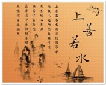
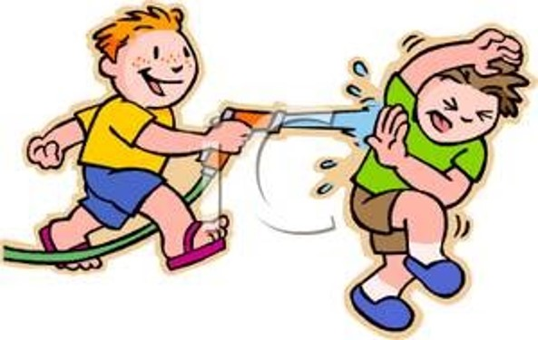
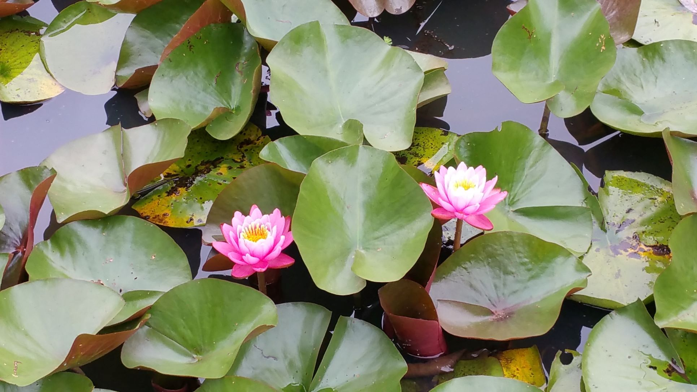
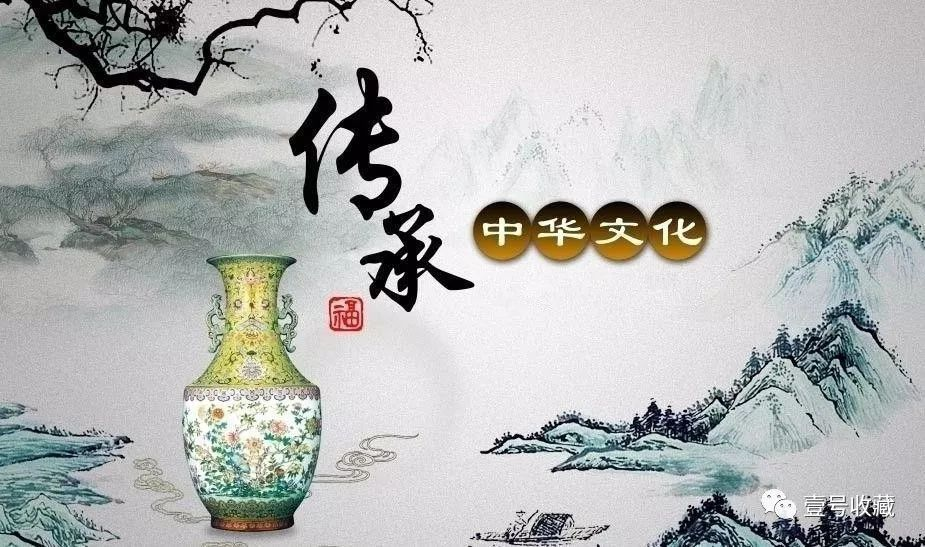
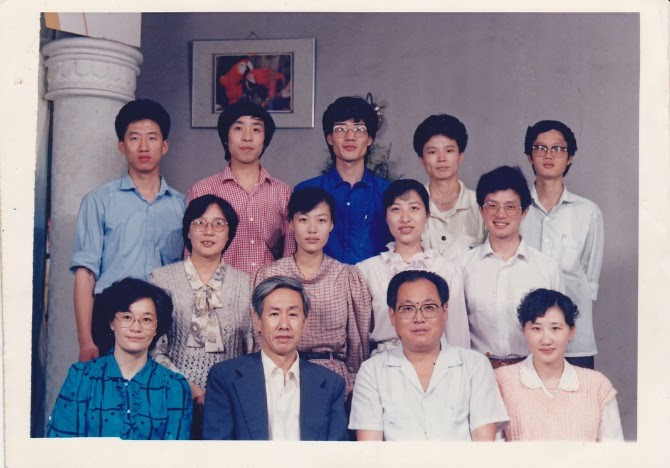
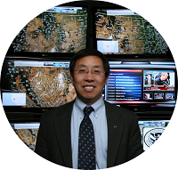

【封面】¶

【序】¶
王超杰同学的【乡愁永酒】终于与大家见面了。当我看到超杰发过来的初稿时，虽然有些在群里已有交流过，但我还是被深深的吸引住了，不为别的，就是那一份浓浓的乡愁。这乡愁里有纯真的同学情，这乡愁里有对师长和至亲的爱，这乡愁里更有一份对故乡的眷恋，拳拳之心跃然纸上，融入诗里阕中。
而这又是一部集儒释道与人生感悟之大成的随感随想记录。在《道德经》中寻事理，在《金刚经》中识空有，在《黄帝内经》中辩正邪，在《易经》和《论语》中明阴阳之平衡以至中庸。思孔孟，追老庄，谈玄说佛，以佛悟道，旁征博引，融会贯通，实乃我学习之标杆。
中西方文化的冲击碰撞，在激荡中难免会有痛苦、彷徨、无奈，诗词成为宣泄与寄托的最佳表现方式。于是我在超杰的诗词中似乎感觉到了陶潜的影子，是想借问何处是桃源吗？同时，我又看到有如王维那样坐看云起时的洒脱，最后还有如诗仙李白酒后诗百篇，不吐不快酣畅淋漓的无限惬意。有如上之心境，再加上唐之诗律法度森严，读之、品之便韵味无穷，越嚼越有味道。这就是【乡愁永酒】给我的总体感受。谢谢超杰同学，让我们分享了你的喜怒哀乐。
最后，不论是辛弃疾的“众里寻他千百度，蓦然回首，那人却在灯火阑珊处”，还是苏轼的“庐山烟雨浙江潮”，我想说的是：世界无西东，此心安处是吾乡。
缪锐萍
2020年 早春二月
【自序】¶
旅美三十年，背井离乡，常有纠结。闲暇无趣，就写作自娱。余谓之理疗。
读书，跑步，写作是我的养生三道。读书动脑，跑步动脚，写作动手。生命在于运动。
一点一滴，积少成多。十多年下来，八万多字。酸甜苦辣，喜怒哀乐，皆是心路风尘,冷暖自知。人生得一小册子足亦，余生且慢慢咀嚼回味。
这里应该感恩童鞋们的厚爱。他们通过平时的网络交流和难得的见面聚会，给我心灵以慰藉，也给我创作添灵感。
同学情加茶酒香是文字的催化剂，也是理疗的辅助剂。同学情是乡情，亲情，友情，和豪情四种人情的交汇融合。
没有童鞋，人生的路不知该如何走。光脚肯定是不爽的。
是为序。
王超杰
2020 早春二月
五绝¶
【如是我闻 • 新韵】¶
（一）
五眼谁为首？金砖你最萌!
莫学他霸道，发展利苍生。
（二）
入道有多途，无分社与资。
黑白非对立，灰里蕴真如。
注：
“入道多途”出自禅宗初祖达摩的【二入四行论】。
汉语成语有“殊途同归”。
邓小平有“白猫黑猫论”。
西方谚语也有“条条大路通罗马（All roads lead to Rome)”。

【闲居】¶
酒酣思李杜，梦醒念渊明。
桃源今何在，邀月杯中寻。
【中秋】¶
今宵明月异，万古客心同。
网络虽神妙，乡愁怕太浓。
【父亲节】¶
父道与天同, 茫茫四宇中。
无穷江海水, 万物尽葱葱。
【不亦乐乎】¶
远客家乡至, 幽林众鸟欢。
火红枫叶美, 应谢降秋霜。
【花与雪】¶
窗前几朵开，窗外一片白。
望雪心方净，观花念又来。
【赞格律诗】¶
方圆因规矩，美玉自雕琢。
格律为何妙？言稀限制多。
【孤帆远影】¶
孤帆逆水行，远影浪峰轻。
碧海长空尽，欲泊何处停？
【有感】¶
职海几春秋，浮沉独自游。
幽悠思故水，何日异乡流？
【裁员】¶
今日裁员走, 十年尽效劳。
旅途分岔口, 职场再开头。
注：洛克希德马丁公司是美国最大国防供应商。公司主要靠生产武器。因IT服务竞争强烈，利润不如武器制造，洛马把IT业务卖掉。在公司上班整十年。本来想在洛马干到退休。
【读博】¶
半百读博士， 人生又一关。
学习无止境， 好比日三餐。
注：从2016年到2019年，在美国宾夕法尼亚州的罗伯特莫里斯大学（Robert Morris University）读信息系统与通信科学博士。2019年5月毕业取得学位，开始人生转型（Transformation）。
【贺崔大鹏BQ】¶
猴年马上催，摇滚动春雷。
大展鲲鹏翅，波城又一魁。
注：
BQ = Boston Qualified （波士顿资格）。波士顿马拉松世界著名, 参赛者根据年龄性别必须达到一定的成绩标准才能报名参赛。
知足常跑群崔大鹏在华盛顿摇滚马拉松（Rock N Roll Marathon）获得 B Q。这里把他的名字入诗。催谐崔。
【情诗】¶
早知你是鱼，我即化作水。
你如鱼得水，我年年有鱼。
注: 吾弟超芳微信晒鱼缸,引用宋荦题江苏苏州沧浪亭对联“共知心似水，安知我非鱼”。典故出自【庄子·秋水】：
庄子与惠子游于濠梁之上，庄子曰：“倏鱼出游从容，是鱼之乐也。”惠子曰：“子非鱼，安知鱼乐？”庄子曰：“子非我，安知我不知鱼之乐？”
猴哥以情诗一首回应。鱼谐余。
【知“足”常跑】¶
赤脚亲草地，柔情从心起。
知“足”常跑步，豪放不拘泥。
【裸跑】¶
赤足慢长跑，累赘尽量少。
若非路人多，光屁股更好。
【Barefoot Joggling】
Jog without shoes on
I enjoy so much freedom
If nobody looks on
I rather bare my bottom
【天涯芳草】¶
奔命半世纪，侨居二分一。
天涯芳草绿，情独钟故里。
【春】¶
春眠大早醒，被窝读微信。
不怨天涯远，掌上有亲情。
【中彩梦】¶
强球十五亿, 夜夜梦黄梁。
梦醒衣冠整, 乖乖去上班。
注：
2016年1月，美国的强球（Power Ball）彩票奖金高达十五亿美金。猴哥买了两张，充满期待，自以为很快就可以辞职退休了。
【梦山】¶
久居平阔地，昨夜梦山庄。
绿树藏农舍，良田散土香。
五律¶
【沐阳 • 新韵】¶
志闲禅意远，春暖沐斜阳。
云淡晴空碧，风轻细草芳。
幽居一岁老，自愈百篇长。
归鸟吟新翠，离怀寄故桑。
注：
“志闲”出自【黄帝内经】”志闲而少欲，心安而不惧，形劳而不倦”。
去年三月到今年三月整一年，全球新冠病毒流行，美国尤甚。宅家抗疫，无法出游探亲，故有”幽居“。当然这里也有唐代诗人韦应物【幽居】中 “独无外物牵，遂此幽居情” 的禅意。
我以为读书和写作是有益于健康的自助理疗，故有”自愈”。”腹有诗书气自华”就是这个道理。
“故桑”指故乡的桑树。出自唐代诗人崔融【从军行】“依稀蜀杖迷新竹，仿佛胡床识故桑”。桑树和梓树合为桑梓，代指故乡。
沐阳谐音穆阳，我的家乡。

【龙抬头 • 新韵】¶
华夏龙头举，西天现曙光。
愚狐随纸虎，五眼妒金砖。
冷战伤犹痛，新毒病更传!
同舟该共济，何事惹争端？
注：
写于2021年农历二月二，龙抬头。
五眼联盟（FVEY）：美国，加拿大，英国，澳大利亚，新西兰。
金砖五国（BRICS）：巴西，俄罗斯，印度，中国，南非。

【读道德经】¶
万物生于道, 三才上下随。
自然原有序, 人类应无为。
秉性同天贵, 微躯与地卑。
寥寥五千字, 字字唤回归。
注:
天, 地, 人三才。天处上, 地处下, 人在中间。<道德经>第二十五章讲”人法地，地法天，天法道，道法自然。” 法者, 效法, 跟随也。
【易传 • 系辞 • 上】第一章开篇：“天尊地卑。乾坤定矣。卑高以陈。贵贱位矣。动静有常。刚柔断矣。” 讲的也是宇宙的自然秩序。
人法地，地法天，天法道，道法自然。故人最终要回归自然。
【友情】¶
独酌思好友, 何日再邀杯?
别后酒难醉, 醒来人未归。
旅愁无处遣, 时运与谁悲？
纵有互联网, 怎如形影随。
【佛】¶
如来本无教，菩萨亦非神。
苦海阔无边，何处是彼岸。
有求必有苦，无求才解脱。
四谛八正道，修行靠自己。
【忆八十年代福州的日子】¶
光棍七八个, 月薪一百多;
食堂少美味, 宿舍有酒桌。
不论谁烦恼, 哥们一起酌;
翻墙买宵夜, 醉饮把愁说。
注: 猴哥和猴友们住在福州西郊的建行干部学校, 夜晚大门上锁。半夜有人心情不好, 大家只好翻墙出去买酒和点心。
【博士班四君子】¶
同窗四君子，共读三春秋。
东西两文化，五行一文章。
德国蹄膀脆，韩国烧烤香。
都道学习苦，同饮百疲消。
注：博士班四君子，一个美籍德国后裔，一个美籍韩国人，一个美籍马拉西亚人，一个美籍华人，代表东西方两种文化。 我们合作发表了一篇文章，在2019年斯洛文尼亚国际会议上获最佳论文奖。在宾州读书时，我们常去匹兹堡一家德国餐馆。 德国烤蹄膀和德国生啤是我们最爱。常去的另一家是比利时餐馆，它的布鲁塞尔青口（Mussels from Brussels）和比利时啤酒是我们必点的。四人中两人居住马里兰州，两人居住弗吉尼亚州。我们定期在马里兰州的一家韩国餐馆小聚，吃韩国烤肉，喝韩国烧酒。
七绝¶


【秋风】¶
西风动木起涛声，独立阳台客意萌。
庭草才得昨夜雨，却教落叶乱杂横。
【秋色】¶
夜眠冻醒月如霜，晨起添衣御早凉。
欲作悲秋伤感赋，林中红叶映门窗。
【中秋】¶
今宵明月洒清辉，似近还遥不忍窥。
怀旧本来无定日，为何此刻最思归。
【乡思】¶
别情离绪几时休，愧对浮云问去留。
应笑庄生心志远，迷蝶渡海梦难求。
【秋凉】¶
旧历才翻七月半，晨风夜露几分寒。
季节更换天然律，人世沉浮乃正常。
【冬日自得】¶
孤芳自赏有谁识？乐在其中天地知。
莫道人生得意少，桃源就在静闲时。
【爬山偶得】¶
老树新枝峭壁间，行人止步叹流年。
人生衰盛平常事，世代传承总向前。
【穆阳水蜜桃】¶
蜜桃多水美名传, 合璧中西历苦酸。
先祖学成回故里, 后生何事未归还？
注:
“穆阳水蜜桃是由1927年比利时留学归来的缪怀琛（号琨庭）嫁接培育成功的，本来叫接蜜桃的，由于接蜜桃的读音跟福安话水蜜桃同音，久而久之边成为了水蜜桃。” - 【百度百科】
“缪怀琛(昆庭)，民国时期，比利时鲁汶大学农业硕士，回乡时带了比利时的桃和李的种子，在其家“桐子坪”街边的院子把比利时的桃和李跟穆阳当地的桃李嫁接改良，培育出穆阳“接蜜桃”和“柰”。
接蜜桃，方言谐音“水蜜桃”，后人直接写作水蜜桃。李子培育出来的新水果之所以叫柰，就是因为他想念比利时的妻子和女儿，却又因为时局动荡，父母又给他在老家娶了媳妇，他又是独子，没办法再去比利时，
所以感觉非常无奈，就把培育出来的水果叫柰。（详见《枫林一路秋》）” - 【福安姓氏 - 缪氏】
缪怀琛是我外祖父。久仰其名，从未见过。他在我母亲幼小时就逝世。
【夜读】¶
（一）
台灯带罩眼前明，书案临窗伴月星。
饭饱酒足收洗毕，从容开卷一身轻。
（二）
电视今宵寂寞身，空房寂静似无人。
你读小说我读易，楼上楼下各入神。
（三）
夜静灯孤倚小窗，随心开卷沁书香。
先人智慧如明月，半是朦胧半亮堂。
【上班路上】¶
晓阳映树火般红，夜月如钩嵌半空。
一个清幽一灿烂，人生奥妙在其中。
【感怀】¶
天涯浪迹为谋生，远影孤帆事未成。
岂恨身无名利禄，空怀壮志最心疼。
【湖边跑步遇龟】¶
无缘归海且湖龟，浊水残枝总自危。
地阔天高难任骋，清风作伴看云飞。
【雏雁初飞便嚣张】¶
知足常跑出女将，雏雁初飞便嚣张。
汗水今洒明珠港，波城展翅再翱翔。
注:
知足常跑群张雁女士第一次参加马拉松比赛就取得3小时42分钟的好成绩, 成为群里第一个获得波士顿马拉松参赛资格的女将。尊群主刘晔指示, 猴哥写七绝一首祝贺。
第二句巧妙嵌入女将名字, 不露痕迹, 尽得风流。
张雁女士参赛的是巴尔迪摩马拉松。巴尔迪摩是美国东部的一个重要港口城市, 华人美其名曰明珠港, 与夏威夷的珍珠港一东一西相媲美。猴哥的第一个马拉松跑的就是2011年巴尔的摩马拉松。
波士顿马拉松世界著名, 参赛者根据年龄性别区分必须达到一定的成绩标准才能报名参赛。2013年比赛期间遭两个兄弟歹徒残忍爆炸, 死伤惨重。死者中有一位华人女生同胞。
【湖】¶
孤云自赏映湖间, 众木争高挤破天。
隔岸闲庭愁相对, 临波芳草谁惜怜?
七律¶
【七律 • 学律有感】¶
老来学律费折腾, 字里行间妙趣横。
景有虚实凭想象, 情无深浅贵真诚。
对联齐整如仪仗, 平仄悠扬似水声。
不悔当年偏数理, 留得美味伴余生。
【七律 • 冬湖思春】¶
残雪未消新雪压，东风半路宿谁家?
枯枝叶尽银添鬓，弱草根深绿梦芽。
候鸟思归羁海角，坚冰欲破志天涯。
岸边孤影曾清瘦，野径寻踪问落霞。
【2014年底回国同学穆阳聚】¶
初稿
葡萄美酒酸又甜，夜半醉醒念从前。
碧水曾游光屁股，青山今抚老粗脸。
人生无常心不变，冰臼有约情再牵。
待到桃花红遍野，葡萄沟里话流年。
修改版（新韵）
葡萄美酒尽酸甜，醉醒三更念万千。
穆水曾嬉光臂膀，狮岩今暖老心田。
桥头怀旧情犹在，冰臼重游手再牵。
待到桃花红遍野，葡萄沟里话流年。
【2017年底回国同学福安聚】¶
天涯海角又三年, 咫尺今宵一瞬间。
喜看恩师胃口好, 难得好友酒杯浅。
漫谈勾起童真梦, 对饮又回青涩年。
乡恋犹如富春水, 花开花谢几时闲。
【2020春节宁德过年遇新冠疫灾】¶
阴雨浓云暗星空，春风未到病毒凶。
五湖医士肝胆照，四海同胞血脉通。
相信国家召唤力，祈福患者康复中。
宅家过节不添乱，度过难关再庆功。
【长跑野趣 】¶
昨夜飓风摧碧树, 今晨小径落叶铺。
才惊老树连根起, 又被横枝把路堵。
出去细雨加迷雾, 归来烈日正当午。
长程虽累不觉苦, 投入自然身心舒。
【雨中跑】¶
乌云蔽日扰心欢，室冷灯孤手倦翻。
弃椅伸腰哈欠打，推门撒腿雨滴沾。
凉风两袖吹汗臭，喷嚏三声去体脏。
暂忘书中颜似玉，归真返朴更天然。
【新年赞跑群】¶
知足常跑又一年，汗水咸来露水甜。
老将频频刷纪录，新人济济敢争先。
刘郎掌舵群兴盛，马帅攻城霸两连。
美女英雄皆榜样，你追我赶看明年。
【迎接猴年重跑鬼见愁】¶
三年未上鬼见愁, 岁末重登胆气豪。
山顶树高花落尽, 天穹云淡雁当头。
路长坡陡强筋骨, 日暖风轻解旅愁。
回首当年撒野处, 草丛依旧笑愚猴。
注：
Grace Drive 这条一英里长的斜坡是我2011年和2012年训练马拉松时常跑的路径。我管它叫鬼见愁, 一是它又长又陡具有挑战性, 二是在这条路上有过一次意外(由于大自然的召唤)。
2012年跑完第二个马拉松后, 膝盖不适, 就再也没有回来过。今天受知足常跑跑群激励, 为迎接2016猴年, 重跑旧路，重温旧梦。
那天群众问撒野详情, 猴哥吱吱唔唔, 羞于启齿, 还好群主解围, 回答大家 “猴哥大闹天宫” 。真是一言以蔽之。我惊叹领导英明的同时, 暗问: how do you know? (猴肚又闹)
【2015知足常跑新年抒怀】¶
星火燎原仅半年, 同胞共趣异乡联。
清幽野径伴君跑, 激烈赛场抢人前。
全马五千皆挑战, 风吹雨打不等闲。
感恩群主心思费, 健美人人展笑颜。
注:
2014年夏天猴哥和清华校友，跑友，兼邻居刘晔发起成立马里兰州哈维郡华人跑群，取名“知足常跑”。
足有双意，既是满足，又是跑步之足。刘君为群主，管理有方，群众多达二百余人。
【知足常跑Happy Hour】¶
群里帅哥美女多, 今宵欢乐挤一桌。
相识恨晚酒嫌少, 谈笑风生话特多。
自古旅人皆寂寞, 从来饮者爱罗嗦。
人生失落须跑步, 要不忧愁与谁说?
注：颈联借用李白《将进酒》两句“古来圣贤皆寂寞，惟有饮者留其名”。尾联借用李白《将进酒》两句“人生得意须尽欢，莫使金樽空对月。”
【跑霸BQ】¶
知足常跑群继美女张雁首马BQ之后, 帅哥刘吉成紧追其后, 最近也拿下首马BQ。 他们成为我群的BQ先锋，学习榜样。
昨天群主刘晔与几位跑马老将为两位设宴祝贺, 煮酒论英雄。我得以有机会和他们近距离互动, 留下深刻印象。 张雁是美眉一个, 貌似纤弱, 一点看不出来是跑马拉松的, 更何况BQ。 张雁还爱品茶论禅，美容养生。 真是“中华儿女多奇志，既爱红装又武装”。刘吉成则憨厚朴实, 笑容可掬。他农村长大, 特别能干, 还自己动手铺篮球场, 实在可贵。 凑巧的是他们俩还是南京气象学院校友, 颇有缘份。跑者大都是吃货, 群主刘晔领导有方, 为鼓励大家跑步, 诱之以食，效果真不错。 据说老将崔哥昨晚吃了宴会, 心痒嘴馋, 也跃跃欲试, 欲争取BQ。 全体群众翘首拭目以待。
猴情满怀，赋七律一首以祝贺：
谁说雁过不留痕, 首战大吉功告成。
曾在金陵为学长, 今争波马步后尘。
刘兄憨厚农夫样, 张妹优雅黛玉神。
待到麻州传捷报, 全群上下尽欢腾。
注：
第一联写刘吉成沿着张雁几个月前展翅飞翔的轨迹，一举取得同样的首马BQ。这里把两个人的名字都巧妙地嵌进诗里，不露一丝痕迹，和以前写张雁首马BQ的“雏雁初飞便嚣张”异曲同工。此乃猴哥绝活，在此自吹自擂一下。
题目【跑霸BQ】，BQ = Boston Qualified（波士顿资格）。波士顿马拉松世界著名, 参赛者根据年龄性别区分必须达到一定的成绩标准才能报名参赛。能BQ的都是跑霸。霸字拼音“Ba” ，霸BQ=BBQ。BBQ是英文Barbecue（烤肉）的简写。民以食为天，跑与吃兼顾，能吃能跑，长生不老。
词令¶
【猴言怨语】¶
（一）
无聊莫凭栏
芳草绿枝
鸟语花香
与谁共赏?
望斜阳
云深处
或是太平洋?
劝后生
父母在
莫离乡
尽孝应该守身旁
有志何必留洋?
龙在浅滩
虎落平阳
尽为他国做嫁衣妆
遗憾!遗憾!
(二)
归途茫茫
除了做梦
莫非空谈
美钞绿
空气鲜
天空蓝
图有归心无归胆!
注： 此篇纯属自己瞎吟，没有词牌。
【采桑子 * 人生苦旅伤别离】¶
人生苦旅伤别离。
日也思念，
夜也思念。
一东一西悬两边。
刚接地气又升空。
上也不是，
下也不是，
不上不下有谁知？
注：和缪锐萍同学【采桑子 * 难得相见说离别】
【采桑子 * 难得相见说离别 缪锐萍】
难得相见说离别。
聚也匆匆，
散亦匆匆，
一聚一散恨无穷。
开怀畅饮正酣处，
醉也悠悠，
醒亦悠悠，
半醉半醒任去留。

【天净沙 * 马拉松】¶
猴哥老马牛人，十K半马全程，夜间周末清晨。无可奈何，偷闲自个折腾。
【十六字令 * 猴】¶
猴,
股市飙升独自愁。
全民炒,
股票胜毒草。
【十六字令 * 群】¶
群,
七嘴八舌掌上屏。
远还近,
天涯若比邻。
【沙塞子 * 西山落日晚霞】¶
今天闲着, 翻旧日记, 偶然看到二十五年前在福州时朋友一博(笔名)写的一首词和我的题注。当年落魄之境以及友情之纯, 依然历历在目。
【沙塞子】
西山落日晚霞, 孤雁回。
对景伤怀, 凭谁解?
人皆乐甚, 我独欢寡。
秋风千里柳絮飞, 柔波起, 伊人安在?
但无语, 偏舟一叶, 任偶天涯。
一博
90。7。3。
托词悲秋, 实为伤春, 难逃老夫洞见。
超生题
7。3。
【如梦令 * 端午节遇暴雨】¶
（一）
昨夜雨急风骤, 唯恐汨罗洪涝。
试问鱼和虾, 都说粽子完好。
知道, 知道, 放心吟唱<离骚>。
（二）
昨夜雨急风骤, 唯恐汨罗洪涝。
试问鱼和虾, 都说粽子完好。
谎报, 谎报, 你们私嚢可饱?
古诗新译¶
【无题 • 唐 • 李商隐】¶
来是空言去绝踪，月斜楼上五更钟。
梦为远别啼难唤，书被催成墨未浓。
蜡照半笼金翡翠，麝熏微度绣芙蓉。
刘郎已恨蓬山远，更隔蓬山一万重。
【新译】
来的时候, 你无声无息。
走的时候, 你也没留痕迹。
我为你睡不着, 翻来覆去,
不信你去问昨晚的月明星稀。
我在梦里,
为你的远别哭泣。
想给你写信,
可这墨水怎么磨都不够淋漓。
蜡烛的火焰半暗半明,
就像我时旧时新的回忆。
熏香的青烟一丝一缕,
那是我有条无理的思绪。
刘郎以为蓬山遥远,
他哪里知道,
横在你我之间的,
才是无法穿越的距离。
注：对李商隐的无题诗一向情有独钟。他表达的感情超越单纯的男女之爱情而涵盖了所有人情 – 亲情，乡情，爱情，和豪情。
【无题 • 唐 • 李商隐】¶
重帏深下莫愁堂，卧后清宵细细长。
神女生涯原是梦，小姑居处本无郎。
风波不信菱枝弱，月露谁教桂叶香？
直道相思了无益，未妨惆怅是清狂。
【新译】
你天使般的生活无忧无虑,
你神女般的世界如梦如幻。
追你的人有一箩筐,
你却一个都看不上。
今夜我独自徘徊,
在你高深的墙外,
仰望你神秘的窗。
听到脆弱的树枝在寒风中摇曳,
我担心自己经不住这夜晚的冰凉。
可是一想到月宫上的桂花,
此刻正沐浴着甘露, 散发出清香,
我心中不由燃起一线希望。
我承认牛郎织女的相思是很苦,
可他们并不体会单相思有多难。
远处灯火黯淡,
估计那间酒吧快要打烊。
我恨不能去找玛格丽姑娘*,
让她调一杯浓浓的鸡尾酒,
就拿我的满腹苦水和她交换。
青柠檬汁微甜还泛酸，
龙舌兰酒暖身更壮胆。
单相思实在不爽,
今宵我要把自己灌醉,
以清狂对付惆怅。
注: 北美有一种鸡尾酒叫Margarita（玛格丽塔），特别流行。由产于墨西哥的龙舌兰酒和青柠檬汁加冰块调制而成。据说是由美国德州一个叫Margaret（玛格丽）的女士在家里开派对时发明的。
【答丁元珍 • 宋 • 欧阳修】¶
春风疑不到天涯，二月山城未见花。
残雪压枝犹有桔，冻雷惊笋欲抽芽。
夜闻啼雁生乡思，病入新年感物华。
曾是洛阳花下客，野芳虽晚不须嗟。
【新译】
我疑惑
春风吹不到
遥远的异国他乡
都已经二月
坐落在山头的庭院
还不见春暖花开
残雪半遮的草地黄中透绿
坚冰冻压的树枝形只影单
夜间听到归雁啼叫不免想家
春节患上流感咳嗽更生感叹
初一路上爆胎
预感天有不测风云
初三项目取消
果然又得重找饭碗
曾经白手起家
重来又有何妨
【秋夜寄丘员外 • 唐 • 韦应物】¶
怀君属秋夜，散步咏凉天。
空山松子落，幽人应未眠。
【新译】
秋夜感觉有点凉
想喝两盅取暖
可惜找不到人陪伴
实在无聊
只好溜到后院瞎逛
树林幽静
忽然听到松子落地的声响
禁不住猜测
此刻的你是否也在无眠辗转
【秋日偶成 * 宋 * 程颢】¶
闲来无事不从容，睡觉东窗日已红；
万物静观皆自得，四时佳兴与人同。
道通天地有形外，思入风云变态中；
富贵不淫贫贱乐，男儿到此是豪雄。
【新译】
闲人眼里无急事,
睡觉才是要紧事。
你若静心观察,
万物怡然自得。
你有闲情逸致,
四季美景如画。
当你超越物欲,
大道直通天地。
当你摆脱肉体,
灵魂逍遥云里。
有钱你别任性,
没钱更要欢喜。
男人做到这点,
女人争相爱你。
【新版登鹳雀楼 * 王之涣】¶
我在每一句前面加两字，就得到一首富有禅意的新诗:
禅修白日依山尽，照见黄河入海流。
练到欲穷千里目，何须更上一层楼。
【新解】
白日: 白天。
山尽: 山的尽头, 山崖。
欲穷: 没有欲念, 六根清净。
【新译】
白天在山崖禅修入定，
我慧眼开通，
照见滚滚黄河流入大海。
只有练到六根清净,
才能远眺千里之外。
如果贪欲障目，
爬得越高，
越是看不清晰。
其他¶
【一日之计在于晨】¶
小径赤足慢长跑，阳台光膀俯卧撑。
上班之前健身体，下班回来顾家人。
功名利禄终究空，柴米油盐才是真。
一日之计在于晨，读书锻炼最养生。
【敬业】¶
工作其实更健身，上蹿下跳任折腾。
客户员工当器械，抬举推拉功夫深。
你如热爱你工作，上班哪里会辛苦。
别人花钱为减肥，猴哥锻炼拿俸禄。
【冬天跑步】¶
(一）
冬天跑步好狼狈，一把鼻涕一把泪。
别人以为活受罪，其实个中有滋味。
（二）
冬天跑步挺艰难，全副武装御风寒。
不要把我当坏蛋，报警说我抢银行。
（三）
冬天跑步有情调，残雪枯枝伴木桥。
路滑何须怕摔跤，林静人稀谁取笑?
（四）
冬天跑步不容易，整装待发却犹豫。
屋里暖和又温馨，门外冰冷风还急。
（五) 中西合璧版：
冬天跑步不Easy，整装待发却犹豫。
屋里暖和好Cozy，门外冰冷还Windy。
【春】¶
白云悠悠浮蓝天，聚散依依仅瞬间。
才朝太阳前方去，不觉又到树梢边。
【杞人忧天】¶
（一）
微勃微软到微性，鼓哥压虎曾激情。
大家沉迷互联网，谁有心思爱和亲。
注：
微勃谐微博(Weibo)
微性谐微信(WeChat)
鼓哥谐谷歌(Google)
压虎谐雅虎(Yahoo)
（二）
精彩世界聚荧屏,睡觉吃饭各自盯。
担忧人类掉魔网,远离自然失天性。
【醉诗】¶
（一）
话若投机千杯少，酒逢自己半句多。
人生失意须尽欢，莫等得志空对月。
（二）
古来圣贤谁寂寞？唯有饮者忘功名。
劝君少尽一杯酒，西出阳关无人扶。
（三）
猴哥斗酒诗一篇，平仄韵律抛天边。
醉卧他乡君莫笑，古来漂泊几人回？
【初春雨夜跑】¶
微风细雨静夜寒，小径街灯绿草霜。
云外忽闻飞机过，影斜更显细腿长。
【猴拉松】¶
咬文累计上百篇，孵蛋苦等还十年。
手脚一刻闲不住，拉松跟在马后练。
【照镜自得】¶
体健何愁两鬓霜，心宽笑对三生憾。
无名无禄无忧虑，有酒有诗有安康。
【酒禅】¶
（一）
花生啤酒同相伴，周末清闲秋夜寒。
细嚼慢酌无所想，谁言独饮乃非禅？
（二）
脾酒一杯心舒坦，小菜两碟嘴解馋。
无朋同侃且将就，有闲独酌权当禅。
（三）
白葡萄酒冰又甜，周末夜晚得清闲。
无朋无菜无高论，自斟自酌自排遣。
How are you doing？
猴啊又独饮
【猴解三法印】¶
诸行无常有因果,诸法无我有轮回。
涅槃寂静心犹在,佛法空性无有中。
【晒太阳】¶
春天太阳好温暖，猴哥爱晒光着膀。
邻居美女别嗤笑，龙体不如去年壮。
【晨读】¶
牛奶面包醇又香，阳光照我赏诗章。
冬天不见花和鸟，正是读书好时光。
【禅】¶
生活处处都有禅，看你是闲还是忙。
忙人不闻鸟吟唱，闲人见草动柔肠。
【盹禅】¶
打盹谁说不是禅，养生何必靠仙丹。
伸直懒腰打哈欠，闭目养神心地宽。
【卧禅】¶
周末悠闲好时光，后院清幽绿树环。
仰天方觉阳光灿，闭目始闻鸟语欢。
冷凳闲坐日如年，何妨横躺好春眠。
站着顾影易自怜，倒下反得一片天。
【微信这个东西】¶
周末恋床懒得起，闭目养神接着眯。
无奈微信太热闹，叮叮当当难休息。
不读心里很好奇，不写手痒过不去。
你说为何不关机? 谢谢你的叟注意!
【路在脚下】¶
人生道理千千万，三教九流数不完。
读了不懂都不算，似懂非懂更麻烦。
读了不用容易忘，用的时候别照搬。
他人说教皆荒唐，自个摔跤才文章。
觉悟要靠吾自己，修禅不要怕孤单*。
条条大道通罗马，人生之路各自闯。
路不在别人书里，路不在圣哲嘴上。
路不在自己梦中，路就在自己脚下。
注：悟字右边带 “吾” 字，禅字右边带 “单” 字。
【观自在】¶
心经简短 字字珠矶
开头三字 我最欢喜
睁开眼睛 看到外界
闭起眼睛 见到自己
向外贪求 失去自己
向内静观 发现自己
自由自在 随心随意
心生烦恼 请“观自在”
身处逆境 请读心经
注：猴哥有一回职场遇险， 一段时间，天天抄写【心经】，效果甚佳。
【猴哥训马之“度”】¶
每周跑三次，周三跑坡度， 周五跑速度，周末跑长度。
哑铃练力度，拉伸灵活度， 游泳加散步，张与驰有度。
偶尔练过度，增加酒精度。
注：几年前, 训练马拉松时写的。现在重读, 觉得挺有道理。
【随想】¶
无解何需无奈，无为并非无能。
身随流水顺势，心寄闲云安居。
【笑】¶
笑一笑，十年少，不笑人就容易老。
你想学我活百岁，务必笑得比我好。
我若微笑咪咪咪，你必窃笑嘻嘻嘻。
我若傻笑呵呵呵，你必狂笑哈哈哈。
【新三字经】¶
和为贵 好相处
吃点亏 让一步
咱老中 炎黄子
五千年 有深度
你老美 纸老虎
两百年 太轻浮
拳头硬 乱飞舞
好扩张 卖民主
三权鼎 责谁负
两党斗 国事误
奥巴马 少数族
欲救世 白人妒
华尔街 敛财富
老百姓 日子苦
马克思 早预祝
资本家 自掘墓
劝国人 早醒悟
学西方 勿盲目
真民主 民做主
假民主 钱做主
要矛盾 少数富
要和谐 大家富
一党制 难免腐
让民众 来监督
搞经济 市场助
定计划 靠政府
【春天过敏】¶
（一）
春天患过敏，喷嚏惊左邻。
以为雷声响，抬头观行云。
咋不把嘴抿，猴婆狠批评。
俺是乡巴佬，哪知啥文明。
（二）
过敏不是病，吃药并不灵。
大声打喷嚏，排毒又舒心。
别学城里人，做事太拘谨。
憋出一身病，要怪讲文明，
（三）
文明才是病，富贵生毒菌。
尽是假大空，远离人本性。
只有老百姓，与天地最近。
简单过日子，保持自然心。
自然¶
【云】¶
我闭目
想不出你的模样
我竖耳
听不到你的声音
你时而闲栖在树梢
你时而高悬在天上
你时而驻足俯视
你时而随风飘移
你时而洁白如棉
你时而尘埃蒙面
你时而近在咫尺
你时而远在天边
你因阳光而灿烂
你因月色而妩媚
你带来雨露滋润大地
你化作雷电震撼苍穹
你没有固定的位置
你没有规则的形状
你似近又远
你去来无踪
你给人间梦幻
你把天地相连
【尼亚加拉大瀑布】¶
有一种距离
和尼亚加拉大瀑布一样宽
任何一种跨越的尝试
都是徒劳
乃至危险
有一种落差
和尼亚加拉大瀑布一样深
飞流直下
势不可挡
人与人之间的距离和差异
就当是大自然的造化
一如尼亚加拉大瀑布
请不要因为无法超越
而叹息无奈
就让我们为她的美丽
叹而观止吧
【光膀晒太阳】¶
今天我又光膀
因为我爱太阳
没有阳光
万物不能生长
没有阳光
人类生存困难
太阳懂体谅
在我们睡觉的时候
悄悄躲藏
太阳好心肠
托月亮守护窗外
让星星点缀我们的梦乡
太阳很周到
怕我们睡过头
清早透过纱窗
提醒我们该起床
冰封雪飘
她照耀大地抵御严寒
雨过天晴
她送来彩虹色彩斑斓
太阳是我们的榜样
做人要阳光
带给他人温暖
做人要有激情
但不要过热把人烫伤
替人分忧
为人着想
但不给人施加压力
不给人增加负担
做父母的
要学习太阳
当领导的
要学习太阳
今天我又光膀
因为我爱太阳
【今天你晒太阳了吗？】¶
生命最重要的
不是财富和权势
而是阳光，空气和水
不论贫富
不分贵贱
我们每一个人的身家都一样
我们都平等地拥有大自然
和她所赋予的
取之不尽用之不竭的无价之宝
所以我们每一个人的身家
都是无价的无穷的
至于钱财多和少
至于官职高和低
在无价和无穷面前
都是微不足道的
阿里巴巴上市
马云成为中国首富
而他的身家
与一个乞丐没有区别
奥巴马当美国总统
称雄称霸世界
但他的身家
与一个囚犯没有两样
请不要羡慕
马云的财富
奥君的权势
请重视和珍惜
任你享用无穷无尽的
阳光，空气和水
今天你晒了吗？
我知道你晒了
你在网上
晒了不少照片
今天你吸了吗？
我知道你吸了
你在KTV包厢里
吸了许多乌烟瘴气
今天你喝了吗？
我知道你喝了
你在应酬宴请中
喝了过量的酒精
但是请别忘了
每天都要
晒太阳
吸新鲜空气
喝清水

【阳光, 空气和水来自哪里?】¶
见到明媚阳光
才知道自己在阴暗中摸黑了多久
吸到新鲜空气
才知道自己在雾霾里喘息了多久
见到涓涓细水
才知道自己在沙漠中饥渴了多久
见到你,
才知道阳光, 空气和水来自哪里
【我是太阳】¶
寒冬
我带给你温暖
酷夏
我会把你灼伤
有时
被云遮挡
我让你惆怅
偶尔
我也悲伤
你得撑雨伞
白天
我的灿然
让你心情舒畅
夜晚
我借月光
在你床前徜徉
不管春夏秋冬
不论阴晴圆缺
我是太阳
我最阳光
【阳光, 空气和雨露】¶
要像太阳
无分别心
普照万物大地
要像空气
给人供氧
不留一点痕迹
要像雨露
微风中
润物无声细腻
不要学马云, 普京
乔布斯和希拉里
财富和权力
乃人类天敌
把那些商贾, 政客
桶桶扔到垃圾堆里
不受外物刺激
不被他人激励
谁敢拔苗助长?
我根深扎土里
我只效法自然
我就崇尚自己
【湖】¶
不像江河奔流不息
你永远守着同一圆心
不似海洋汹涌澎拜
你一贯静默怡然自得
你平缓的湖面好泛舟
你清幽的湖边好垂钓
寒冬，你被冰封雪盖
春暖花开，鸟儿为你吟唱
盛夏，你有绿树环绕
秋高气爽，红叶投影你的心怀
白天，你在阳光下波光潋滟
夜晚，你在月色中烟雾朦胧
虽然原地不动
你非死水一塘
当风起
碧波荡漾是你的微笑
当雁过
展翅翱翔是你的遐想
没有大海的深奥
鱼群是你的宝藏
没有江河的踹急
闲适是你的风范
当江河入海无影无踪
你依然如故不声不响
你是跑者的天堂
你是我的港湾
注：美国马里兰州哥伦比亚市有三个湖。一个大湖， 一圈约2.5英里；一个中湖，一圈约2英里；一个小湖，一圈约1.5英里。
湖边是跑步的最佳去处。一则路径安全，二则景色优美，三则跑程好计算。跑一圈是小资怡情; 跑两圈是中产享乐; 跑三圈是土豪奢侈。仅以这首小诗献给爱好跑步的群众和朋友。
【山海恋】¶
不要说你高山仰止
其实我也望洋兴叹
雾绕山腰你不曾介意
浪拍沙滩我没有妒嫉
落叶梦成孤帆一片
浪花梦游青山绿水
待到暴风
我会闻到你的咸味
待到闪电
你会见到我的苍翠
偶尔雨过
还有彩虹惊现
为那七彩瞬间
守候千年
注：在夏威夷度假，看到山海相接，有感而作。
【四季】¶
前几天好热
仿佛听到夏天的脚步蹒跚
这两天转凉
似乎冬天刚刚告别又回乡
春天里有冬夏
夏天里也有春秋
一如职场的反复无常
一如生活的变化多端
而冬天终究会到来
只是希望那时
能尽量留住秋天的金黄
再创造一点春天的灿烂
自娱¶
【孤独之美】¶
孤帆远影
李太白长江别友
独立寒秋
毛泽东湘江抒怀
滕王阁上
落霞与孤鹜齐飞
汨罗江边
众人皆醉我独醒
寂寞是瞬间的愁
孤独是永恒的美
注：
“孤帆远影碧空尽，唯见长江天际流”，出自李白的《送孟浩然之广陵》
“落霞与孤鹜齐飞，秋水共长天一色”，出自王勃的《滕王阁序》
“独立寒秋，湘江北去，橘子洲头”，出自毛泽东的《沁园春 ● 长沙》
“举世皆浊我独清，众人皆醉我独醒”，出自屈原的《楚辞 ● 渔父》
【孤独 （一）】¶
当你驱车
在拥挤的高速公路上
想着家乡的山青水秀人杰地灵
你不孤独
而当你上班
看着那些不学无术狗屁不通的洋人
在会议上张牙舞爪胡说八道的时侯
你是孤独
当你为了一张绿卡
不得不夹着尾巴当孙子的时候
你不孤独
而当你兜里揣着洋护照
心里却想着叶落归根的时候
你是孤独
当你用带有乡音的洋文
同老板讨价还价谈工薪的时候
你不孤独
而当你用夹着英语的普通话
训斥你不听话的孩子的时候
你是孤独
当众人皆醒
唯你独醉的时候
你不孤独
当众人皆醉
唯你独醒的时候
你是孤独
【孤独 （二）】¶
孤独
是一首写不完的情诗
平常尘封在抽屉里
偶尔伤感才打开
孤独
是一部读不完的巨著
平常搁置在枕头边
偶尔梦醒才翻开
孤独
是一枚精确的针灸针
轻轻的一下
扎到的准是旧时伤痕
孤独
是一种不治的慢性病
任平时百般调养
总逃不了偶然的急性发作
【酒】¶
它无事不登门
它从来不客套
它桃李不言下自成蹊
它点点滴滴润物细无声
它不纠缠
它不罗嗦
你不需要它的时候
它默默在角落等待
你需要它的时候
它也不会过分热忱
它不问你怎么回事
心事能说的清楚吗？
它不会劝你想开点
想开了还需要它吗？
它只是静静陪伴你
时而一点一滴安抚你
时而一杯一盅疏通你
此时无声胜有声
直到你感叹
“但愿人常酒”
那是它触及你心灵深处
直到你吟唱
“酒酒那个艳阳天”
那是它带给你阳光明媚
直到你高歌
“酒有凌云志”
那是它激发你豪情满怀
直到你找到了自己
“酒违了，兄弟”
它才和你告辞
“祝你们天长地酒”
哥俩齐声说
“再会，在不酒的将来”
【无聊】¶
我肚子不饿
因为我刚刚吃饱
我没有食欲
因为我刚刚吃腻
天上下着雨
所以地上都是水
你说我无聊
其实我在和自己玩笑
都怪这是一个无所事事的星期天
更何况天那么阴，雨又那么绵
白天见不到太阳
夜晚估计也没有月亮
昨天我跑了一万五
大吃大喝现在肚子还鼓
他们为了瘦身
又节食又锻炼真是何苦
我身上没有肥肉
碰一下全是硬骨
我刚刚吃了广东早茶
星巴克的咖啡我嫌苦
你开你的车
我打我的呼噜
迷迷糊糊
我想起小时家里养的猪
饲料虽少
日子却过得很自如
还有邻居那只狗
整天流浪在街头
活着其实很简单
活着其实很实在
别以为我傻
其实我心里有数
别以为我呆
其实我并不糊涂
都怪这阴雨绵绵的星期天
我的脑袋在车座上一时靠不住
【空间】¶
给自己
找一个角落躲藏
一个没有喧嚣的地方
象蚂蚁
在地面奔走之后
钻进洞穴，无人扰乱
给自己
留一个片刻踹息
一段属于自己的时光
象飞鸟
在天际周旋之后
驻足枝头，叶绿花香
每一天
都找一个机会
为自己搭建一个空间
在那里
从容地小憩
再把得失是非盘点
【无】¶
把
所有的有
浓缩成
一切的一
再把这
所有的一切
和
一切的所有
融入酒杯
一饮而尽
一醉方休
一无所有
【写博为己】¶
写博其实为自己
闲着和自己聊天
烦时给自己解闷
乐则和自己幽默
苦则给自己安慰
自己有多美丽
有多成熟
有多智慧
不写不知道
一写吓一跳
更不用说天外有天
那么多博主
每一个都是独一无二
不读不知道
一读吓一跳
【俺是博主】¶
不求良田万顷
只需荒地半亩
开博就如开荒
写博好比耕作
每个字
都是一粒种子
每一篇
都有几颗汗珠
乐在其中
不知寒暑
上班
老板做主
回家
老婆做主
闲暇
孩子做主
这里
俺是博主！
【平庸是一口温柔的陷阱】¶
不怕辛苦
就怕平庸
不怕挫折
就怕平庸
不怕冒险
就怕平庸
不怕失败
就怕平庸
平庸太有魅力
见到平庸
我心动
见到平庸
我腿软
平庸是一口温柔的陷阱
掉进去容易
逃出来难
我喊救命
没人听见
只有遥远的星星
从那狭小的高空
向我眨眼
还有那逍遥的行云
朝我招手
匆匆飘过
【我是】¶
我是一叶孤帆。
海阔无边，回首无岸。
漂荡，漂荡。
我是一朵浪花。
想亲沙滩，总难靠岸。
向往，向往。
我是一只海鸥。
觅食浅滩，志在天上。
徜徉，徜徉。
我是一片汪洋。
与云比深，与地比宽。
包含，包含。
智慧¶
【什么是成功？】¶
小学的时候
成功
是字典里学到的一个生词
童趣和它毫无关系
中学的时候
成功
是考试拿到的一个满分
和满分带来的满足
大学的时候
成功
是初次离家的独立生活
乡土气息在城市喧嚣中幸存
工作以后
成功
是单位里的一群朋友
牢骚满腹抽烟喝酒
漂洋过海
成功
是一次又一次的挣扎
起初总有长进，后来老回原点
当在梦里拾捡几分硬币
成功
便是财富
当为谋职递上一份简历
成功
便是职业
当为漂亮女子心跳加快
成功
便是美色
当为领导入耳的表扬得意
成功
便是美名
成功
在字典里只有一个定义
在生活中则像立体几何
有那么多的边, 那么多的角
每个人走过的都是不同的边缘
每个人看到的都是不同的角度
成功也许更像一个圆
不管转了多少圈
你总是回到那个起点
你总是离不开那圆心
这个起点
是你心灵最初的呼唤
这个圆心
是你生命原始的质朴
成功是善待自己
成功是善待家眷
成功是善待父母
成功是善待朋友
成功是与人为善
成功是自得其乐
【人生就像登山】¶
有的人踩着别人的肩膀上去
有的人抱着别人的大腿上去
有的人骑骆驼上去
有的人坐缆车上去
有的人坐轿子上去
有的人乘直升飞机上去
大多数人只有靠自己
一步一个脚印爬上去
虽然辛苦
却有沿途美景
赏心悦目
虽然缓慢
但也从容自在
怡然自得
他们在有生之年
大都无缘到达顶峰
然而在半山腰
结束人生之旅
更显壮烈
又有何妨
【小才好大糟糕】¶
当假乳越做越大
女人越变越丑
当钱包越来越鼓
男人越变越恶
当权力越升越高
官员越来越腐
大鱼吃小鱼
大企挤小企
大炮轰小炮
大国欺小国
谁都想当老大
人类尔虞我诈
说来很可悲
我们在进还在退？
卫星虽然上了天
导弹却在地上狂轰滥炸
宗教信仰原本崇高
人类却常为此冲突流血
民主理念原本先进
国家却多为此割据分裂
大有什么好？
越大越糟糕！
不论是上帝的杰作
还是自然的进化
生命其实很简朴
荣华富贵实在是累赘
生命其实很顽强
身外之物简直是多余
人人安居乐业
家家和和睦睦
宗教相互包容
国家相互尊重
小我小民小国
大慈大悲大公
小才好
大糟糕
Small is Sweet
Big is Bad
【村长好当还是县长好当？】¶
你问我
村长和县长
哪个好当？
我不知道
因为我什么长
都没有当过
但是
我知道
五绝和七律
哪个好写
五绝四句
仅二十字
貌似好写
其实难矣
麻雀虽小
五脏俱全
就那么点资源
要写出佳作
容易吗 ？
七律八句
共五十六字
资源丰富
似乎好写
其实不然
这么多资源
如何有效调度？
如何合理分配？
不论五绝
还是七律
都要遵循格律
平仄，押韵, 对仗
景观，理趣, 典故
感时伤怀
抒情咏志
都要全面兼顾
格律诗难写
父母官难当
【幽默】¶
林语堂说
幽默没有旁的内容
只是智慧之刀的一晃
确实
幽默是智慧与机灵的邂逅
智慧之刀总是藏而不露
只有机灵像夜猫的双眸
逮着时候才让宝刃出鞘
智慧是
三分天生的资质
三分生活的阅历
三分心灵的感悟
再加上一点一滴的积累
低俗，庸俗
粗俗，媚俗
只要带俗都不是幽默
【生命像一朵野花】¶
并非所有的牺牲
都会被人感知
并非所有的忍受
都会被人体会
并非所有的怨气
都有地方发泄
并非所有的苦水
都有地方倾吐
并非所有的智慧
都有用武之地
并非所有的汗水
都能开花结果
生活是一缸老酒
每个人自酿自饮
生命像一朵野花
每个人孤芳自赏
【自知者明, 知人者智】¶
人之初, 性本善。
所以我们慈悲为怀, 众善奉行。
人之初, 性本馋。
所以民以食为天。人生在世, 吃喝两字。
人之初, 性本懒。
所以勤能补拙是良训, 一分辛劳一分才。
人之初, 性本贪。
所以我们有时贪得无厌, 舍本求末, 舍近求远, 舍内求外。
人之初, 性本单。
所以我们慎独守真, 向内追求, 享受百年孤独。
【我和动物 】¶
我是穆阳猴
就爱上串下跳
手脚一闲心就发愁
我生肖属蛇
既温柔又恶毒
谁敢惹我那还了得
有时我是牛
勤恳耕作为他人
自己一点都无所求
有时我是猪
爱吃贪睡懒收拾
大白天打盹打呼噜
有时我是兔
散步像在赶路
老婆跟不上总嘀咕
有时我是龟
做事慢条斯理
不想做总是往后推
【点和线】¶
不要问我成功没有
问我经历过没有
不要问我幸福与否
问我苦过没有
终点只是一个点
而抵达终点的那条线
不论是曲是直
却包含了无穷的点
【周末读禅 】¶
刚剃过头的清爽
刚游完泳的饥肠
初春午后
照进屋里的阳光
好温暖
才读不到两行
桌面零食杂乱无章
让我心烦
一片烤紫菜
几粒咸花生
再来一杯甜豆浆
当嘴不再馋
心便归平淡
其实
这就是禅
没什么好读 不如先打个盹 一伙儿才有精神煮饭
乡愁¶
【今夜难眠】¶
当尘埃
在夜露中落定；
当论坛
在银屏前静默；
无奈，
就像探亲返美的侨民，
白天倒时差蒙头大睡。
到了夜晚，
才在那杂乱的旅行箱里，
开始清点那匆匆的记忆。
乡愁，
犹如儿时夏夜的蚊子，
嗡嗡地叫个不停，
似乎在为你催眠。
却趁你刚要入睡的瞬间，
冷不防狠狠地把你叮醒。
今夜难眠。
写于2009年8月26日
同学四月天写【解乡愁】答【今夜难眠】：
忆当年，
心怀远志，
独活于生地，
从半夏到天冬，
几载细辛（心）勤耕耘，
五味莲子心中知。
而如今，
不惑之年，
仍寄生于熟地，
从忍冬到夏枯，
刘寄奴梦里常茴香（回乡），
故纸能防风。
望江南，
望江南，
望尽天涯路。
叹岁月蹉跎，
人参（生）苦短，
待到春花烂漫时，
当归也。
【我的家乡】¶
一条小溪破烂宽
风吹垃圾臭两岸
我家就在岸上住
听惯了喇叭的喧嚣
看惯了尘土的飞扬
姑娘闲着玩麻将
小伙儿只顾挣钱忙
为了兴建水电站
破坏了狮子岩的胸膛
让好风水变成啥模样
这是美丽的家乡
是我生长的地方
在这片辽阔的土地上
到处都有改革的繁忙
好山好水好地方
条条大路乱又脏
朋友来了有好酒
若是老外来拜访
大家把他醉里灌
这是温暖的家乡
是我生长的地方
在这片古老的土地上
曾经有我童年的梦想
注：
这次回乡，印象最深的要算穆阳溪。从穆阳大桥往下看，溪水里横七竖八很多垃圾。沿着溪边走，看到岸边的一溜垃圾堆，实在惨不忍睹。童年时干干净净，可以游泳嬉戏的穆阳溪已经一去不复返了。
令我心痛的还有闲阁岭顶上的垃圾场。记得闲阁岭有一个让人歇脚的亭子，亭子边上有一口山泉。我本想再到那个亭子坐坐，品尝那甜美的山泉，结果迎接我的是一个臭气熏天，乌烟滚滚的垃圾场。人们都说狮子岩是穆阳的风水所在。因为建穆阳水电站，狮身遭破坏，风水从此不再。
山水不再，人情依旧。初二在福安被灌的一醉方休。何以浇愁，唯有杜康。篡改【我的祖国】以表达对家乡的热爱。
【归（一）】¶
半夜醒来，想到”归”字。右边一山，左边两水，有感而作。
回家的路
好长
以为翻过这座山
便到了家门口
没想到前头
横着两条河
一大一小
冬水寒
桥安在?
春江暖
可游乎?
注: 这是比较悲观时写的。下一首是乐观时写的。
【归（二）】¶
(一)
好在
地球
是圆的
不知不觉
已经
走过半圈
从此
每一个脚步
都离起点更近
回家的路
不再
那么遥远
(二)
如今
才
明白
过去的
每一个努力
都在创造良机
过去的
每一个挫折
都是另有安排
岔路尽头
便是
归途起点
注: 这一首是乐观时写的。
爱情¶
【母爱】¶
母爱是最天然的
因为孩子来自母亲的身体
是母亲的骨肉
母爱是最无私的
从怀胎到分娩
从哺乳到抚养
母亲可以为孩子牺牲自己
母爱是无条件的
不管孩子乖还是不乖
有出息还是没有出息
母亲对孩子是最宽容的
因为九月怀胎大肚能容
母亲是最有耐心的
为了孩子的生命
她可以忍受分娩的痛苦
没有母亲就没有生命
没有母爱就没有温馨
有母亲的开朗
才有孩子的乐观
有母亲的宠爱
才有孩子的阳光
有母亲的辛劳
才有孩子的踏实
有母亲的唠叨
才有孩子的口才
有母亲的鞭策
才有孩子的成绩
有母亲的乐观
才有孩子的幽默
有母亲的厨
才有孩子的健康
没有母亲
家庭怎能美满
没有母亲
人类不可设想
母亲节，祝所有母亲快乐！
【爱是马里兰的春天】¶
爱是山泉，
必有源头。
爱是溪涧，
常有曲折。
爱是大海，
时有风浪。
爱是木桥，
偶尔摇晃。
爱是路桥，
难免堵塞。
爱是马里兰的春天，
时热时冷，时晴时雨。
似乎每一天里，
都有夏暖冬寒。
【在乎不在乎】¶
你抱怨我不在乎你在乎的
我抱怨你不在乎我在乎的
你说我只在乎你不在乎的
我说你只在乎我不在乎的
其实你不必在乎我不在乎你在乎的
我也不必在乎你不在乎我在乎的
其实你不必在乎我在乎你不在乎的
我也不必在乎你在乎我不在乎的
在乎不在乎
呜呼哀哉！
只要你在乎我
只要我在乎你
注：之所以写这个绕口令，就是想告诉大家在日常生活中，不论是对待恋人还是配偶，亲朋还是好友，领导还是同事，不要总在小事上纠缠不清。要KISS（亲）。KISS是“Keep It Simple and Sweet”（保持简单和甜蜜）的缩写。KISS 也是“Keep It Simple and Stupid” （保持简单合糊涂）的缩写。
【温Xin】¶
你是否有这样的体验
在偶然的一个瞬间
一丝温Xin闪现在心里
好比荷叶上的露珠
轻轻坠落在平静的湖面
展开娓娓涟漪
无声无息
如果你不会拼写温Xin
请不要难为情
因为这事不全怪你
温Xin有太多笔画
有的人懒得动笔
有的人一时想不起
情急之下
只好拿快乐冒充
或者以幸福顶替
其实
快乐虽然很爽
那只是感官刺激
幸福似乎很美
却总觉抽象不切实际
走运的人
天天陶醉
快乐就在花天酒地里
不幸的人
苦苦追求
幸福到底在哪里?
平凡的人
时时珍惜
温Xin才是最实际
不要投资
不伤身体
一点一滴
甜在心里
快乐太昂贵
我怕付不起
幸福太深奥
我没有Ph.D.
温馨最简易
只要我和你
【冬天的期盼】¶
我躺在地上，
阳光透过窗户，
温暖我的脸庞。
柔软的地毯，
让我半睡半醒，
时而打盹，时而打鼾。
我偶然睁眼，
看到一朵白云，
悠悠漫步在天上。
我走了神，
想起你的模样，
和你临别时的惆怅。
当我再次睁眼，
天空依旧蔚蓝，
行云却变了形状。
我没有失望。
因为我知道，
你正匆匆行走，
在回家的路上。
【嫦娥是我好友】¶
我到了月球，
和嫦娥叙旧。
吴刚亲自下厨，
蟾蜍边上侍酒。
人间虽有桂花树，
此酿只应天上有。
我问怎么不见玉兔，
娥答刚出去打酱油。
娥问怎么姗姗来迟，
我说顺路拜访网友。
娥问网友是谁，家住哪里？
我答天边祥云离你八千里。
娥笑吟“三十功名尘与土”，
我对答“八千里路云和月”。
我与娥异口同声，
“莫等闲，白了少年头，空悲切。”
娥问人间春节依然热闹非凡？
我答这要看你在哪一个半球。
风水总是轮流转，
东方今比西方牛。
我怨全球变暖，环境恶化，
娥说高处不寒，月宫依旧。
人间还有战火硝烟，物欲横流，
哪像天上男耕女织，别无奢求。
娥说人间网络高科神通广大，
我说总不如你我面对面交流。
我问月球什么时候开通互联网？
娥说吴刚怕网络迷住亲朋好友。
大家忙着微信，
谁来喝桂花酒？
网络确实不能上瘾，
腰酸臂疼脖子还扭。
娥问你们写信不用笔和纸？
我答如今大家都爱用电邮。
娥叹息更喜欢看到我的字迹，
我戏诡还有信封口我的吻痕。
娥与我同声唱起，
“Sealed with a kiss”。(以吻封缄)
临别我依依不舍，
启程娥一再挽留。
娥说88（拜拜）！
我说99（久久）！
注：
“三十功名尘与土，八千里路云和月。莫等闲，白了少年头，空悲切。” 出自南宋爱国诗人岳飞的《满江红》。
【Sealed With A Kiss 以吻封缄】是一首英文老，十分优美动听。
【三八同乐】¶
三八佳节，大家同乐！
没有妇女，哪来男人？
没有男人，女人谁娶？
没有女人，孩子谁管？
没有孩子，父母谁养？
没有父母，天伦怎享？
没有天伦，人类完蛋！
【缘】¶
缘是微雨中滴落在脸颊的那颗水珠
缘是清晨醒来为你吟唱的那只小鸟
缘是不经意从窗前路过的那朵白云
缘是不邀而至漫步桌面的那只蚂蚁
缘是不期而遇的一双眼睛
缘是擦肩而过的一丝遐想
缘是心领神会的一个微笑
缘是不谋而合的一种理会
缘是无常中的因果
缘是无为里的得失
缘是瞬间
缘是永恒
生日¶
【人到中年】¶
四十五是转折点，好像太阳在中天。
事业已经到山巅，闯劲天天在衰减。
寄人篱下不甘心，投资创业没本钱。
父母已经到暮年，可惜不能守身边。
子女依然不懂事，凡事都要与你辩。
高谈阔论是过去，如今醉后才狂言。
徒有贼心没贼胆，知己偏偏多红颜。
眼角条条鱼尾纹，头顶粒粒胡椒盐。
白日上班受人气，夜晚打鼾害妻眠。
肚皮开始厚起来，身体不再壮如前。
忙时不知为谁累，闲着无聊总自怜。
夕阳终归要西下，明月几时照无眠。
【吾是四十五 】¶
吾是四十五
四五十是吾
十五是似吾
事实吾四五
无事是吾事
吾实是无事
四五无实事
无事无误事
务实吾是吾
吾是吾实务
四五吾务实
视物无吾事
无视四十五
无时吾误食
四五似十五
无私吾无事
【今天我四十六】¶
今天我四十六
感觉已经活了很久
屈指数一数
九十二个春加秋
九二一十八
我依然是一枝花
孔子笑我
早过了不惑之年！
还追问我
啥时开始知天命？
都怪我不才
越活越糊涂
有情与无情
有心与无心
有志与无志
有为与无为
我像温度计的水银
在0和1间徘徊不定
梦中我是1
梦醒掉到0
半睡半醒0点5
酒醉猛涨5点0
数字游戏从小就行
人生功课老学不灵
今天我四十六
四六二十四
二四得八
八岁少年心
美妙好光景
越活越糊涂
越活越年轻
【今天我四十八（一）】¶
今天我四十八
不知道该写点啥
人生走过大半，
怎么还在挣扎？
虽然磨练多年
一点都不圆滑
我行我素
似一匹野马
大恨大爱
像一个大侠
江山易改
秉性难移
不求完美
只要本色
钱虽不多
够花就成
官虽不大
有权就行
孩子不在乖
自立就放心
老婆不在好
默契就贴心
父母不能关照
做人最大伤心
平静虽无聊
热闹更烦心
海归我怕雾霾
不归没人谈心
如今我很随意
不再那么纠心
老婆劝慰我
日子就这样过
我也安慰自己
活在当今
有一点我欣慰
就是我没有变
我依然是我
四十八年不变
逝者如斯
青春依旧
我好久不动笔
今天心血来潮
字不成句
句不达意
意犹未尽
尽在不言
我写我自己
我读我自己
你若看不懂
我才不管你
【今年我四十八（二）】¶
我自己都不明白
活到半百
怎么还在想着发
穷人说我已经发
富人说我还早啦
不知者以为我早发
知我者劝我算了吧
只有老婆不客气
说我死了这条心吧！
我越活越糊涂
搞不清到底什么是发？
如果香菇泡水算是发
我的啤酒肚证明我已发
如果面粉加酵算是发
我从满腔热血到满腹酸楚该算发
按美金算我没发
换人民币我小发
如果折成日圆
我实际已大发
那天我长跑
计划里程是八
半途力不从心
只好降到六啦
能发就发
发不了就顺吧
六和八
顺和发
发未必顺
顺乃大发
六八四十八
今年我四十八
心态理顺
从容侃发
【今天我四十九】¶
所有走过的弯路
都是非走不可的
所有犯过的错误
都是非犯不可的
所有说过的错话
都是非说不可的
有些弯路
不只走了一回
有些错误
不只犯了一次
有些错话
不只说了一遍
就如日历
每周七天循环往复
也如时钟
每圈十二小时日夜交替
更像年轮
每一个都是上一个的重复
半径虽然变长
圆心依然如故
生命总是在新的起点重复
不论是年轻还是年过半百
吾非圣人
三十没能独立
四十充满疑惑
五十不知天命
六十似乎遥远
但愿七十依然有欲
壁立千仞
有欲则刚
无欲不是人
有欲我更神
海纳百川
不容乃大
容善不容恶
容恶不是德
跌跌撞撞
反反复复
七七四十九
吾命必长久
【五十岁的美丽】¶
有处长的能力
当科长轻松自如
有吃一大碗的肚子
吃半碗适可而止
有跑一万米的体力
跑五千刚好养身
买得起宝马新车
开着旧丰田低调又省钱
出门旅游嫌太累
宅家里读书照知天下事
没有酒局又何妨
自个儿小酌更宁静致远
下山方觉上山苦
顺水才知逆水艰
退一步天高海阔
歇一脚美景无边
英汉¶
【Rain Therapy ● 雨疗】¶
Listen to the music of the rain,
I forget all of my pain.
It pours like tears,
It brings me cheers.
听着雨声如歌如泣
我忘记所有的忧郁
点点滴滴好比眼泪
它带给我无穷欢愉
注：开车上班路上遇雨，有感而发。
【You and Me ● 油和米】¶
You and me
油和米
You are liquid
油是溶液
Solid is me
米乃固体
You are tender
油很温柔
Strong is me
米则强力
You are sticky
油很黏稠
Sweet is me
米则甜蜜
You and me
油和米
Family
一家子
You and me
油和米
Harmony
很和气
You are for veggie
油可炒菜
Stomach loves me
米能充饥
You and me
油和米
【To My Friend ● 致友人】¶
你说
你没字
我说
我没志
你我
都没治
此致!
【英文版】
To My Friend
You said
You know little
I said
I want little
We both
Have little
So, I
Write little!
【Smile ● 笑容】¶
Your smile is a
WMD
But I have to
plead
To set others
free
Please direct it
at me
你的笑容
是
大规模杀伤性武器
但是
我求你
不要把她用在
人口密集之地
为了保护群众
我宁愿
牺牲自己
Note: WMD - Weapon of Mass Destruction 大规模杀伤性武器
【Ocean ● 海】¶
Try not to offer people an ocean.
They won’t be able to bring it to boil.
They are more likely to drown.
Offer people a river,
So， they can swim safely.
If you are lucky, they may feel the ocean.
Offer people a lake,
So， they can fish quietly.
If you are lucky, they may see the ocean.
Offer people a drop of water.
So, they won’t be thirsty.
If you are lucky, they may taste the ocean.
不要给人大海。
它广袤无边，汹涌澎拜。
他很可能被海浪淹没。
给人一条河，
让他在河里尽情游泳。
也许他从河水中能感受到大海的宽阔。
给人一个湖，
让他在湖边悠闲垂钓。
也许他从湖波里能感应到大海的波涛。
给人一滴水，
为他解渴。
也许他从水滴中能感觉到海水的咸涩。
注：好友无痕读我的英文诗, 产生共鸣。他以七言古诗的形式翻译, 不仅韵律美妙, 而且更有意境和深度。在此借花献佛, 与大家分享。
汪洋大海欲献汝，君非如来难装壶；
未得其利反受害，滔滔海浪费沉浮。
引君缓至穆溪水，两岸春色美如图；
波光荡漾洗涤垢，心潮似海忘归途。
伴尔徜徉西湖畔，杨柳依依倩影妩；
悠然垂钓学太公，直跨大洋展宏图。
而今历尽沧桑故，滴水便知海味殊；
芥纳须弥一即多，离尘入净烦恼无。
【Drunk Poem ● 醉诗】¶
When the trouble troubles you
You trouble the trouble
When you drink the drink
The drink drinks you
When the dark darkens you
You light the light
When the sadness saddens you
You tear up the tears
When the silence silences you
You text the text
When the dream dreams you
You dream the dream
When the sense senses you
You feel the feel
When the love loves you
You love the love
When you miss the miss
The miss misses you
When the day is day dreaming
The night becomes nightmare
The beer may be chill
The heart stays warm
The moon may be nowhere tonight
The sun will rise tomorrow
当烦事烦你
你心烦意乱
当你借酒浇愁
酒亦把你浇透
当黑夜笼罩
你点亮灯火
当悲哀偷袭
你以泪还击
当无言
你写字
当美梦吸引
你逃入梦乡
当深有感触
你心随意走
当爱垂青
你拥抱爱
偶有一种相思
必是两处闲愁
白日做梦
半夜惊醒
啤酒虽冰
热在心头
今夜虽无月明
明日必有阳光
【Monkey Mantra ● 猴哥禅语】¶
See, not seek；
Live, not believe。
Respect, not expect；
Walk, not talk。
Be mindful, not mind full；
Be a human, not a demon；
Love monkeys, not money。 （This one is optional。)
观察，不要寻觅；
体验，不要盲从。
尊重，不要苛求；
身传，不要说教。
持正念，不装杂念；
做常人，不当妖魔。
惜猴子，不惜银子。（这个就随喜吧。）
【Now and Here ● 当下】¶
The past is over，
The future is nowhere，
We all grow older。
Oh, my darling，
Let’s hold each other，
Tight and forever。
For life is short，
And love is rare，
Every moment is ours to cheer。
Some may be rich，
Some may have power，
Happiness comes from neither。
Love is a true treasure。
Let’s keep love，
Near and dear。
Let’s enjoy life，
Now and here。
过去不可追回， 未来实在飘渺， 而你我一天一天变老。
哦，亲爱的， 就让我们紧紧相拥， 直到永远。
因为生命苦短， 爱情难得， 每一个瞬间都要珍惜。
有的人钱多， 有的人官大， 但幸福不靠这两者。
爱才是真正的财富。
让我们保护爱情, 彼此心心相印。
让我们享受生活， 就在此时此刻。
经管科技¶
【数据，诗， 和远方（一）】¶
“科学不只是眼前的数据， 还有诗和远方。” - 穆阳猴
从前有个县官，负责扶贫。他派部下到一个贫困村调研。部下回来送上一份十分详尽的调研报告。县官没翻几页就看不下去，因为他政务繁忙，没有时间和耐性细读。
有一天，县官和他的诗人好友相聚，煮酒品茶之间，聊起这事。 诗人自告奋勇，愿意代劳阅读。几天后，诗人送上一份总结，不到一页，县官大喜。半分钟阅毕，立马做决策。
这份总结内容是一首五绝，仅二十字：
一去二三里，烟村四五家。
亭台六七座，八九十枝花。
县官读第一句，想到这个村离县城近，不宜发展工业，怕噪音和污染影响城里人民生活。读第二句，想到这个村人口少， 发展农业怕劳力不够。读到第三句，感叹这个村文化底蕴深厚。 读到第四句，更被这个村的优美环境所吸引。这不是发展旅游业的最佳条件？！于是立马做决定，叫来旅游局局长安排落实。
这个古代诗人就是我们现代所谓的数据科学家。数据科学就是从大量数据中挖掘信息，发现知识，并用简单易懂的方式与人分享， 辅助决策。
【数据，诗，和远方（二）】¶
“科学不只是眼前的数据， 还有诗和远方。” - 穆阳猴
自从诗人为领导读报告写总结传为佳话后，不少县官纷纷东施效颦。其中有一个县官还有所创新，直接让他的诗人朋友去一个贫困村调研。 诗人回来交了一份调研报告，不到一页。内容是也一首五绝，仅二十字：
满纸荒唐言，一把辛酸泪。
都云作者痴，谁解其中味。
县官读完，一头雾水，不知所云。原来诗人下乡看到百姓的贫困生活，非常痛心，不知如何禀报。心如乱麻，情不自禁，就写了这首五绝权当调研报告。
所以数据科学家不能光有诗人的情怀，还要有政治家的胸怀。遇事不慌，坐怀不乱。面对现状，如实报告。出谋献策，辅助领导。
【数据，诗，和远方（三）】¶
“科学不只是眼前的数据， 还有诗和远方。” - 穆阳猴
有个县官被安排到穷乡僻壤去锻炼。赴任前，让他的诗人朋友先去乡下了解情况。诗人回来写了一份报告。报告就一页，内容是一首五律，仅四十字：
见说蚕丛路，崎岖不易行。
山从人面起，云傍马头生。
芳树笼秦栈，春流绕蜀城。
升沉应已定，不必问君平。
诗人不避讳报告坏消息，直接告诉领导“山路崎岖不好走啊，兄弟”。诗人通过山和人，云和马的强烈对照来描写山路险峻。 寥寥十字，让人如入其境，堪称史上最牛的数据可视化 (Data Visualization) 图形。
诗人不仅给领导提供精准信息，还替领导出谋划策: “兄弟，你的仕途早已命中注定，不必去求卜问卦了。依我看，你还是随遇而安，顺其自然吧”。
这位诗人应该算是史上比较高明的数据科学家。难怪人们称他”诗仙”。按现代标准堪称数据科学的”学霸”。
【数据科学家的曾用名】¶
2012年世界著名的【哈佛商业评论】（Harvard Business Review) 把数据科学家（Data Scientist）标榜为 “二十一世纪最性感的职业” 。 然而，人类从事数据科学的活动由来已久。以下这些职业都可以列入数据科学家的行列，都很性感。
经济学家 Economist（特别是从事计量经济学 Econometrics 研究的）
流行病学家 Epidemiologist (流行病学后来也有一个性感名字叫人口健康管理 Population Health Management）
精算师 Actuarialist （保险业）
统计学家 Statistician（传统的统计学以小样本数据和精准数学推倒来估计总体参数和推断总体特征）
商业分析师 Business Analyst （属于工商管理领域）
金融/财务分析师 (Financial Analyst)（属于工商管理领域）
数据分析师 Data Analyst （介乎工商管理和信息技术之间）
数据工程师 Data Engineer （属于信息技术领域）
【数据科学家的素质】¶
2012年世界著名的【哈佛商业评论】 (Harvard Business Review) 把数据科学家标榜为 “二十一世纪最性感的职业” 。
数据科学家之所以性感，应该源于她是一个多学科，交叉学科，边缘学科的综合人才。 她不仅要精通科学技术，还要懂得人文艺术，更要重视经济管理哲学政治。简而言之，数据科学家的素质可以用三种职业或三个P来概括。
Programmer 程序员（码农）
计算机代码和软件是现代信息技术的核心。编程乃是数据科学家的基本功。码农这个职业在过去几十年的发展中，变化很快。从最初的手工，独立的自留地耕作，到现在的多环境，多平台，多工具的团队协作及大规模流程化集体生产。数据科学家要懂数学，统计学，数据库，数据处理，数据可视化，机器学习，深度学习等各种技能。
Poet 诗人
数据科学既是科学又是艺术。数据科学家要有人文情怀，具备系统思维能力，面对复杂现象，要有好奇心和谦卑感。数据科学作为一门交叉边缘综合学科，需要多学科多行业的密切合作，这就要求数据科学家学具有团队精神，善于与人打交道，协作共赢。
Politician 政治家
数据科学的宗旨是为决策提供科学依据，为社会解决棘手问题。数据科学家务必有经济管理者和政治家头脑，懂得成本效益分析，了解组织管理理论，理解政治利益冲突。数据科学家还要讲道德伦理，学会分析和纠正数据和算法中存在的偏见，保护数据安全和个人隐私。
【统计推断 vs 机器学习】¶
俗话说西瓜大的甜，饺子小的香。小样本和大数据两者各有千秋。 我们不能小看小样本，也不能夸大大数据。就如小家碧玉和大家闺秀一样各有魅力，都讨人喜欢。
基于小样本的统计推断是统计学的核心。统计学源于应用数学，至今已有三百多年的历史。
基于大数据的机器学习则是伴随电子计算机的发明而出现，至今也有大半个世纪的历史。 过去十年由于计算机的存储空间和计算能力的指数增长和电子数据的海啸般积累推动了机器学习和人工智能的迅猛发展。
数据科学家既要懂统计学又要懂计算机科学。根据多年工作经验和学习心得冶炼升华形成的这一张图，从六个维度比较统计推断和机器学习，让你一目了然。
【唐僧的团队】¶
【西游记】讲唐僧带领沙和尚，孙悟空，猪八戒，白龙马，师徒一行五“人”，跋山涉水，降魔斩妖，西天取经。
这实在是一个最佳的团队组合。
为什么唐僧就带一个和尚，不多带几个呢？因为一个和尚挑水喝，两个和尚抬水喝，三个和尚没水喝。所以唐僧就带一个沙和尚。
孙悟空神通广大，会七十二变，一个筋斗行十万八千里，取经路上，贡献最大，为什么不多招几个呢？
一方面是这种高端人才太少，另一方面是这种人才大都奇货可居，比较高傲，难以降服。再者，一山容不得二虎，多了就容易引起争权内斗。
猪八戒和孙悟空真好相反，能力不足，贪图享受，经常坏事。这样的“人”其实并不都是多余， 他们对团队能够起到中和调节的作用。 当然，一个就够，多了就影响士气和战斗力。
白龙马则是队伍里默默无闻的无名英雄，一路上师父就靠他坚强和舒坦的马背才得以长途跋涉，终得真经。
如果你是风险投资资本家，你完全可以聘用唐僧师徒四人作为你的管理团队。根据每个人的性格和能力，他们的分工可以作如下安排:
唐僧（有使命感，善于用人）: 总裁
沙和尚（老实忠诚）: 副总，分管财务和融资
孙悟空（多变激进）: 副总，分管市场营运和销售
白龙马（任劳任怨）: 副总，分管研究，开发和生产
猪八戒（懒散但有亲和力）: 副总，分管人力资源和职工福利
【附：唐僧管理团队成员个人简介】
唐僧，上山下乡知识青年，多年基层党政工作经验，期间到中央党校脱产进修多次。
沙和尚，上海财经大学金融系本科，上海证券交易所工作多年，后考入中央财经大学攻读会计学硕士。
孙悟空，中国对外经济贸易大学毕业，后来自费到美国读工商管理硕士，海归后供职外企多年。
白龙马，某大型国企技术骨干，车间主任，以工农兵学员身份保送清华大学。
猪八戒，北京大学哲学系本科，毕业后后自由职业，后到中国人民大学人力资源系进修学习。
【有效的管理者】¶
这年月有关管理和领导力的书简直和超市上的鸡翅膀一样多。然而我对现代管理学（Management Science）之父彼得德鲁克（Peter Drucker） 1985年写的经典著作【有效的管理者】（The Effective Executive ） 一书情有独钟。
三十多年前在大学时初读中文版。后来再读英文版。今天又重新翻阅，依然感觉字字珠玑。
这本书前言的第一段就很有见地：
“有关管理方面的书籍通常讲如何管理别人。而我这本书则是讲如何有效管理自己。实践证明管好别人不是件容易的事。 但是管好自己倒是不难。事实上，一个连自己都管不好的领导是不能指望管好下属的。管理是以身作则。 一个不懂得如何有效地做好自己份内工作的领导就成为员工的一个坏榜样。”
英文原文:
“Management books usually deal with managing other people. The subject of this book is managing oneself for effectiveness. That one can truly manage other people is by no means adequately proven. But one can always manage oneself. Indeed, executives who do not manage themselves for effectiveness cannot possibly expect to manage their associates and subordinates. Management is largely by example. Executives who do not know how to make themselves effective in their own job and work set the wrong example。”
【管理者的四个层次】¶
庄子在【道德经】第十七章写到：
“太上，下知有之；其次，亲而誉之；其次，畏之；其次，侮之。”
这里讲到管理者的四个层次，非常精辟:
太上，下知有之¶
这是管理者的最高层次。也是“无为而治”的境界。当下属都感觉不到他的存在时，他就到了有效管理的顶峰。最有效的管理者往往是最有智慧的管理者。 他很自信，所以相信下属，给他们最大的自由和空间去创造。他很民主，把权力下放，让下属做决策。他同时还有权威和力量，下属知道有他在，不用怕，可以尽管大胆去干。 这个层次的管理者，往往不忙，貌似无所事事，不会咋咋呼呼，不需呼风唤雨。他润物细无声。他养尊处优。他运筹帷幄之中，决胜千里之外。他常有空暇，闲庭信步，煮酒论英雄。
其次，亲而誉之¶
这是管理者的第二层次。他的下属对他很有感情，赞誉有加。这是因为他善待下属，有亲和力，又很能干。
“其次，畏之”¶
这是管理者的第三层次。他的管理风格是规章制度清楚，纪律严明，对下属管制严格，员工对他敬而远之。
【领导风格与企业文化】¶
孔子在【中庸】第十四章讲到“在上位而不陵下，在下位而不援上”。这是说“地位高的人，不欺凌地位低的人；地位低的人，不攀缘地位高的人”。
领导的风格大致可以分为两种，一种是护下敬上， 一种是欺下媚上。
护下敬上的领导犹如大树扎根于土壤。树根越深，树杆越强壮挺拔。
欺下媚上的领导犹如气球漂浮于天空。气球升得越高, 越容易破裂坠落。
一个企业的文化往往取决于她的领导人或领导阶层的风格。
当一个企业形成一种护下敬上的文化时，企业就能在激烈的竞争环境中生存立足并持久发展。
当一个企业形成一种欺下眉上的文化时，员工不能发挥积极性和创造力，企业就不能高效率运转，最终将走向衰退, 乃至破产倒闭。
【管理的四个对象】¶
孔子在【论语】公治长第十六章写到:
子谓子产，“有君子之道四焉：其行己也恭，其事上也敬，其养民也惠，其使民也义。”
子产姓公孙名侨，字子产，郑国大夫，做过正卿，是郑穆公的孙子，为春秋时郑国的贤相，是中国古代一位杰出的政治家和外交家。 孔子对子产的评价甚高，认为治国安邦就应当具有子产的这四种道德。
这四种道德对于现代管理也是十分实用。它提到管理中的四个对象：
客户
上司
下属
管理者自己
“其事上也敬”¶
这里的”上”一方面指管理者的上司，另一方面也指企业的客户。对上司和客户务必恭敬。我们常说“客户就是上帝”。企业因客户而存在。没有客户就没有企业。
从广义上讲，上司也可以算是管理者的客户。管理上级并不是拍马屁, 也不是避之如狼。税务, 工商, 银行, 投资人都属于上司的范畴。
“其养民也惠，其使民也义”¶
这里的”民“可以指企业的员工，团队的队员。这里讲到管理的两个重要方面：
一是人性化, 就是”惠”；
二是制度化, 就是”义”。
对员工首先必须给予人性化的关照养护，在这基础上建立规章制度以便让他们更有效率地工作服务。
“其行己也恭”¶
这里的“己”就是管理者自己。管理者首先要行为庄重，以身作则。管理企业就是管理客户，上司，和员工。而管好企业的前提是管好自己。 只有管好自己，才能获得别人信任。有了信任，人才会服，令才能行。
总结¶
三才天地人。天在上，是上司和客户；地在下，是员工；人在中间就是管理者。只有管好客户，上司，下属和自己，才能成为一个优秀的管理者。
【有效管理者的时间安排】¶
三分之一的时间用来管理客户
三分之一的时间用来管理上司
三分之一的时间用来管理下属
三分之一的时间用来管理自己
这个安排可以用数学公式来表达：
1/3 +1/3 + 1/3 + 1/3 = 100%
猴总老矣，尚能算否？
【什么是经济学?】¶
首先, 经济就是节俭的意思。省吃俭用叫经济。铺张浪费是不经济。五言绝句, 短短二十字, 情景交融, 寓意精深, 也是一种经济。
经济学就是研究如何以最低的消耗取得最大效益。
因为货币(钱)是经济的计量单位, 很多人就把经济误解为以最少的钱去谋取最多的钱。经济学家就研究如何没钱变钱, 借钱生钱, 少钱变多钱。
比如滥印钞票就是没钱生钱。炒股投机就是少钱变多钱, 借钱生钱。结果就是没人原意种庄稼, 大家都想拔苗助长。
人类很多重要的东西是无法用货币来计量的。像环境, 道德, 正义, 人权, 健康, 和平等等。因此, 经济学就把这些无法计量的东西都忽略不计了。经济学就堕落为钱学或发财术。
其次, 经济这个词是从经国济民或经邦济世而来, 这其实是经济的最终目的。然而, 经济学教材是不讲这个的。 因为这个目标也是不好用货币来计量的。企业赢利, 资本暴利都是以钱为单位, 所以才成为经济学的主要研究范畴。
简单的说, 微观经济学就是研究企业赢利, 宏观经济学就是研究资本暴利。经营企业难以暴富。暴富就得玩钱。 玩钱就得有赌场。豪赌要赌资, 赢钱要么坐庄, 要么作弊。股市这个大赌场, 只有政府才能开设。 宏观经济学讲的利率, 货币流量, 杠杆最终被赌徒利用而成为他们暴利的工具。
【经济名词新解】¶
资本 ● 让鬼推磨的钱（有钱能使鬼推磨）。
劳工 ● 就是推磨的鬼。
资本家 ● 雇鬼推磨，自己呆家里数钱。
杠杆 ● 舍不得自己的钱，拿别人的钱让鬼推磨。
做空 ● 老鼠藏在米仓里，坐吃山空。
利息 ● 钱存在银行，牟取暴利的机会就被窒息了。
红利 ● 钱用来创投或炒股，为图暴利，眼都红了。
通货膨胀 ● 领导头脑发热，野心膨胀，为政绩烂印钞票。
金融 ● 把平民百姓家里的锅碗瓢盆收集起来，拿到股市的大火炉里溶炼，提炼出来的金被少数人抢去，剩下的炉渣退还百姓。
【文明和野蛮】¶
当人类第一次把御寒的衣服用来遮羞和装饰的时候, 文明时代就从此到来。然而这冠冕堂黄的服饰同时也遮盖了多少人类的恶念和丑行。
当人类第一次用货币来衡量物品的价值, 取代以货易货的交换方式时, 市场经济就从此诞生, 人类的财富从此剧增。然而这个本身没有实用价值的货币同时也参与了多少人类肮脏的交易和犯罪。
当人类第一次为了抵御外敌而组成群体时, 部落从此出现。部落最终发展成强大的国家。然而权力也随着国家的出现而产生。当权力集中在少数人手上时, 它就被滥用。人类文明史上权力的滥用制造了多少人祸。
所以文明和野蛮不是两个不同的东西。他们是人类演变过程不可分割的一体两面。
文明社会的人类依然是野蛮的, 甚至比野蛮时期的人类更加野蛮。人类的文明史其实也是一部弱肉强食，血迹斑斑，赤裸裸的野蛮史。 反过来应该也是成立的, 野蛮时期的人类也有文明，或许也有比文明时代的人类更文明的地方。这也是为什么我们常想到要返璞归真，回归自然。
所以达尔文的进化论不叫进步论。其实它也不能叫进化论，因为进化的“进”字依含有“进步”的意思。英文的Evolution本身是中性词。 严复把它翻译成“天演论” 则更为忠实，意指自然演化，没有进退褒贬之意。
【做牙】¶
三四十年前，我童伴的父亲从事这样一种职业，用当地方言（福安话）说就是“做牙”。用现代的商业语言说就是“经纪人”。他经纪的是猪。谁家有猪要卖或谁家要买猪就去找他，然后他就带着买家到卖家去看货，协调讨价还价，最后成交。成交后，他就可以得到几毛或几元不等的佣金。我猜想之所以叫“做牙”，大概是因为从事这个职业需要费口舌。这和现在的房地产经纪人，股票经纪人是一样的，只不过经纪的商品不同而已。
经纪这个职业应该说是很平常的。日常生活中，我们也多多少少做过，比如做红娘为亲朋好友搭桥牵线，为朋友介绍工作，等等。再推广开，最早的电话电报，现在的电邮微信，为人们沟通感情，交流信息提供方便；铁路公路，桥梁轮渡，汽车飞机，为人们提供交通旅游的便利。这些都算广义上的经纪人。
经纪和经纪人在社会经济和人们生活中的作用是举足轻重的。但是，我们也不能过分夸大高估，也不能盲目依赖。
就拿互联网来说，过去二三十年，它确实为人们的生活和经济的发展带来了很多便利。然而，我们都不要忘记，它只是无数经纪人职业中的一种， 它所起到的作用也离不开经纪这个大范畴。
对于个人生活来说，电邮和微信取代不了面对面的交流。我以前的老板告诉我他父亲是一个退伍军人，对新技术不熟悉，他的沟通主要依赖“Belly to Belly”的交流。“Belly to Belly” 直译就是 “肚皮对肚皮” ，意译就是 “面对面” 。 我把它简称为“B2B”。
对社会经济来说，互联网确实是信息传播分享的最佳工具，对商业交易，业务往来提供了极大的便利。但是，互联网也只是一个配角，只起到辅助的作用。商品还是要靠工厂生产，运输还得依赖交通，管理只有靠人的领导力。 鹊桥为牛郎织女的约会提供了方便，功不可没。但是，如果没有牛郎织女的恩爱，鹊桥又有什么用呢？
【实体店和网店的区别】¶
实体店就是在热闹的十字街口租个店面, 每月付5000元租金, 街上络绎不绝的人流就是潜在顾客。不必花钱去拉客。
网店就是在荒芜的沙漠上摆一个摊铺, 不用付租金, 但每月要付给旅游公司5000元, 负责拉旅客来购物。
【猴哥论股】¶
今天不谈猴P股, 请大家不要慌张。猴哥在树上, 看不到自己的屁股, 你们的屁股却是看得一清二楚。所以今天重点谈你们的屁股。
老百姓通常所说的股市, 实质上是叫资本市场。资本市场就是资本家玩钱的地方。资本家就是不劳动以玩钱为职业的人。 另外, 他们玩的一般都不是自己的钱, 而是别人的钱。企业主, 创业者不算资本家, 因为他们劳动。 上市企业的老总和管理层也不是资本家, 他们是资本家雇佣来监督工人劳动的。小股民虽然也玩钱, 但玩的都是自己劳动所得, 节省下来的积蓄, 所以也不算资本家。
那么谁是资本家呢? 资本家这个词是抽象的泛指。英文叫 Capitalist, 在西方其实是不常用的。具体的说资本家就是投资银行家 (Investment banker) 。 他们可厉害了。在美国, 总统和国会都听他们的。2008年次贷引起的金融危机从而造成经济危机, 总统和国会首先救的是他们, 而不是工人和百姓。2016年总统换届选举在即, 候选人都要靠他们的巨额赞助。西方民主和资本市场可以说是同穿一条裤子(就是说他们合用一个P股) 。如果以犯罪为例子, 他们作案方式一样, 而且常常是同伙 (Partner in crime) 。原始股IPO的过程和总统竞选过程就很类似。都要靠吹牛和欺骗。2012年和奥巴马角逐总统的罗姆尼就是一个投资银行家, 假如他得逞, 美国的资本主义就会得到更大发展。 股市就像是一场大宴会。灯红酒绿, 美味佳肴。
不过先入场的不是小股民们,而是那些投资银行家。他们狼吞虎咽后, 嘴一摸, 屁股一拍走了。接下来才轮到小股民们入场争夺残羹冷滓。 走运的抓到几根别人啃过的骨头, 不走运的, 只好吞自己的口水。吃点剩菜并不算什么, 问题在于他们吃了半饱, 最后却要买单。这就是资本市场。
一言以蔽之, 资本主义就是工人辛苦劳动,资本家吃香喝辣, 小股民买单。
【猴哥爱股】¶
猴哥虽然写过唱衰股市的文字,但我还是爱股市,今天我要喉歌股市。
股市本身其实并不复杂, 股票本来也不是坏东西。
股市是企业融资的一个平台。企业营运和发展需要资金。融资有三个渠道:
一是银行贷款(一般短期,用于流动资金)
二是发行债券(一般中长期,用于设备更新,厂房扩建等大项目)
三是发行股票(用于市场扩张,新产品开发和企业拓张)。发行股票是以企业所有权的转让来获取发展资金。
股市也是公众投资的一种渠道。公众有积蓄, 不满足于银行储蓄的利息收入, 希望投资企业以获得高回报。不过高回报和高风险是关联的。因为企业有盈有亏, 甚至有可能倒闭。
投资企业的途径不光是买股票。买共同基金是相对比较简便, 风险较小的途径。社保和退休金由专业机构带管, 一般也是投在股票和基金上。 所以很多人即使不直接买股票, 实际上也是间接地投资股票, 投资企业。
所以股市给普通百姓提供了一个间接的创业的机会。人们除了一份工作以外, 还可通过股票投资间接参与经济活动, 以图增加收入。
投资股票就是投资企业,不是几天,几个月能见效的。只有做几年的打算。股票市场为股票提供流通买卖的平台。 你可以卖掉效益差的股票, 买进效益好的股票。股票的自由买卖让企业所有权能够自由流通。有利企业, 有利投资人。
股市的好处有三点:
公众通过购买和持有股票为企业提供营运发展资金同时分享企业红利。这才是股票交易的初衷。炒股和投机并非股市的正常行为。
企业通过上市, 增加透明度, 接受政府和公众的监管, 有助于提高管理水平。
股市也是宏观经济的指标或温度计, 它能体现经济的健康状况, 为经济决策提供参考。
然而,人之初,性本贪。股市成赌场, 是由于人们的贪婪。再加上政府监管不力, 市场被少数赌徒操纵, 就会造成震荡并导致崩盘。
总而言之(in a nutshell), 股票和股市就是这么简单明了。他们和商品, 商品市场, 劳务, 劳务市场的功能是相似的。
经济学家用统计分析和高深的数学模型分析股票股市, 那是为了给他们的高薪和要职找借口。
投资银行家编造了那么多金融衍生产品,是为了有利于他们骗钱。这些都不是股市的根本。群众务必擦亮眼睛。政府领导要避免上当。
人生经历¶
【我的爱国肚】¶
其实我是想写我的爱国心，只是没有资格写。我当年留学深造，一是谋生，二是折腾，没有想过报效祖国；几年前给自己找了个借口 - 为了在美工作和生活有更好的保障，我入了美国籍。这离爱国心相差甚远！我至今心里依然不是滋味。国籍非小事，得失寸心知。
但不管怎样，我还是爱国的。不敢写爱国心，就写爱国肚吧。反正心和肚皆属五脏六腑，都是身体的一个重要器官。肚子爱国了，心自然就跟上了。爱国心实际上是看不见摸不着的，必需有实际行动。归纳起来，主要有两种。一是凭口头空谈，二是靠肚子实干。我平时吃喝实干，现在又撰文空谈，爱国之心不可不谓真切之至。
吃是我们中国文化的一个重要部分。俗话说“人生在世，吃喝两字”，“民以食为天”。爱吃的肚子才是爱中国文化，才是爱国的。对我来说，一日三餐，必不可少。在单位里，我看到不少老美午餐很简单，一包瘦瘦干干的土豆片，或一个凉凉嗖嗖的三明治，随便对付。我单位有一个六十多岁快要退休的老同事每天中午就一包爆米花加一瓶可乐。还有一个小伙子每天中午就吃牛奶泡麦片。我的午餐要么是家里自带既有米饭，又有肉菜，要么上街吃餐馆，从不含糊。不吃好喝好，怎能享受生活？怎能有效工作？
老美对吃实在太忽视了。他们甚至中午还安排会议。这是我最恼火的。吃饭是生活的不可或缺的一部分。吃饭是要细嚼慢咽，专心致志地享受的。哪能边吃午餐边开会？更不能为了开会误了午餐。所以大凡安排在中午的会议我都拒绝参加，除非有免费的午餐。有的会议本来安排开到中午十二点结束，可是有的人偏偏喋喋不休，让会议一拖再拖。我这时候就会提醒大家，肚子坐不住了。我的肚子就是我的生物钟。当开始感觉到饿的时候，一定是将近中午了。他们都知道我的口头禅“When I am hungry, I am cranky”。意思是“我肚子饿起来，脾气就上来”。
我的好胃口也是有名的。我曾经换工作去一家公司面试。面试要大半天，要和许多员工面谈。雇人单位买了比萨饼供大家做午餐。我一口气吃了四片，一点都不客气。后来我受雇该公司负责产品开发，我手下的人员从此吃福匪浅。我经常带他们下馆子。有时加班，我就从好餐馆买外卖拿回公司犒劳大家。有酒有菜，皆大欢喜。我定期与每个员工有一对一单独沟通，都是在好餐馆进行午餐交流。沟通就得说话，说话就得张嘴。好菜好饭好张嘴，好吃好喝好谈心。我每个月公司的信用卡上都会有几百甚至 上千美元的餐费。
我的爱国肚还体现在对米饭的依赖上。主餐没有米饭，肚子就不适，总觉得缺了什么似的。有时候和朋友聚餐，菜很丰盛，再加各种面食。但吃完后总觉不过瘾，还得补吃米饭。记得当年在北京上大学，米饭限量供应，一个月只有几斤，其余是面食和粗粮。我吃不惯，常和同学抱怨说好久没吃饭了。北方同学刚开始听不明白，说我早就该饿死了。后来他们才知道我们南方人所谓饭就是指米饭。好久没吃饭了就是好久没吃米饭了。若是没吃米，等于没吃饭。顺便提一下，我常痴迷，大概是吃米过多所致。
前些年我对西餐的快餐很不习惯。可是小孩子爱吃，不得不经常带他们去麦当劳，汉堡王等快餐店。每次吃完回家，我都要吃点中餐弥补一下，否则肚子总不舒服。这些年小孩长大了，吃快餐就少了。谢天谢地。
【在美国走后门】¶
我从小家境贫寒，父母既没钱也没背景，只有靠自己勤奋苦读。再加上我性格高傲，一向愤世嫉俗，总认为走后门乃不正之风。当然这里未免有“吃不到葡萄就说葡萄酸”的成份。 大学毕业后，我分配到省城。工作中逐渐认识了一些同事，结交了一些朋友，积累了走后门的基础。那几年，刚好弟妹的上学就业遇到困难，这就有了走后门的需要。托熟人为我妹妹找份零时工， 托朋友为我弟弟找个学校补习，等等。这些都不算什么大事，既没送礼，也不犯规。其实走后门是很正常的社会活动。古今中外皆有。在这里我给大家讲讲我在海外走后门的经历。
我在美国走的第一个后门是给我夫人上学争取奖学金。我1990年底拿全额奖学金来美国，在俄侅俄州的多丽都大学读经济学硕士。多丽都（Toledo)市坐落在北美五大湖之一的伊利湖边上， 离美国汽车城底特律一个小时车程。多丽都曾经是美国工业重镇，世界最大的纤维玻璃（Fiberglass）制造商的总部就在这里。多丽都（Toledo)大学有人翻译成托莱多大学。 托莱多大学和《围城》里面的克莱登大学读音相近，我怕被人误认为是骗子学校，就采用了“多丽都”的译法。“多丽都”听起来也更美一些，有点像。我来美约半年后，我夫人随后跟来陪读。 开始她到中餐馆打工，后来还帮人家看孩子，照顾老人，还当过清洁工，吃了不少苦。打工不是长久之计，她就去考托福（TOFEL）和研究生入学考试（GRE）。GRE也被戏翻为“鸡鸭鱼”， 反映当年我们出国纯粹是为了谋生。她申请我就读的经济系被录取，但奖学金没有着落。如果自己付学费，每年要一万多美金，根本付不起。我就去找了我的研究生辅导老师，陈述情况。 后来系里给了她免学费。这算是小后门，没有送礼，没有违规。我夫人说主要靠她自己考试成绩好，英文口语好，本科专业对口（外贸），没我什么功劳。
说到我的研究生辅导老师，这里顺便讲一个趣事。我刚来美国第一次去见他，他问我叫什么名字。我说我的中文名字叫Chaojie。我知道中文名字老外叫不惯，就补充说你可以叫我George（乔治）， 这和我的中文名字读音相似。老师立马反对，说这个名字太陈旧过时了，他的祖父就叫George（乔治）。我只好放弃，并灵机一动另取一个英文名字叫Jay，和我的Jie读音及拼写都相似。 导师这才认同。现在想想导师的话有道理。美国第一 任总统名字叫乔治华盛顿，美国首都华盛顿特区就是以他命名的。第四十一任和第四十三任总统是布什父子，名字都叫乔治。 更重要的是我幸好没有取导师老爷的名字，否则我夫人的奖学金恐怕就没戏了。
走后门最多的时候是我在美国国税局做项目的那几年。我当时是技术骨干，也正好赶上项目需要人。我先后介绍了两个朋友进来。后来我夫人读完计算机硕士后，也加入。 我离开这个项目时，又介绍了另一个中国员工的丈夫进来，并把我的位置安排给他。他们都是很能干，后来都成为项目的骨干力量。这些后门表面看是裙带关系，但都不是坏事，都很合理。
我帮别人忙，而自己吃亏的事也有。几年前，我曾在一个小公司负责产品开发。当时我招了一个中国人。我知道他水平不够，只是想帮助国人。 进来后我还得手把手教他。因为这事公司老板对我意见很大。
我在美国工作十几年，前前后后帮了很多人。我给很多人帮忙改过求职简历，当过他们的推荐人。
最近我帮助一个邻居的孩子在我就职的公司谋到一个暑期实习的机会。邻居是中国人，儿子还在读大学二年级。有了这个机会，将来毕业后进这个公司工作基本就不成问题了。 这个机会得之不易，多亏了一个同事帮忙。这件事情的成功给我很多启迪，也是促成我写这篇文章的起因。
这位邻居跟我提儿子申请暑期实习生的时候，公司候选人名单已经筛选完毕，面试时间地点都已排定。他儿子没有选上。现在职场竞争太激烈，简历投下去如石沉大海。 特别是像我就职的大公司，员工就有十几万人，每个职位收到的应征简历就不计其数。
好在我以前认识的一位经理。她曾经和我同在一个项目，后来调到别的项目。她是非裔，人很好。几年前她有两名实习生在别的组没事干，很无聊，就问我愿不愿意帮忙接收。 我就爽快地收下并安排工作和辅导。两位实习生在我组干的很充实开心。其中一位是非裔，另一位是白裔。前一阵子我又接收了一个从别的项目转来的刚大学毕业不久的非裔员工， 并热心辅导，严加管教。我后来才知道，这位员工刚好认识她。讲述这些背景，只是说明我和这位经理并无特别的交情，无非是在工作中做了该做的事。 然而这些事正是给她留下了深刻印象，为以后的后门铺开了一条路。
这件事的促成还有几个因数。这个小孩自己本身也很优秀，数学很好，中学时还参加过县级和州级竞赛。在大学也几乎是全A。 所以我运用王伯卖水理论（点击阅读），也把他包装吹嘘了一番。另外我这了朋友正好负责面试及推荐。 她知道我在单位经验丰富，管理有方，在推荐的时侯特地把我大名放上，说是由我强力推荐的。经过这样双重包装后，后门就变成正门了。 我们可以堂而皇之地说是为公司挖掘和推荐天才。
不过刚开始还不顺。第一个项目有绝密要求，小孩虽是美国公民，但父母依然是中国公民，不合格。后来幸好找到了一个非绝密项目。
整个过程有很多细节，这里不一一赘述。小孩母亲后来告诉我她儿子说王叔叔很神，每次王叔叔打来电话后，公司随后就有电话来联系事宜。我听了很得意。
顺便提一下这个大学二年级暑期实习职位不仅是将来进公司工作的保票，而且每小时还能挣21美元，相当于四万多美元的年薪。 这比王伯93年硕士毕业拿到的三万二千美元的年薪要高得多。长江后浪推前浪，一代更比一代强啊！
走后门其实不是什么坏事，很多时候并不是歪门邪道，也不必违法乱纪。走后门是要靠自己的信用，人品以及在这基础之上建立的人际关系和人脉资源。
人是群体动物，生活在社会里。事事都要靠别人。即使这件事不靠，那件事还得靠。时时都要靠别人。即使今天不靠，明天必得靠。即使自己不靠别人，为了自己的亲朋好友还得靠别人。 与人为善，助人为乐至关重要。每次我帮别人忙，我夫人就感慨，说你总帮助人，没见到谁帮助你了。我总是说天助我也。老子在《道德经》第七十九章里说的非常好，“天道无亲，常与善人”。 天道不分亲疏，十分公平。善良的人和行善的人总是得道多助。我自己这些年来虽然眼高手低，力不从心，无成就，不得志。但也没有太多挫折。各方面总算还顺利平安。好心已获好报，还有何求？
【我学英文】¶
我记忆力差，单词学过就忘。缺乏语言天赋， 口语进展很慢。在中学学英语，到美国过语言关，我费了不少劲，有不少挫折。
学英语的第一步就是学A，B，C，D二十六个字母。我在初一刚开始学英文，首先就遇到记不住二十六个字母的困难。大部分同学都能记住，我则费老大劲。
语言用于交流就是口语。发音的准确和说话的流利都是和个人语言天赋有关。我在北京读大学五年，南方口音没有改变多少，北京话的卷舌音总是发不出来。 我在福州工作五年，福州话没有学到，就会几个简单的单字，诸如“一伯”，“一眉”。可见我语言天赋之差。我夫人是宁德人，中学在福安念，六年下来说着一口地道福安话。 她的英文发音也比我准确，经常纠正我的错误。
我曾经以为自己的健忘是因为小学时的偷懒。那时，小学生学语文都要背诵课文。当时的教室从纵向隔开四排座位，每一排设为一个小组，由一名组长负责。 我当时是班长。每个同学都要到组长那儿背书。我的组长刚好是我的好友，我就经常走后门敷衍了事。可谓“少壮不努力，老大徒伤悲”啊！
后来，我才知道我的健忘是娘胎带来的。我母亲很小的时候，她的姐姐抱着她玩耍，不小心把她摔倒地上。我母亲头部受伤而留下后遗症，经常会头晕头疼。 我们兄弟妹五人，没有一个记忆力好的。语言天赋不好，可能也要怪我妈。天赋吗，就是遗传，就是娘胎带来的。
我在中学英文成绩好，全是苦干出来的。中学时期是我们长身体的高峰期（Growth Spurt）。我每次放学回家，都是饥肠辘辘，可是家里饭还没做好。 我没有办法，就拿了英语课本到就近的小学操场去读。小时候听大人说饿着肚子读书容易记住和消化。效果确实不错！
我中学英文成绩好，还跟我喜欢阅读课外读物有关。记忆差，怕死记硬背，我只好通过增加阅读量以达到融会贯通的效果。 一个单词在不同的文章里见过多次，就容易记住。第一次见到生词记不住，有一种“无可奈何花落去”的惆怅，再一次见到就会有“似曾相识燕归来”的亲切了。 有时还不免特地边读边找刚学会的生词，并从中体会“众里寻他千百度，暮然回首，那人（词）却在灯火阑珊处”的兴奋。 记得我当时还买了一本英文版童话《木偶奇遇记》，百读不厌。后来在美国给我儿子买了《木偶奇遇记》动画片，经常 和他们一起看，特别亲切。
90年底我来美国自费留学，开始了我的长达多年的英文挫折。中学时的好成绩只是反映读写能力。在美国读书生活工作，最重要的是口语。
我遇到的第一关，就是上课听不懂教授说什么，非常痛苦。我为此还特地买了一个袖珍录音器（pocket recorder），把教授的授课录音下来，回家慢慢消化。 不过效果不理想。有的教授不让录音，也许是想保护个人隐私。好在有一个俄罗斯来的女同学，叫凯莉（Kelly），人特别好，课后总是把笔记本借给我复印。 我就靠她的笔记和书本温习。虽然费劲，我还是把课程应付下来，而且成绩很好。咱们中国人就是聪明啊，特别是善于考试。 老美就怕考试，而我们从小就一门一门，一级一级考上来的。一段时间后，上课听力就逐渐好转。
一年多后我拿了经济学硕士就转到数学系读统计学硕士，想以此为跳板到一流学校读经济学博士，因为他们要求很高的数学统计基础。 数学系给我的是教学助理（Teaching Assistant，简称TA）奖学金，除了免交学费，还给一年八千多美元的工资。条件是我得给读工商管理的本科生上数学课。 这也是有一点挑战性的。好在授课内容非常简单，不需要怎么备课。学生基础很差，比如有一个学生就问我五分之三的分数，怎么写？是五在下面还是三在下面？ 语言上也简单，数学吗，就是罗马数字和二十六字母，以及加减乘除等，没有太多的学术术语。数学不像经济学，要和现实社会生活联系，用到好多日常口语。 我讲课偶尔也会出点笑话。美国人爱用“so on and so forth ”， 意思是“如此等等”。我有一次东施效颦，结果说成“so forth and so on”（“等等如此”）， 下面学生乐的吃吃笑。我确实是“东师”， 从东方来的老师。
我的第二个难关是日常口语。这是我最为头疼的。来美之前口语基本没有训练，一片空白。虽然去了几次英语角，没有什么效果。 到美国后，为了省钱，和中国同学一起合租房子住，一天到晚说的都是中文。即使出去，也没有多少交流的机会。 在超市买东西，都是自助，跟人打交道的机会很少。我曾经想搬出去和老美住，后来没有搬成。看电视听广播到是一个练听力学生词的好途径。 我的室友英文比我好，是北京对外贸易大学毕业的，来美以前还是搞外贸的。同时他学英文也比我认真，每次看电视听广播，听到一个生词，他就想法把它拼写下来，并查字典核实。 我也学他，就是坚持不下来。他有一个五六的女儿特别聪明可爱。他夫人在国内时是护士，很贤惠，做一手好菜，我经常碜他们家的饭吃。 我常边碜饭，边揶揄说 “这道菜可吃性很大啊。”。有一次，他家闺女看到我家桌上的一道菜，也开玩笑说“叔叔这道菜可吃性很小啊！”。 中国同胞住在一起，虽然对提高英语口语不利，但是很有生活情趣。这也是我后来下不了决心搬出去的原因之一。
口语的进展尽管很慢，但在不知不觉几年后感觉就好多了。特别是工作后，在单位里，有了交流的机会。1995年我换工作离开人烟稀少的中西部到了繁华的东部。 在新的单位里结交了两个美国朋友。两个都是年轻小伙子，单身汉。一个叫理查德，一个叫麦克。跟他们的交往使我英文口语提高的更快。 其实我是个能说会道，爱侃大山的人。以前没有机会，现在终于有了两个忠实听众。其中一个对我还特别崇拜，每次都是洗耳恭听。 后来聊天中这个小伙说到他还不知道自己是异性恋还是同性恋。他说他有一个男朋友。另外一个朋友则会聊他交女朋友的事。 他的口头禅是“BTN”，英文“Better Than Nothing” 的缩写。意思是“有总比没有好。”，这里说的是找不到理想的女朋友就随便要一个再说。 他还喜欢一首歌中的一句“All By Myself”。意思是“我独自一人’。
语言的熟练需要时间，开始很困难，但要有耐心和信心。日常生活工作中多听多讲，慢慢就会好起来。我自己现在基本可以应付。 虽然乡音未改，发音不准。有时会有语法错误，有时也结结巴巴。但是，我是没有什么障碍的。心理障碍也没有。 跟老美打交道，我一点都不为语言而自卑。英语不是我们的母语，能有这么高的水平，应该值得骄傲才是。 老美有本事也来两句汉语让俺瞧瞧？我有时在单位还会训人，能用英语训话，不简单啊！前两天患流感，再加上开会多说话，教训人，声音哑了。 第二天开会，他们听我声音沙哑低落，判若两人，都吃吃偷笑，并开玩笑说’we like this Jay better!’ (我们更喜欢现在这个Jay!)。 我则故作正经地回应道“You guys wait a few days!” （你们等着瞧！）
【父亲这个角色】¶
母亲节隆重, 父亲节冷落。从微信的帖子数量就可见一斑。
这是很自然的。因为母亲的地位和母爱一样是至高无上的。
做母亲确实辛苦, 好在母亲的所作所为都是出于天然的母爱, 所以苦中有乐。而且母亲的职责不需培训, 女人天生就有母性和为人母的技能。加上女人从做小女孩开始就抱布娃娃, 训练有素。
做父亲就不同。男人没有九月怀胎, 痛苦分娩的经历, 对孩子的感情就没有那么天然无私。所以父亲对孩子的耐心就不足。加上父亲这个职责不是男人天生的禀赋，上岗前又缺乏培训。 所以父亲通常是和孩子一起长大的。边学边干, 难免犯错。
更不巧的是, 初为人父的时期通常是男人事业发展和人格不够成熟的初期。也是婚姻生活的夫妻磨合期。即要攘外又要安内, 既要教子又要修身, 真是充满挑战。
在一个家里, 父亲不是英雄。即使是, 也只是无名英雄。因为在孩子心目中母亲的位置更为重要。而且当母亲在家里 “好雨知时节，润物细无声” 的时候, 父亲一般都在外面 “锄荷日当午, 汗滴荷下土” 。 孩子们一般都看不到父亲辛苦劳作的时候。
父亲节, 没有太多的赞美词, 一方面因为自己是人父, 怕有王伯卖瓜自卖自夸之嫌, 另一方面也是想告诉大家做父亲的难度, 即为自己的不足之处找借口又给后生一点经验教训。
父亲节何必唱赞歌, 要是能和父亲举杯共饮, 借酒牢骚就是很好的庆祝。可惜, 家父滴酒不沾, 而且远在老家, 难得谋面。好在心相通, 愁相同。默默无言, 衷心祝福。
【读《阳光》说超芳】¶
读弟弟超芳新作《阳光生活的禅意心态》，自然而然想起我们兄弟的往事。
我家兄弟妹五个，我排行老二，上有一个哥哥比我大三岁，下面就是大弟超芳比我小两岁，后面还有一个小弟和一个妹妹是双胞胎比我小五岁。兄弟妹人多，从小打打闹闹，加上家贫，相濡以沫，所以情同手足。
超芳小时候，身上骨头软皮肉嫩，家人给他取了一个雅号叫“嫩畲巴”。这是我们当地方言，我们家乡是畲族乡，畲族人民爱做一种米糕，我们都叫“畲巴”。 放到油锅里煎，又香又嫩。超芳没事就这里蹲蹲，那里赖赖，不是个很好动的小孩。现在想想，估计当时那么小就开始修炼禅了。
上中学时超芳有一阵子迷上气功，经常在家里自己练。我们家有一个走道，连接几个房间，太阳照不进来，黑洞洞的。这里很凉快，是夏天避暑胜地，再加上这里又黑又静， 超芳经常躲在走道角落练气功，好几次都把我奶奶和我妈妈吓着。
上了医科大学，超芳依然着迷气功。有一次跟我说某某气功师做讲座，下面听众不少有感应的，又哭又闹，作出各种怪形怪状。他说想去听， 并特别提醒说亲属一起去更容易感应，效果更佳，要我和他一起去。我忘了后来有没有和他一起去。一张票好几十元，我月薪才百来块，还要支持他读书， 估计没有跟他去。我印象中他是去了。还告诉我气功师给人分发带气的苹果，吃了治病延年。我本想尝尝，结果他也没有拿出来和我分享。 我倒是好奇地问他到底有没有感应，他说没有，并解释并不是每个人都有感应。看来他是属于悟性差的。
毕业工作以后，超芳开始练太极拳，并钻研太极理论。他对禅的学习研究估计要从这时才正式开始。
禅(chan)和常(chang)读音相近，并非巧合。禅本来就是讲平常人抱平常心过平常生活。超芳也不例外。这里我回忆几件他成长中的小事，可以从中看出他的平常。
我在北方读大学时，超芳还在家乡读中学。有一回，他给我写信，抱怨说我妈太节俭，牙膏用到再也挤不出东西了，还不给买新的，还要让他接着挤接着用。 我记不住在回信中说了什么，但还记得在信中塞了两元钱给他。我读大学是由我哥哥负责生活费。所以我其实也是把钱从一个腰包放到另一个腰包。
我大学毕业分配在省城工作，超芳接着也到省城医科大学就读。我们兄弟来往就多起来。我除了提供经济资助，还提供生活咨询。 有一阵子，超芳为自己腿上毛多很苦恼，找我几次说要把毛去掉。每次我都劝说，不赞成他的想法，并提醒他说你自己还是读医的，认识应该比别人更清楚。 反复几次，最后好像不了了之。估计他后来是想通了。
还有一阵子，超芳对自己的名字不满意，说“芳”字是女孩子的名字，要把上面的草字头拿掉。这事后来估计也是不了了之。 我相信他在成长过程，和每一个青少年一样有过迷茫，有过苦恼。最后他还是醒悟过来了。
超芳的《阳光》，不仅是来自他的博览群书，集百家之长，还与他在日常生活中勤于观察，善于思考有密切关系。同时，超芳也在生活中言行一致， 实践禅道。这里仅举一 例。 《阳光》中讲到教育孩子要用爱。超芳知道我对孩子太严格，总跟我说孩子要疼爱。宁可宠爱，不可过严。 超芳对女儿，充满父爱。女儿在父亲的厚爱下，活泼可爱，不仅学习成绩优异，而且还很懂事，当班干部，积极参与学校的课外活动。 女儿对他也是很有感情。我母亲曾经跟我讲这个故事，说有一年春节，超芳一家回老家过年。女儿不喜欢爸爸出去打麻将，总是跟在父亲后面，顶的紧紧的哪怕他溜掉。 有一次，超芳上卫生间，女儿没注意到，不知哪位故意大叫一声说“芳仔，这末葬这么深的臭沟，你怎么跳下去了！”，女儿咋听，悲痛情急中大声哭叫起来， 边上人们大乐。可见女儿对父亲感情有多深。（我老家厨房墙边有一条沟与邻居的房子隔开，由于常年不疏通，又脏又臭。)
【从故乡的水到老庄的水】¶
水无处不在，江河湖海，清泉溪涧，水占了地球的将近三分之一。水是生命之本，飞禽走兽，花草树木，还有我们人类，一时一刻都离不开水。
我对水的认识始于井水。那时家乡还没有自来水，人们日常生活，诸如洗菜煮饭，刷牙洗脸都从水井里打水。我家住的是很传统的四合院，有前厅后厅，前后左右共住四户人家。 后厅就有一口井。这口井的水不够干净，一下雨，井水就变浑浊。因此一般只是用来洗刷，不做炊饮用。饮用水要到附近的另一口井去挑。这口井在闲阁岭脚下，是我们闲头阁的风水井。 井很深，井水清澈甘甜。住在闲头阁的家家户户就从那口井里用小桶把水打到大桶里挑回家。我们穆阳人有个风俗，就是每年大年三十夜零点都要挑龙头水，图吉利。我们起初都到这口井挑龙头水。 后来，可能是人口增长，用水量大增，到除夕夜井水就见底了。我们只好走远路到街头的清水沟里挑了。今年除夕晚打电话回家，问我弟有没有去挑龙头水。他说都什么年月了，现在大家都用自来水， 挑龙头水的习俗早已不时兴了。
我对水的喜欢始于溪水。古今中外，人类总是在山脚下，水流处聚居，并逐渐形成市镇。一则水乃生活必需，二则水是交通工具。穆阳亦不例外。 家乡穆阳古镇四面环山，穆阳溪从中间流过，形成依山傍水的美丽景象。穆阳溪有不少可以游泳戏水的地方。最好的是铜印坪。 那里有大坝围着，水面平静，十分安全。同时水边有古老的大榕树既可遮荫又是一个天然跳水台。水边也常有妇女在汲水洗衣。 小学时家长一般都是不让小孩去游泳的。我们邻居几个小孩就偷偷去铜印坪。为了不让家里知道， 我们开始都是光着屁股戏水学游泳的。 后来大了一点，开始怕羞了，就知道带两条短裤。一条穿着游泳，另一条游完换上。然后把湿的那条晒干了再带回家。我特别喜欢在水中自由自在的感觉。 这和我自己从小孤傲不拘，向往自由的性格很有关系。从小家贫，总觉压抑，游泳是一个解脱。到了大学就在学校的游泳池里游，总没有在溪里那么爽。 只有等到暑假回家才从新投入家乡的溪水。我经常做梦游泳，就是因为生活不顺，总想挣脱的缘故。
我对水的钟爱要归功于老子的《道德经》。《道德经》对水有多处富有哲理的描述。最喜欢的是第八章“上善若水。 水善利万物而不争，处众人之所恶，故几于道。居善地，心善渊，与善仁，言善信，政善治，事善能，动善时。夫唯不争，故无尤”。 水乃至善，是我们为人处事的好榜样。第六十六章讲到“江海之所以能为百谷王者，以其善下之，故能为百谷王”。 可谓“海纳百川，有容乃大”，做人要有江海之胸怀多不容易！第七十八章讲到“天下莫柔弱于水，而攻坚强者莫之能胜，以其无以易之。 弱之胜强，柔之胜刚，天下莫不知，莫能行”。这和第四十三章讲的“天下之至柔，驰骋天下之至坚。”是一个道理。 这正是“滴水穿石”力量的源泉。无情未必真豪杰，柔情似水，更显英雄本色。
【有一天】¶
（一） 梦想
有一天，我会创业。
我闲不住。手脚闲住了，脑袋闲不住。脑袋闲住了，心闲不住。树欲静而风不止。
爱管事的习惯在童年就已开始。那时在家里管两个弟弟就像父母管孩子，有如《北国之春》里唱的“家兄好似老父亲”。
当年上大学选择经济管理专业，本来就想毕业后当厂长经理。
可惜，折腾几十年，没有正经闯过业，管过事。总搞技术，总打工。常怪自己太顾家，怕冒险。投资创业如有不利，家里老小遭殃。
四十多岁业余读工商管理硕士，还想补充点知识。边读还边叹息“读书苦读书难，读书有啥用长?”
总是说自己能到今天，已经足够了，该知足了。可是梦想依旧，雄心未眠。
创业犹如母鸡下蛋孵小鸡，是一件很有成就感又很自豪的事。难怪母鸡下完蛋都要咯咯地叫几声，哪怕公鸡听不见。猴为此十分羡慕，梦想哪一天自己能下个猴蛋，孵出一只小猴。实在不成，找只母鸡借个蛋也成。孵不出小猴，孵只雏鸡也可将就。
（二）理想
我若创业，不应该为挣钱，至少挣钱不是唯一的也不是主要的目的。只是做想做而没能做的事。
企业当然要盈利，亏本企业不能生存，即使侥幸生存也不能长久持续。
但是，业主不能唯利是图，不顾客户，员工，社区及社会的利益。
企业不能只顾眼前小利，不顾长久发展。
企业也不能只顾高速度增长，不顾企业发展根基的建设和加固。企业增长了，客户服务，员工福利，内部管理，外部关系都得配套跟上。稳步的有控制的增长才能持续。
国内有些企业压榨劳工实在不人道。有些企业制造伪劣产品伤害消费者也是天理难容。
企业应该是它所在社区的经济和精神支柱，提供就业机会，服务社区居民， 参与社区活动。
（三）随想
隔行如隔山，猴从来没有下过蛋，孵蛋就更不用说了。
有时想应该有自知之明，可是有时候看鸡下蛋孵蛋的爽劲儿，猴屁股就痒痒。
做白日梦总比不做梦好。 梦想归梦想，理想归理想。谁知道将来会是怎样。
随心，随意，随缘，随运，随便吧。
【梦】¶
日有所思，夜有所梦。
幼时家贫，总梦捡钱。梦见的都是几分的硬币，没有梦见大钞票。那是不仅因为人穷不贪，还跟当年的低物价有关。一分钱可以买一颗糖，两分钱钱可以买一碗豆腐脑。两毛五可以买一碗扁肉，上中小学注册学杂费就几毛到一两块。
离家上学，常梦家乡。梦中最常出现的竟是家里的茅厕。茅厕是一个大木桶，上面架四块木板，左右各两块，中间空出来方便。梦境中的茅厕总是摇摇晃晃，蹲在上面战战兢兢，哪怕木板不牢，不慎调入桶里。
大学毕业，老梦食堂。梦中大学食堂买饭菜，总是有几条排很长的队。饥肠辘辘，不知什么时候能等到。有时运气不好，则找不到自己的餐具。大凡是哪个同学来客人，从架子上顺手拿去先用了。上食堂的梦基本不圆满，大都是饿着肚子醒来的。
参加工作，爱梦游泳。也许是天性好自由，喜欢玩水的缘故。工作不顺，前途暗淡，常叹英雄无用武之地。只好到梦里挥臂畅游，仰望无边无际的天空，享受无拘无束的自由。
如今人到中年，白天没有太多的想法，夜晚也就没有特别的梦境。得过且过，得梦且梦。
【猢说八道】¶
猢者，猴也， 穆阳猴之简称。八道者，八方之道也。古今中外，三教九流，看问题之角度虽各有不同，然皆有其独特可取之处，不可不听，不可不学。取长补短，兼收并蓄，才会离真实则更近，离真理则不远矣。印度有盲人摸象，中国有“三个臭皮匠，顶个诸葛亮”。故集八方之道，成一家之言，猢不妙哉。
（一）前所未有的挑战
下一个五十年，人类将面临前所未有，关系存亡的挑战。这个挑战来自科学技术的加速发展， 特别是人工智能和基因工程上的突破。搞不好，五十年以后，人类已经不再是我们所熟悉的样子。 人类很可能变成半机半人的怪物，即失去天生的人性，又比不上机器人的聪明。有一天，人类将不幸成为机器人的奴隶。 如果我们现在不采取行动，制止资本不顾人性和文化利用科技创新谋求暴利，这一天不会离我们太远。
（二）人的机器化与机器的人化
人的机器化并非最近才出现。自从工业化以来，人的机器化过程已经有了三百多年的历史。1712年，蒸汽机的发明，人类从此正式进入工业化社会。（待续）
（三） 穆阳猴pk阿法狗
猴哥最近被阿法狗搅得心烦意乱。这几年人工智能发展迅速。今后二十年到五十年的发展和应用将会更快更广。电脑将很快超过人脑的智力并被应用于人类生活和生产的各个领域用以取代人脑。 这里有喜有忧。群众普遍认为势如破竹，势不可挡。
人类区分与其他物种的关键是人类除了有情感,还有智慧。智慧使人能够明辨是否对错, 真假美丑。智慧让人类有价值观, 信仰和文化。智慧使人能够做正确的选择和决策。
自从工业革命以来,科技迅速发展, 给普通人带来便利, 给有钱人带来豪华。然而也破坏了自然环境, 腐蚀了人类文化。
现在应该是人类做选择和决定的关键时刻。人工智能的无限制发展会带来不可避免的灾难。
【猴哥语录集锦】¶
1。天下鸽子一般白。
2。松以律己，宽以待人。
3。被人欣赏是乐，欣赏别人是乐，孤芳自赏也是乐。
4。海弃百川，不容乃大；壁立千韧，有欲则刚 。
5。乡愁永酒，孤独万睡。
6。情能补拙是良训，一分心劳一分才。
7。你和我比才（财），我才不和你比。 （学习小沈阳的“你和我比懒，我懒得和你比”）
8。我不帅，只好当将。
9。我富有，因为我才多。
10。我快乐，因为我财少。
11。文理可以兼修，才貌难得双全。
12。言多必失，不说更亏。
13。逆水行舟，不进则退；中年健身，不退则进。
14。避免批评他人，常要嘲讽自己。
15。知足者常乐，知不足者常新。不知足者只有自寻烦恼。
16。漂零久，伤了额，要溜无法。（取自我的QQ 号109-302-1058）
17。我比好人还好，我比坏人更坏。
18。电脑越造越高级，人脑越变越简单。
19。管外先管里，管人先管己。
20。做事不能没有热情，成事不能光靠热情。
21。人生得一知己足矣，当官有两干将够了。
22。吾乃性情中人，干不成大事，因为我不想。
23。老不练，故不老练。不练就老，练才不老。
24。无官一身轻，官小少操心。
25。所谓容忍，能容就容，容不下就忍着。
26。孔子七十而随心所欲，我从小就随心所欲。只是孔子不逾矩，我总逾矩。
27。人最富有的是时间，最缺乏的是耐心。最容易的是恨，最困难的是爱。
28。自从有了互联网和无线通信，人们信息过多，知识贫乏；联络方便，沟通困难。
29。 “与天斗，与地斗，与人斗，其乐无穷”。与己斗，两败俱伤。
30。猴咬文，猴拉松，猴下蛋。人不堪其忧，猴也不改其乐。闲哉，猴爷。
31。身外之物皆春药。
【王伯卖水】¶
如今王婆卖瓜理论已经过时, 因为人们不再有耐心种瓜了。种瓜需要劳动， 利润小, 周期长。卖水乃无本暴利, 来钱也快。
为了适应新形势, 与时俱进，猴哥发明王伯卖水理论。“王伯卖水”理论简单朴实，一言以庇之：“摇一摇，就三条”。
半桶水，摇一摇，就变成一桶水！
没有水，摇一摇，就看不出桶里到底有没有水，有多少水，众人误以为有很多水！
一桶水，你不摇一摇，谁知道你有没有水？有多少水？众人误以为一滴水都没有！
大家都很熟悉古诗中富有哲理的一句“草色遥看近却无”。讲初春的山野，远远看去，绿草茵茵，可是走近了就没有那么美丽了。 引申到这里，就是“空桶摇看静却无”。空桶摇摇晃晃的看上去就像有水，静止下来就知道里面是空的。
小时候有几年我妈在家里养猪。到巷里巷外挨家挨户打“洗碗洗锅水”都是我的事。因为穷，买不起饲料，猪也跟着受苦。 每次端上的猪食都是汤水，没有实货。猪就没有胃口，常绝食抗议。
后来我想了一个办法（王伯从小就很有智慧，邻里都夸我又懂事又聪明），喂猪的时候故意把喂食的桶摇一摇晃一晃，让汤水滚动如波浪，猪被迷惑以为里面有好料，就大口大口地吃起来。
有一年，我妈养了两头猪，这种“摇滚”法更加管用，因为两头猪一看到波浪翻滚就立马你争我抢，有如现代消费者受骗于商家折扣抢购商品一样。
王伯卖水理论就是来自王伯多年的亲身实践，不是凭空捏造的。当然这个理论也是建立在前辈王婆卖瓜理论的基础上， 承前继后，有所发展的。 王伯高于王婆的地方在于“摇”。王婆自卖自夸，口干舌噪。王伯不费力气，“摇一摇”， 效果就来。
王伯的摇术其实并不是靠自己绞尽脑汁发明的。这年月大家都在用别人的钱生钱，王伯还会傻傻的浪费自己的脑细胞吗？摇术是中西兼并而得。
三国时代诸葛亮呼风唤雨，神机妙算靠的是什么？靠的并不是他聪明脑袋。你想想他“臣本布衣，躬耕南阳”，能聪明到哪儿去？ 再加上他爱睡懒觉，“大梦谁先觉？平生我自知。草堂春睡足，窗外日迟迟。”刘备两顾茅庐不遇，最后一次找到他，还赶上他在睡午觉。 在外面喝西北风恭候许久才得以谋面。这样的懒虫能聪明吗？他的神机妙算靠的纯粹是他那把羽毛扇。羽毛扇摇一摇，点子马上就来！王伯就是借用这种摇术。
说到西方之术，大家都熟悉摇滚乐。摇滚乐凭什么风靡一时，至今不衰？不是因为她的歌词浪漫，也不是因为它的音乐优美。
它与孔明先生同出一辙，靠的也是“摇术”！歌手只要站在台上，屁股扭一扭，身体摇一摇，嗓门喊一喊，把台下歌迷的情趣煽动起来就好！ 歌迷一激动，就跟着摇滚起来，忘乎所以，哪在乎音乐美不美？歌词唱什么！下辈子我一定不会去读什么学位了。 当个摇滚歌手，不仅挣钱容易，而且艳福不浅，身后的追星女郎排成队。
王伯卖水理论也不幸被人盗用。西方的所谓市场营销理论其实是盗版的王伯卖水理论， 只不过是掺了许多水稀释出来而已。 王伯读工商管理硕士（MBA）学位，上市场营销学课花了上百美刀买教材。一本书厚似枕头，几百上千页，洋洋数十万字。 翻来翻去，反来复去，归纳起来就是王伯卖水理论的那三条。王伯直叫冤。更可气的是王伯最后成绩才得了B。 自己的理论被人偷去，被迫学习，还得不了A。这让我想起当年卓别林和一群模仿者比赛谁更像卓别林，结果输给假的卓别林。
当年无奈骗了猪，如今却被老美骗。What goes around comes around ！（ 恶有恶报，善有善报。聪明反被聪明误）。
【告别演说】¶
猴哥离开工作三年的美国联邦社保局项目，调任联邦食品药品监管局项目。欢送午餐会上，猴哥做告别演说。
Ten Things I Learn from You (我从你们身上学到的十点）
(1)
You are not a virtual machine. You cannot be programmed like this: If you don’t get your work done by COB (close of business) today I will come and scold you If you don’t listen to me I will give you hard time
你们不是虚拟机器。人们不能对你如此编写程序控制你： 如果你今天完不成任务，我就给你颜色看； 如果你不听从指挥，我就给你小鞋穿。
(2)
You are not a vending machine. There is no slot to accept bills and coins. There are no buttons that can be pushed.
你们不是自动售货机。你们没有投币口， 也没有按钮可以让人随意使用。
(3)
You are actually a human being. What a surprise!
原来你们是人。好奇怪！
(4)
You have a family. Who would have thought of that! You are a father, a mother, a son, a daughter, a husband, a wife, a friend, a neighbor.
谁会想得到你们还有家庭！你们是父亲，母亲，儿子，女儿，丈夫，妻子，朋友，邻居。
(5)
Each and every one of you is unique. You look different, you talk different, you laugh different. You all have different interests. There is no one size that fits you all.
你们每一个人都是独特的。你们长相不同，谈吐不同，笑容不同。你们的兴趣也不同。真是难以找到一个统一标准来衡量你们。
(6)
You are happy when you are left alone. Except when I stop by, you are always happy to see me. At least you appear to be。
当没人监控你们时，你们就快乐。除了我来找你们是例外。你们见到我总是很高兴。至少装得如此。
(7)
You are productive when you are happy. Now you know all the jokes I told are my bribery to you.
当你们快乐时，你们工作效率就高。现在你们明白我给你们讲的所有笑话实际上都是我给你们的贿赂。
(8)
When I pay respect to you, you pay me back. This is the only investment I ever made that has a positive return.
当我尊重你们，你们也尊重我。这是我的所有投资中唯一有正回报的。
(9)
When I take care of you, you take care of me. 当我关照你们，你们也关照我。
(10)
You have big hearts. You tolerate and forgive me for all the mistakes I have made and the wrongs I have done. I thank you for that!
你们心胸宽阔。你们容忍和原谅我的所有过错和不当。我对此非常感激！
Love, Jay, the Wang (one) and the only.
爱你们的， 独一无二的杰王
注：王字的读音和英文one（一）的读音相似。the one and the only 是独一无二。
【职业发展的12个P】¶
根据几十年的工作和生活经验总结出事业发展的12个P。我把它们叫做The Power of P (P的力量）。12个P分为四个层次，就像四层楼的房子，层层往上:
首先，最基础的是要有一个可以立足的平台(Platform)，通常是指一个有潜力的工作单位，有一个合适的职位(Position)可以施展，学习和进步。 还要有很好的人脉和人缘(People)。这三者是外在的，就像天时地利人和。
其次是个人内在的才华和魅力(Personality)再加上适当的包装(Packaging)和宣传(Publicity)。 个人就像商品一样，一定要注意外在的包装，才能凸显内在的才华和魅力。包装好了，别忘了对外宣传和推销。 我们不是生活再“桃李不言，下自成溪”的桃花源里。这是一个市场经济的时代, 市场营销（Marketing) 至关重要。
再次是个人的敬业和努力。一切都体现再实践和实战(Practice)中，要有高质量的产品 (Product)和绩效 (Performance)。 否则名不副实。要walk the walk, 不要talk the talk， 就是多做少说。老实为人，踏实做事。
最后就是要有明确的人生目的和事业目标(Purpose)，你自己想要什么？你的组织需要什么？个人和组织两者要合拍一致。 另外为人做事要有底线和原则(Principle)，不可失责，违规，犯法。实现理想还要靠耐力和坚持 (Persistence)。
健身养生¶
【跑步漫谈】¶
【一】跑步的好处
跑步简便易行，不需特殊场地，出门就是；也不用昂贵器材，最多是磨破几双鞋。最重要的是跑步的健身效果全面，心，肺，肌肉，骨骼，全身上上下下，里里外外都能锻炼到。而且跑步能让大脑休息，清醒，能让人们心情舒畅，愉快。跑步还可以治病，对降胆固醇，减肥等效果很好。
【二】人类天生善跑
人类的身体要不是天生用来跑步的，就是因为跑步而进化的。我们应该感谢父母给我们一双能走善跑的腿。善待善用这双腿，你将受益终生。
【三】跑步有学问
跑步是很简单，只要把一只腿向前迈出，另一只腿接着跟上，如此重复下去即可。但是跑步作为一项常年的健身修心运动，里面有不少学问，初学者应该注意学习，吸取经验。
【四】跑步与损伤
跑步容易筋骨肌肉受伤。因为跑步是不断重复的运动。 在跑步过程中，下身的肌肉，肌腱，韧带，骨骼，及关节都受到几倍于身体体重的成千上万次压力。跑速越快，压力越大，跑程越长，压迫越久。再加上跑步次数过频，身体得不到应有的休息调整，更容易受伤。筋骨肌肉受伤，恢复很慢，有的伤如果恢复不彻底，还会复发。搞不好，还会影响今后跑步。初学者，要特别谨慎。 受伤有 两种，一是过度疲劳而损伤（跑太久，太快等）， 一是不小心出事故的急伤创伤（踩到石子，滑倒摔跤等）。前者可以控制避免，后着则要小心翼翼。跑步过程中只要感觉不对或不适，马上停住，不可以蛮干。万一受伤，务必停跑，理疗养伤。即使是需要几周几月，也得停跑。长久考虑，不可急躁。跑步乃终身运动，不可不慎重。
【五】跑步大原则
为了避免受伤，切记两条。
第一， 跑步目的性要明确。跑步是为了健身修心，不是为了比赛出成绩拿名次。跑步是一项终身运动，不能光凭一是热情，只有坚持，才有效果。不为成绩，故不过度训练；长久考虑，故不急于求 成。
第二，跑步的最关键原则就是跑休结合，循序渐进。初学者，年龄大或体质弱着，最好避免天天跑步。肌肉通常需要48小时的恢复时间，隔天跑较好。刚开 始，跑速不要太快，跑程不要过长。专家建议，跑程的增加不要超过10%。这里有两方面，一是一次跑程不要超过自己最长一次的10%，二是一周总跑程不要超过自己最长一周的10%。当然，这不是火箭科学, 没有那么严格，灵活掌握即可。
【六】跑步的乐趣
跑步和其他体育项目一样，让人类在运动中享受生命，感悟人生。除了一般运动带来的乐趣以外，跑步还有有它自己独特的方面， 因而会给人带来独特的感受和乐趣。其中比较公认的是“跑步者的兴奋”。跑步过程可以分为两个阶段，第一阶段是开头的磨合阶段。这阶段，身体各器官特别是心肺在逐渐磨合适应过程中，跑起来不顺畅，还会感觉吃力，揣不过气来。过了这 个阶段，身体各部位都适应并配合进入状态，跑起来就感觉很舒畅从容。我管这个阶段叫自动驾驶阶段。有点像开车，上高速公路前，得穿过城市繁忙的大街，人车拥挤，又有好多红绿灯，开开停停，让人心烦。过了街市，上了高速公路就好了。马路宽敞，车辆稀少，再给车自动定速，连脚都不用踩油门。这就有一种像开飞机自动驾驶的感觉。当你跑到这个阶段，你就基本上脱离了身体的约束，你的精神就得到了充分自由，可以随意驰骋了。你因此而为之兴奋。这种“跑步者的兴奋”虽 然和用毒品的兴奋有点类似，但前者是健康的，而后者是有害的。
【七】跑步的枯燥
跑步基本上是一项个人运动，自己受益，乐在其中。也正因为是单枪匹马，再加上机械重复的步伐，跑步有时也会有枯燥的时候。特别是跑长程，越到后面枯燥感越强。一个解决办法就是找跑伴。两个人或一群人一起跑长程，可以边跑边聊，累了可以互相鼓励。如果找不到跑伴，可以考虑加入跑步俱乐部，参加群跑及比赛。其实跑步大多数时候并不需要人陪。跑步的乐趣主要来自自己一人自由自在的感受， 这种“落花人独跑，微雨燕双飞”的意境是不可以让别人破坏的。也许孤独的乐趣和孤独的枯燥是分不开的。
【八】跑步的成就感
跑步的乐趣除了来自“跑步者的兴奋”以外，还来自跑步的成就感。在生活中我们都会遭遇各种各样的挫折失败，诸如感情的，婚姻的，工作的，身体的， 精神的，自己的，亲朋好友的，应有尽有。很多事情，成败胜负都不由自己。只有两脚，全属自己支配。你可以给自己定跑步目标计划，执行任务，完成指标，全靠自己努力，不依赖任何人。生活中有几件事，自己能够说了算？跑步是其中难得的一件。有时候我们觉得自己无能为力，但是怨天尤人没用用； 有时候我们感觉百无聊赖，可是苟且偷生也不是办法。这时侯，只有换上运动服，穿上跑鞋，带上一瓶水或运动饮料，推门出去，先拉伸热身，接着撒腿就跑。三十六计，“跑”为上。很多跑步者选择跑全程马拉松或半程马拉松，就是为了一种自我成就感的实现。挑战自我，战胜自己，做一件体力上毅力上超越极限的事情，而且不依赖任何人。这就是跑步的成就感。
【九】跑步的路径
跑步最好要有几条不同的路径，轮流更换，不要每一次都跑同一条路。这样一则避免枯燥，二有利于腿上不同肌肉的锻炼。跑平路，跑上坡和跑下坡用的是不同的肌 肉。路径既有平路，又有上下坡最好。跑步应尽量选软地面以减轻对肌肉和关节的压迫。土路或草地最好，柏油路其次，水泥地最差。 在马路边跑或经过马路或跨越马路，务必十分小心，安全第一。有条件到公园，湖边，树林跑最佳。跑步毕竟是一个健身养性的活动，环境也是很重要的一个因数。
【十】跑步的计划
跑步作为一项终身受益的运动，贵在坚持。要坚持，就要定计划。否则三天打渔，两天撒网，最终往往虎头蛇尾，有始无终。计划其实很简单，主要有两方面。一是每周的跑步计划，比如，一周跑三次。平常跑两次短程，速度可以快些，坡度可以大些。周末跑一次长程，速度慢些，以练耐力和毅力为主。养成一种习惯就好。计划的另一方面就是有计划地增加长程的跑程，比如每月加一两公里。这样一年内就可以进步一二十公里。这是很大的成就。有了计划就像旅行有了指南针和地图。跑步的计划里还可以安排一些比赛活动。从短程开始，比如先参加5K比赛，然后10K。以后还可以参加15K， 半马（21K）和全马（42K）的比赛。跑步比赛是一个很好的激励因素，众人捧场，对手如林，十分刺激。当然要注意，比赛不是为了出成绩，拿名次，依然是以安全无损伤为原则。
【跑步的短期健身效果】¶
跑步和其他运动项目一样，需要一段时间才能看到健身效果。包括体重的减轻，心肺功能的增强，筋骨的强壮，身材的健美，都不是一早一夕之事。
但是，跑步也有很多立竿见影的短期功效，不必等一年半载。其实每一次跑步都有成效，都可以享受，都值得庆贺。
这里根据个人经验总结几条:
【一】能把自己从舒适的沙发艰难地拖到门口，迈出第一步，就是一个很大的成就。与其把宝贵时光浪费在电视机前和互联网上，不如出门跑步，锻炼身体，舒畅心情。
【二】刚开始的几百米或几千米往往很吃力，因为身体各个器官需要一个磨合的过程。苦尽甘来，后面你会越跑越轻松，甚至会感受到“跑者愉悦”（Runner’s High)。跑者愉悦之感与用毒品的效果类似，其科学原理同出一辙。跑步激发了大脑中一种叫做“内源性大麻素”物质的释放，这种物质可以产生一种很强的快感。正如它名字所指的，这种内源性大麻素作用的方式跟大麻的成分是一样的。
【三】当你一路上汗流浃背的时候，你真正开始体会健身效果。出汗乃良药。中医的秘诀就是熬一碗又苦又热又黑又浓的草药，病人喝下，立马发汗，病菌连同汗水一起蒸发了。西医就比较落后，不用天然本草，而是用人工合成的化学物质。西药是把病毒打死在体内。西医即使把病治好了，人体内还会有药物残留和病菌残骸，造成副作用。这是猴哥怪论，请西医人士包涵。
【四】有时你发现痰和鼻涕多了，因为你的呼吸系统在清新的空气中得到清洗，把污水拍出来了。有痰就吐，有鼻涕就擤，在大自然里，大可不必讲公共卫生。
【五】有时你发现自己一路放炮，请不要脸红，那是你的肠胃在跑步的上下颠簸蠕动中通畅了。在大自然中，你大可不必遮遮掩掩。路边百花齐放，体内百家争鸣，天人合一。大鸣大放，最利健康。
【六】当你跑着跑着，突然大自然向你召唤，说明你的排泄系统得到锻炼，跃跃欲试想排空了。就在路边的丛林里解决吧。我们的祖先早年就是这么潇洒的。有什么比路边撒野更让人回归自然？小撒野难以避免，因为跑步过程人体发热流汗要大量喝水补充。大撒野一般都是意外事故。为了避免难堪，务必注意跑前食物选择。我的经验，跑前千万不要吃芒果和猕猴桃。否则，后果不堪设想。猴哥跑步两年，一次意外，两次险情，十分狼狈。（。。。。。。为了避免造成环境污染，这里删去368字。。。。。。)
【马拉松的挑战】¶
大家都知道跑马拉松是对人的身体和意志的极度挑战。但是并不是所有人都明白这种挑战不仅仅是在漫长的四十二公里（二十六英里）中。 其实马拉松运动员在站在起跑线之前，就已经经历了无数的挑战，在冲出终点线之后还要面对无数的挑战。
【一】马拉松训练的挑战
马拉松运动员在赛前都要进行四个月的有计划的科学训练。每周跑三到五次不等，从短距离到长距离，从慢速到快速。里程不断增加。 对于业余运动员来说，这四个月不仅是对体力和毅力的挑战，而且还是对日常工作和家庭生活的挑战。 跑步是很费时间的，跑前通常要十几分钟到半小时的准备，跑后要十几分钟到半个多小时的放松。 长程训练，身体疲劳，还要休息恢复。训练过程，常有挫折。不少人在长程跑训练中途都会”撞墙“（这词来自英文”hit the wall“，指体能消耗殆尽，无法继续）。
【二】马拉松比赛前的挑战
海军陆战队马拉松是美国四大马拉松之一。地点在美国首都华盛顿特区。今年(2012年)有来自美国五十个州和世界五十四个国家的三万名运动员报名。 比赛鸣枪是在早上七点五十五分。我一大早四点四十五分就起床，和跑友一起开车半小时到达市区，车库爆满，只好停在附近酒店的车库，然后排长队坐大吧去赛区。 到赛区，还得走十几分钟去寄存包裹。这中间，还得找地方如厕排空。不少运动员情急只好就地在路边树林解决。从起床到起跑线，整整三个小时。起跑前，已经先剥了一层皮。
【三】马拉松赛程的挑战
三万人的马拉松，第一个挑战就是人挤人。跑了大概十五英里，才好转。到那时我开始感觉两个膝盖疲劳，只好把速度降下来。 后面几个英里膝盖实在酸疼，只好走走跑跑。这时就会有消极的想法萌生。一是想为什么要这么受罪。然后就担心膝盖受损留下后遗症。还想以后不再跑全程，干脆改跑半程马拉松。
【四】马拉松跑完的挑战
马拉松的终点线离自己家的啤酒和沙发还有几十英里的距离，而就这几十英里则要花三个多小时。 跑完拿了奖牌，照几张相留影后，还得走一段路去取寄存的包裹，拿了包裹再走一段路去排队坐地铁。 三万人的马拉松，再加观众，总共有十万人参加。大型马拉松也有不方便的地方。做什么都要排队。特别是上厕所，要吗找不到，要吗排长队。 坐地铁要排半小时的队。跑完膝盖酸还得走很多路。回到家后，挑战还没有完。楼梯爬不上去，好不容易爬上去，又下不来。 沙发椅子坐不下去，好不容易坐了下去，又起不来。十分狼狈。打盹睡觉腿还不能弯曲。
【懒猴的养生之道 】¶
“人之初, 性本懒。勤补搓，懒添福。得与失，自斟酌。”- 【三字经】
(一）早睡。不要浪费时间在电视电脑手机微信上，信息过度，不利健康。没有比睡觉更养身的活动了。八十年代流行电影歌曲中有一句 “昏睡百年” ，意思是说爱睡的人都能活到一百岁。
（二）迟起。能赖床就赖吧。“懒”字本来就出自“赖”字。例外：有班的早上不要误了工。
（三）什么都吃。千万不要费心研究什么可吃，什么不可吃。也不要去看食品标签上的营养成分表。懒人不是不相信现代医学，只是更相信自己的肚子。 另外，吃多吃少，听肚子的，不要听嘴的。人体五官四肢，最不可信的是嘴。
（四）购物挑贵的。不要费脑筋货比三家，累不累？市场经济的美丽在于，广大勤俭精明的消费者已经迫使商家合理定价了，懒人可以坐享其成，不必费心。 【三字经】里就讲: “一分钱, 一分货，挑贵的, 准没错。” 例外：找对象，不仅要挑，还要挑便宜的（家里有名有钱有势最佳）。
（五）不费心机。不要费尽心思琢磨人生的意义，多累啊。活着的目的就是为了活着，简单一点吧。 生活就是柴米油盐醋，吃喝睡拉撒。例外: 闲着的时候，读点哲学书。五谷养身，三教养心。
（六）简易健身。打高尔夫球要起大早，打网球得有伙伴，打太极拳太复杂，练瑜伽难度大, 练气功会走火入魔。 还是跑步吧。靠自己的两腿。买不起跑鞋，赤脚跑更好。上了年纪跑不动，改为散步。古人早就说过, “三十六技, 走为上。”
（七）孩子少管。管孩子，伤脾气。乖的孩子不需你管，不乖的孩子管了也没用。 有其父必有其子。懒人的孩子即使不乖也坏不到哪儿去，因为他们懒得干坏事。
（八）不和配偶顶嘴。多伤和气啊！家不和谐，心无寄托。家若和气，身自健康。例外：顶嘴不可以，亲嘴是可以的。
（九）在家里不要决策权。决策可是件伤脑筋的事。比如计划度假旅游，选度假地点，定机票酒店，太烦了。让配偶去做决策吧。 权力下放，配偶高兴，自己轻松。例外：决策权可以不要，否决权务必留着。配偶要是选了太贵的度假计划，就果断给予否决。 当然否决权的有效实施有赖于经济权。没有经济权就连发言权都没有了，谈何否决权。
（十）少做事, 少来事。记住毛主席的话:”事不关己, 高高挂起。” 做事不要太认真也不要太较劲儿。 最好虎头蛇尾，知难而退。
刚才腰有点酸，就此搁笔不写了。还有几点， 无关要紧，就忽略不计了，请包含。
【养生与损生】¶
生命其实是世界上最美妙完善最深奥最坚强的。根本无需养生。关键是不要损生。不损生就是养生。而我们其实每天都在损生。
损字有三部分：
手 - 我们常妄为， 做有损害生命的事， 比如熬夜， 贪婪。
口 - 我们常恶语伤人， 暴饮暴食。
贝 - 我们贪财， 过度追求财富。
所以黄帝内经说的养生十二字才是最简单又最根本的：
“饮食有度， 起居有常， 不妄劳作。”
【养心靠读书】¶
健身靠运动
养生靠吃睡(少吃多睡)
养心靠读书
健身以强胫骨
养生以护性命
养心以弘精神
三管齐下, 缺一不可。请遵猴嘱, 不可偷懒。
清朝张英写的的《聪训斋语》开头几段很合我意, 与你共享:
人心至灵至动，不可过劳，亦不可过逸，惟读书可以养之。书卷乃养心第一妙物。 闲适无事之人，镇日不观书，则起居出入，身心无所栖泊，耳目无所安顿，势必心意颠倒，妄想生嗔。 处逆境不乐，处顺境亦不乐。每见人栖栖皇皇，觉举动无不碍者，此必不读书之人也。 富贵贫贱，总难称意，知足即为称意；山水花竹，无恒主人，得闲便是主人。大约富贵人役于名利，贫贱人役于饥寒，总无闲情及此，惟付之浩叹耳。 古人以“眠、食”二者为养生之要务。脏腑肠胃，常令宽舒有余地，则真气得以流行而疾病少。“予从不饱食，病安得入？”。
【理疗妙方】¶
现代人多多少少都患心病。
心病症状很多。比如无聊, 空虚, 孤独, 寂寞； 吃饭不香, 睡觉不宁, 坐卧不安, 精神不振； 无所事事, 百无聊赖，无病呻吟，苟且偷生，贪生怕死，等等， 不一而足。
心病没药, 只能理疗; 医生无助, 只有自治。
这里与大家分享一个秘方, 成本低, 效果好, 且简便易行。
读书
写作
跑步
读书是与别人交流;
写作是与自己交流;
跑步是与天地交流。
只有交流, 才能通畅。缺乏交流, 导致纠结。纠结日久, 心病即生。
另外，生命在于运动。读书动脑，写作动手，跑步动脚。
“流水不腐, 户枢不蠹”, 就是这个道理。
【读黄帝内经】¶
今天读【黄帝内经】，开卷就被第一章深深吸引。两千多年前黄帝和岐伯的对话就像是对我们现代人说的，栩栩如生。只有一千一百二十九字，就把养生之道说的明明白白，清清楚楚，简简单单，真真切切。
这里最关键的四个字就是：“法于阴阳”。阴阳平衡是万物之道，人生之本。
微信上的那些养生鸡汤都该付诸流水。什么这多吃，那少吃，这可吃，那不可吃，这和那不能一起吃，晚餐最好不吃，不一而足。我们还活不活？
读读这么简易朴素的语言：“食饮有节，起居有常”，“志闲而少欲，心安而不惧，形劳而不倦”，“美其食，任其服，乐其俗，高下不相慕”，“外不劳形于事，内无思想之患，以恬愉为务，以自得为功”。
黄帝，岐伯，高也!
附：【黄帝内经 - 素问 - 上古天真论篇第一】
昔在黄帝，生而神灵，弱而能言，幼而徇齐，长而敦敏，成而登天。乃问于天师曰：余闻上古之人，春秋皆度百岁，而动作不衰；今时之人，年半百而动作皆衰者，时世异耶？人将失之耶？
岐伯对曰：上古之人，其知道者，法于阴阳，和于术数，食饮有节，起居有常，不妄作劳，故能形与神俱，而尽终其天年，度百岁乃去。
今時之人不然也，以酒为浆，以妄为常，醉以入房，以欲竭其精，以耗散其真，不知持满，不时御神，务快其心，逆于生乐，起居无节，故半百而衰也。
夫上古圣人之教下也，皆谓之虚邪贼风，避之有时，恬惔虚无，真气从之，精神内守，病安从来。
是以志闲而少欲，心安而不惧，形劳而不倦，气从以顺，各从其欲，皆得所愿。
故美其食，任其服，乐其俗，高下不相慕，其民故曰檏。
是以嗜欲不能劳其目，淫邪不能惑其心，愚智贤不肖，不惧于物，故合于道。
所以能年皆度百岁而动作不衰者，以其德全不危也。
。。。。。。(中间部分省略）
黄帝曰：余闻上古有真人者，提挈天地，把握阴阳，呼吸精气，独立守神，肌肉若一，故能寿敝天地，无有终时，此其道生。
中古之时，有至人者，淳德全道，和于阴阳，调于四时，去世离俗，积精全神，游行天地之间，视听八逹之外，此盖益其寿命而强者也，亦归于真人。
其次有圣人者，处天地之和，从八风之理，适嗜人慾于世俗之间，无恚嗔之心，行不欲离于世，被服章，举不慾观于俗，外不劳形于事，内无思想之患，以恬愉为务，以自得为功，形体不敝，精神不散，亦可以百数。
其次有贤人者，法则天地，象似日月，辨列星辰，逆从阴阳，分别四时，将从上古，合同于道，亦可使益寿而有极时。
生活娱乐¶
【爱情的三个层面】¶
爱情既简单又复杂。
说她简单，是因为爱情终归是一种感觉。跟着感觉走，爱你没商量。正如麦当劳的广告口号“我就爱它”（I’m Lovin’ It）一样简单明了，率真执着。
然而，爱情表面上虽然显得简单粗浅，在其背后却有复杂精深的机制。
爱情实际上是人的生理，心理和智慧的一种综合效应。这三者实际上都有其对应的身体器官 - 性，心和脑。而且这三个器官在人体的位置正好从下到上，自然而然形成爱情从低级到高级的三个层面。
应该说爱情的根基还是在于最底层的性。两性相吸，是动物本能。这本能又进一步引申到容貌，身材，举手，投足，声音，嗅觉等等。这种基于性的天然吸引力乃是爱情之根本。性有如房子地基。没有地基, 就没有房子。地基不牢，房子不稳。
再上一层是心。心乃血之源头。有血才有柔情，热情和激情。人们用心心相印来表示男女双方的互相关照和体贴。心好比房间。房间设计高雅，装饰时尚，收拾整洁，住着就很舒适开心。
爱情的最高层是脑。人的智慧来自大脑。这是人类区分于动物的根本。因为有智慧，爱情变得高雅，美丽。当两个大脑想到一块时，两个人就会在品味风格上匹配适应，在为人处事上志同道合。脑好比屋顶。世俗生活会给爱情带来好多考验，就如房子座落于自然环境要经风吹雨淋一样。没有牢固的屋顶，房子要漏水。屋顶漏水可不是小事。房间受灾不说，搞不好还会损害地基。
通常所说的“一见钟情”，往往是发于性，止于心，少有上升到脑的。性易现，心可印，脑难摸（难怪俗话说“摸不着头脑”）。所以大家要注意。一见钟情是很美，见完别忘摸头脑。
西方人常说的“化学感应”（Chemistry)是指两个人之间有情缘，情投意合，脾气相投。这种化学感应实际上是男女在性，心和脑三个层面的融洽和谐。
假如你正在热恋中，你就跟着感觉走吧。你没有必要做化学分析。
假如你的爱情出现问题，不凡问问自己爱情的地基还稳固吗？爱情的房间是否还温馨？爱情的屋顶有没有漏洞？
【“逝者如斯夫”新解】¶
子在川上曰；“逝者如斯夫！不舍昼夜。”
几千年来，后人一直误以为孔夫子感叹时光易逝，告诫后生要珍惜时间，抓紧分分秒秒，不可虚度年华。
其实大错特错！看官在此先不要着急，等我慢慢解释。你要是没空，先去忙你的，有空再来细读。切不可匆匆瞄过，虎头马尾。
“逝者如斯夫”乃指光阴似水，如长江后浪推前浪。流水源源不断，日夜不息。何需顾虑时光消逝不再来？何必争分夺秒赶时间？
“抽刀断水水更流”讲的就是时间的充裕，时间的连续，时间的永久。时间乃天然资源，虽不可再生，但也随你使用，无穷无尽。人最富有的是时间。 与生俱来，用之不竭，直到生命最后一刻。生命中最值得享受的也是时间。最能享受的起的也是时间。 不论贫富，不论卑贱，不管男女老弱，谁都有同等的享用权利。时间乃无价无私。时间面前，人人平等。
看官如果已经读到这里，说明对时间已经有一知半解了。很多人读到第三句就没空或没耐心，溜之大吉了。
享受时光要如享受美食一样，细嚼慢咽；或如享受香茗一般，细品慢酌。
享受时间最忌急躁，匆忙。最忌缺乏耐心，急功近利。你越急，时间就消逝的越快。时间的享受就越小。
务必慢条斯理啊！
哎呦，不好了，写着写着就忘了时间。得赶紧去上班了。迟到了，老板要给脸色的，还影响提升与涨工资呢。
88！
【微博之我见】¶
微博乃时尚，现在很热，季节一过就冷。
时尚是少数精英明星的奢侈品，平民百姓与之无缘。
乡亲们，有时间就多和家人亲友一起聊聊侃侃吃吃喝喝，不要把宝贵时光浪费在别人无聊的微博上。
也不要费劲心思写微博，生活没有那么琐屑，你也没有那么多粉丝。当你有很多粉丝的时候，你就不会有咱们百姓平常悠闲的生活。
有空写点日志博客，与朋友共享。写博就如偶尔与自己谈心，与朋友交流。微博大凡婆婆妈妈，无病呻吟。
名人和企业把微博当作宣传和营销的盈利工具，老百姓要警惕。
写博读博好习惯，微博迟早会冷淡。一寸光阴一寸金，请君务必要珍惜。
【被美眉追】¶
好友老李今年十月九日（2011年）参加芝加哥马拉松比赛。这是他的第五个马拉松。这张照片里有一群女运动员跑在他后面，他急匆匆，不时看表。 比赛结束，他有感而发，写了一首诙谐的英文小诗。我把它翻成中文，与大家共享。
【Chased by Girls - Old Li】
But I am late
for a datewith my running mate
of 32 years【被美眉追 - 老李】
美眉们请不要穷追
老李我早已有约会等在终点望断秋水
是伴我三十二年的跑妹
注：老李和夫人结发已三十二年。他的第一个马拉松就是和夫人一起训练，一起参赛的。所以他管夫人叫 “Running Mate” 。 英文 “Running Mate” 正规翻译是竞选伙伴，比如总统和副总统候选人。我翻成 “跑妹” ， “Run” 直译为 “跑” ， “Mate” 音译为 “妹” ，即巧妙又达意。无独有偶，更确切地说是“近墨者黑”，我在十月十五日参赛巴尔的摩马拉松，也有类似的一张相片。后面跟着一群女运动员。不过我慢悠悠，一点不急。我东施效颦，也写了一首。
【Chased by Girls – Monkey】
You don’t have to be hasty
For I am in no hurryAt the finish line is Old Li
But he is not as pretty【被美眉追 - 猴哥】
美眉们穷追太费力
猴哥我一点不着急等在终点的是老李
他哪有你们的魅力
注：猴哥跑巴尔的摩马拉松，好友老李路途为我照相，并在终点等我，为我最后冲刺拍照。
【花果山人猴对话】¶
穆阳猴：行者，你何故取人名？
孙悟空：猴哥，我想做人，无奈进化太慢，故取人名聊以自慰。
穆阳猴：行者，做人不见得比做猴好啊！
孙悟空：猴哥，你是人，那你为什么叫猴哥呢？
穆阳猴：行者，人类演化以来，远离自然，渐失天性。我想回归，故自号猴哥。
孙悟空：猴哥，这太好了，我们半途相遇！
穆阳猴：行者，是的，我们殊途同归，三生有幸！
【科幻：掉进湖里或坠入爱河】¶
今天清晨猴哥和猴婆在湖边跑步，一个男士上前问“到湖对面的儿童荡秋千处从左半圈走近呢，还是从右半圈走近？”
猴哥略思片刻，回答道“这可不是一个简单的问题。让我帮你分析一下吧。从数学角度来看，两点之间直线最短。”
男士：“可是水太脏，我不想从湖里游过去。”
猴哥：“你看到湖中间那个划船的美眉吗？可以让她把你载过去。”
男士：“这可不好，要欠人情的。我们西方民主社会只讲法制，不讲人情。”
猴哥：“这没问题，西方自由市场讲平等交换，你就付她钱好了。”
男士：“这是好主意，可是该付多少钱呢？”
猴哥：“她省了你时间，所以这要看你如何估价你的时间。”
男士： “不过，我还担心掉进湖里。”
猴哥：“你想的对，要考虑风险。可是，你也要抓住机会。那个美眉很有魅力，万一你们一见钟情，坠入爱河呢?”
男士： “我的时间价值比较好评估，可是掉进湖里的损失和坠入爱河的收益怎么能用钱来衡量呢？”
猴哥： “是的，这是经济管理学的难题。今天没有时间深入探讨。还是实际一点吧，我估计从左半圈走要比右半圈走要快3分半。”
男士拿出手机，打开计算器应用，按10 - 3.5 = 6.5。然后说“刚才听你分析花了10分钟，选择走左半圈省3.5分钟，结果反而多用了6.5分钟。”
猴哥：“是的，有时候，求助不如自助。靠人不如靠己。分析不如直觉。逻辑不如形象。吹牛不如实干。科学不如智慧。”
男士点点头，笑着说“谢谢开导。多花这6.5分钟上了一堂数学，经济，管理，风险分析，爱情，东方智慧的课，太值了。”
猴哥笑眯眯，心里很高兴。
男士刚转身要走，又回头，问道“请再告诉我一下，两点之间，哪一条线的距离最短？”
猴哥：“哦，就是最短的那一条。”
男士略思片刻，微笑说“谢谢，我懂了。”
数年以后，猴哥逛书店，偶然看到一个书，书名叫【Fall In Lake or Fall In Love - My Serendipitous Encounter With The Eastern Wisdom】(掉进湖里还是坠入爱河 - 我与东方智慧的一次邂逅）。 打开封面，第一页上赫然写着：
To the Mysterious Master
I am sure someday you will stumble upon this book
just as I stumbled upon you献给神秘的大师
相信有一天你会邂逅这本书
就如当年我邂逅你一样
【平庸男人的魅力】¶
世界上的男人实际上也是遵循统计学上的正态分布的。左端是少数精英，右端是少数赝品，中间的大多数则是浩浩荡荡千军万马的平庸男人了。
精英男士一般都有公认的标准。比如长相帅气，身材高大，穿着时尚。他们要末出生名门，有优越的家庭和父母。要么名校毕业, 即使没有博士学位，至少也得混个硕士。事业成功乃是不可或缺的。没有官衔，必有财运。若两者皆无，那一定得有科技发明。要不然就是文艺圈子里的大腕。精英男人还有好多品质，比如智商高，口才好，交游广，等等。总而言之，精英男士乃成功之士。不仅女人爱慕他们，连平庸男人也羡慕他们。当然羡慕之外，还有三分嫉妒。
女人要是能嫁给一个精英男士就如中彩票，一辈子就搞定了。可惜的是僧多粥少，供不应求。而且精英男士就像停车场得泊车位，好的早就被人占去。大部分女士不得不屈尊下嫁平庸男人。
其实平庸男人和精英男士比毫不逊色，别有风味。只是因为他们谦卑低调，他们的魅力也鲜为人世人所知。更何况他们的女人也都本份，自己默默享受，极少四处张扬。
精英男士是咖啡，远远的你就可以闻到浓浓的香味扑鼻。凑近看到的则是黑黑的一杯, 深不可见底。咖啡单独饮用是很苦涩的，所以一定得加糖加奶，把苦味中和。所以嫁给精英的女人也是要付出许多代价的。咖啡还是兴奋剂，能让你兴奋一时，过后你会更加疲劳消沉。
平庸男人是香茗，离的远闻不到，必须靠近才能闻其清香。一杯清茶，淡中有味，几片绿叶，飘逸悠然。当你闭起眼睛，看到的便是一个美丽的湖，你可以在上面尽情泛舟。湖表面风平浪静，水底却有一个美妙世界。绿茶的香醇，能沁人心脾，回味无穷。茶还是绿色健康之饮。
贤惠女人心里都明白，平庸男人的最大魅力其实就是平庸：
因为平庸，他才谦卑，中庸，实在，质朴。原汁原味最甜。
因为平庸，他不会削尖脑袋往上爬， 也不会费尽心去发财。
因为平庸，他待人厚道，与人为善。他不会斤斤计较，心眼狭小。
因为平庸，他保持淳朴的感性，追求内在的精神。
因为平庸，他不酗酒，不抽烟，身心健康。
因为平庸，他读书，写字，运动，养生。
因为平庸，他无官一身轻，无财好睡眠，每天都有好心情。
因为平庸，他有更多的时间和精力去照顾自己。
因为平庸，他有更多的时间和精力照顾妻儿老小，关注亲朋好友。
诸葛亮在刘备三顾茅庐之前也是一个平庸的男人。他自称“臣本布衣，躬耕于南阳。”刘备第三次找他时，他正在睡午觉。 他醒来吟到“大梦谁先觉，平生我自知。草堂春睡足，窗外日迟迟。”，这正体现了他平庸的魅力，也印证了他“夫君子之行，静以修身，俭以养德。非淡泊无以明志，非宁静无以致远。 ”的人生哲学。能平庸到如此精致，以一孔之明，照亮后世，不愧为平庸男士的典范。
【工作和生活（一）】¶
人们经常说要处理好工作和生活的关系。西方人也常说要追求工作和生活的平衡（Work Life Balance）。其实这种把工作和生活分割开来，并把两者看成是两个互相对立互相排斥的想法是错误的。 工作应该是生活的一个部分，工作就是生活。
人们一天二十四小时，三分之一的时间用在睡觉做梦，三分之一的时间用在上班挣钱，另外三分之一的时间则用于诸如吃喝玩乐扶老携幼等其他活动。 如果我们把工 作看作一种苦力，一种劳役，那么人生的三分之一就缺乏乐趣，失去色彩。这对人类该是多么的不幸啊！
所以，问题不是如何平衡工作和生活。问题在于如何在工作中寻找乐趣，在工作中享受生活。一个全职母亲一天二十四小时都在持家育子。 如果她把这个当作不得不 做的工作，就会感觉辛苦不堪；如果她把这个当作理所当然的生活，她就会享受到很多乐趣。我们在单位上班也一样。 如果我们只是把工作当作养家糊口而不得不 做，我们每一天的八个小时就变成蹲监狱。英语中有一个熟语叫“Monday Blues”， 中文意思是“周一忧郁症”。 这是指人们经过了一个周末的休息调整，一想到周一又要去上班，就心情不好。反之，如果我们把工作当作生活的一部分，我们就会去 想办法把上班的八个小时过好。
过好班上八个小时的办法是很多的。我想有几条是很基本的，值得列出来:
第一条，我们应该尽量做自己爱做的事，所以职业选择特别重要。
第二条，务必把工作当作生活的一个有机部份，工作就是生活。不要被“工作生活平衡”的谬论受害。
第三，每天都要带着一张灿烂的笑脸去上班，带着笑脸为人处事, 最后带着同样灿烂的一张笑脸回家。
掌握了这三项基本原则，你的天生的创造力就会给你很多具体的妙法。
【工作和生活（二）】¶
前文讲到工作和生活不可分割，工作乃生活之有机组成部份，工作就是生活。文章结尾抛砖引玉提出增加工作乐趣的三项基本原则。
在工作乐趣上美国佬比中国人差远了。在美国单位，一般看不到新闻报纸和休闲杂志。在中国办公，一杯茶，一份报，翘起二郎腿，十分惬意。
美国企业特别怕员工行为出轨，公司遭起诉名利双丢。其中最敏感的就是性骚扰。搞的男女之间授受不亲，工作乐趣大减。 男同事遇到女同事不敢轻易夸奖恭维。想一想，一个男人，见到年轻漂亮女同事青春美丽，再加上时尚服装首饰，浓妆淡抹，能不为之动心？ 可是在单位里，只能假装没看见，还得扳着面孔，不苟言笑，最多点个头就走。回到办公室，才春情萌动，难以言表，心情为之郁闷。 女同事的日子其实也不好过，每天起大早，花个把小时梳妆打扮，可是到了班上，无人问津，无人表示。 女为悦己者容，那些囊生真是有眼无珠，白为他们费尽心思了。倩女回到办公室，先是怒火中烧，烧完便开始顾影自怜，怀疑自己是否青春依旧，最后凄凄惨惨戚戚，无精打采，无心工作。 这种局面既不利于创造工作乐趣，又严重影响工作效率。
在中国上班可不是这样。男女同事之间有说有笑，很有乐趣。我当年在建行上班，中午午休，有些同事不回家，就一起打牌，男男女女，特别热闹。 这种事在美国不可想象。在中国，单位有自己的宿舍食堂车辆，生活和工作成一体。白天上班聊聊孩子老公老婆等婆婆妈妈的生活之事，晚上周末提点烟酒礼物上领导家谈谈提升分房奖金职称等正正经经的工作之事。 生活和工作不再有区别，也没有矛盾。一个企业或者政府部门就像一个大家庭。想像一下，当年在中国猴哥在班上见到美眉，总是笑容可掬，恭维一番，“小妹今天打扮的真漂亮， 特别是这件裙子很青春啊！”，美眉听了眉开眼笑，也把猴哥赞赏几句，“谢谢！猴哥你今天也很时尚，尤其那体恤衫很风采啊！”。 猴哥心里美滋滋，回办公室，边哼小曲，边干活。美眉也心情快乐，接待客人彬彬有礼, 处理文书井井有条。
难怪中国经济增长比美国高那么多。
【警惕屁股】¶
当人们不用脑袋思考,不用双手劳动,不用两脚走路,屁股就自然而然成了指挥官。 设想屁股当领导,它是不会让人往前走,而是让人倒退。 因为屁股长在身体后面。 美国为什么后退? 因为它让金卡戴珊(Kim Kardashian)的屁股和投资银行家的P股取代人们的头脑,双手和两脚。 更有甚者,那些政客,不做事实, 只会放屁, 加快了倒退的速度。 国人万万不可东施效颦, 让屁股牵着你的鼻子倒退啊。
【奥运会与美国大选】¶
奥运会与美国大选有什么关系？有的。
大家记否2008年中国在北京首次成功举办夏季奥运会，成绩辉煌，金牌总数第一，奖牌总数第二，仅次于美国。这不仅仅体现中国的运动竞技水平的提高。这是中国经济增长，国力增强，民族兴盛的一个表现。
二战以来，特别是冷战以后苏联的解体，美国成为世界第一的经济军事强国。再加上英德法意大利等欧洲发达资本主义国家，东西半球出现了前所未有的失衡。西方靠着强大的经济和武力，在国际事物上对东方弱小贫穷国家肆意掠夺，干涉，奴役。世界越来越不公平，不安全，不和谐。
中国的崛起是对东西方的阴阳失衡最有效的改善。没有中国的崛起，这种失衡会越来越加剧而造成人类不可弥补的灾难。这些年世界上极端主义，恐怖主义的出现和世界安全的恶化，归根结底是东西方阴阳严重失衡造成的。
同是2008年，美国的民主选举产生了历史上第一个黑人总统。这标志着几百年来美国的白人一族专制开始受到挑战。少数族裔的地位逐步提高。美国国内的阴阳失衡开始有所改善。
所以2008年对美国人，中国人，乃至全世界人民都是一个很值得纪念的一年。
8年以后的2016年，又是一个历史的新起点。中国体育健儿在巴西里亚热内卢夏季奥运会再次与美国争夺。美国出现了历史上第一个女性总统候选人。 希拉里还很有希望成为美国的第一个女总统。这将标志着美国弱势群体的声音越来越大，实力越来越强。西班牙裔和亚裔人口的增加也会形成新的抵御白人专制的力量。也许8年以后美国会出现第一个西班牙裔总统，1年以后出现第一个亚裔总统。
可以说美国国内的弱肉强食，富人任性，强者任意和国际上西方国家对东方国家不成比例的经济和武力优势以及西方在国际事务上的强行强权是一脉相承的。世界需要多样和包容，一国一族独大而造成阴阳失衡是当今乱世之根源。
美国少数族裔和弱势群体的崛起将给美国带来多样化，使美国社会更加和谐；中国的崛起将给国际社会带来平衡，带来和谐，给世界带来和平。
所以我们在乱世中看到一点希望。这里有着中国的巨大贡献，作为炎黄子孙，我们应该骄傲。
当有一天世界变得更加美好的时候，全世界人民都会感谢中国的。希望崛起的中国保持谦卑，中庸，慈善，包容的传统美德，不要效法西方强国，而要吸取他们的教训。
【成功的标准】¶
（一）成功的人都一样，不成功的人各有各的不成功。
（二）成功的第一标准是你能否自己定义成功的标准。
（三）成功的人大都自己定义标准，而不成功的人总是拿别人或社会的标准衡量自己。
（四）当你可以给自己量身定做成功标准的时候，你想不成功都难。
（五）正因为可以自己量身定做，成功人的标准并非一成不变。成功人的标准不断修改，与时俱进，所以他们永远成功。
（六）成功的反义词不是失败，而是不成功。因为成功的人往往没有不失败的，而不成功的人不失败的却很多。
（七）成功的人即便输了依然成功；不成功的人即使赢了，还是不成功。
（八）成功的人大凡藏而不露，不成功的人则容易识别。就如商家的折价货品总是要贴上大字鲜红的标签，摆在招人耳目的位置。
（九）成功的人与不成功的人有一点是相通的，就是他们都有烦恼。管你成功不成功，都得吃喝睡拉撒，都得对付柴米油盐醋，都有七情六欲，都得扶老育幼。烦不烦哪，这些尘俗之事。
（十）写到这里，笔者心烦，不想写了。读者就随便吧，反正成功与否，你们自己说了算。
【2019感悟】¶
自由是在各种约束下还能自在自如。没有约束，谈何自由。
简约是最好的写作习惯。不光是写作，在为人处世的方方面面包括吃喝穿用都要简约。
在这信息过量，物质丰富的时代，简约更是一种品德。
简约也是养生之道，健康秘诀。
生命不息，学习不止。“路漫漫其修远兮，吾将上下而求索”。
谷歌搜索就是个人图书馆。培根说知识就是权力（力量）。谷歌搜索让大众分享权力。
知识的海洋已经太大了（都怪谷歌搜索）。所以应该尽量避免在里面扔垃圾。
【键盘与显示器】¶
如果男人是键盘，那么女人就是显示器。
自从八十年代个人微机的问世至今，键盘数十年不变，显示器则数年一变。
键盘一直就那么两种颜色，不是黑的就是白的，非常单调。四四方方的健子，总是整整齐齐排成长方形。那长方形的大小也是一成不变。
显示器却大不一样，她总是变化多端。最初是黑白，如今是彩色，有如女人的口红,色彩鲜艳繁多。其大小也从最初12英寸之小，到19英寸，21英寸乃至更大，像是做了隆胸手术。从胖乎乎沉甸甸的显像管式，到轻便超薄的平面直角式，瘦身效果非常显著。
隆胸和瘦身只是改变外表而已。显示器内在的改变要归功于九十年代微软的视窗操作系统的出现。
键盘与显示器的关系曾经是比较简单的。显示器起初只有一个黑白清晰的屏幕。键盘上的每一个健子，都会反馈在显示器那单纯的屏幕上。可是自从出现了微软的视窗操作系统，显示器就像一个纯情少女经过了几年大学的熏陶，一下子变的成熟复杂了。她那曾经单纯的屏幕上出现了无数的视窗，丰富多彩，层层叠叠，让键盘脑袋发晕，不知所措。打出的健子，不知道落到了哪个窗口。收到的回馈也不知道在哪个窗口出现。窗口还时大时小，甚至躲蒇起来。键盘的日子从此难过。键盘与显示器的关系从此磕磕碰碰。
应该感谢鼠标， 他的出现扭转了这种尴尬的局面。鼠标可以说是键盘的脑袋，就像视窗是显示器的心灵。如果说视窗使显示器更加美丽多姿，那么鼠标则使键盘更加聪明睿智。有了鼠标，键盘就知道哪个窗口是需要什么样的健子，就明白健子该打在什么方位。有了鼠标，那缩小的窗口可以放大，那隐藏的窗口可以彰显，没有窗口的时候，可以开它一个，乃至几个。更绝的是，你不喜欢或不需要的窗口，可以随时关闭。有了鼠标，一切都变灵活了，不可能的事变可能了。鼠标让键盘与显示器的互动更加容易，更加密切，更加默契。
男生们，想一想你的鼠标是什么？ 女生们，想一想你的视窗有几个？
【歧视】¶
世上有各种各样的歧视，性别歧视，种族歧视，年龄歧视，不一而足。其实这些都是表象，并非实质。
歧视其实是不分性别，种族，年龄的。歧视归根结底是因为人在社会中的地位有高低不同。根据地位的不同, 人可以简单地分两种，一种是强势者，一种是弱势者。 所谓歧视，就是强势者或强势群体对弱势者或弱势群体的不公平，不公正的态度和行为。
所以歧视不长眼睛, 看不见颜色, 分不清性别, 辨不清人种。谁能歧视黑人总统奥巴马? 谁能歧视女性前第一夫人, 前纽约参议员, 前国务卿希拉里?
高贵者欺凌低贱者, 居上者欺凌处下者, 这就是歧视。
哪一天, 地球失去吸引力，水不往低处流, 人类才不再有歧视。
东方智慧¶
【禅】¶
禅是一种心灵的境界（心境）。习禅指的是达到这种禅境的修行。坐禅只是习禅的一种。其实站着和躺着也可以习禅。禅机无处不在，习禅的法门也是没有限制和没有极限的。
禅和禅宗有别。禅宗是佛教的一个派别，由达摩从印度传到中国。因为强调“不立文字，教外别传，直指人心，见性成佛＂，有那么一点”只可意会，不可言传“的味道，所以叫禅宗。
禅作为一种心境， 禅修作为达到这种心境的修行，并不是佛教独有的。不论是哪种宗教，都希望人们达到心灵净化，身心宁静的境界，都与禅相关。比如祈祷就有禅的意境。 虔诚的教徒在祈祷的时候就是进入了一种美好祥和，神圣安宁的禅境。所以禅是不分宗教, 没有国界的。禅是人类追求幸福与和平的共同境界。
在我看来，禅不是神秘的，艰难的，只有意志坚强并有高人指点的少数人才能坚持的苦修, 才能获得的境界。造福全人类的东西是不应该是高不可攀，只为少数人所独享的。
生活随时随地都有禅机。人生每时每刻都有禅境。就看我们有情还是无情，有心还是无心。
忍得厄运，是禅；耐得寂寞，是禅。
甘于平庸，是禅；乐于贫穷，是禅。
与人为善，是禅；助人为乐，是禅。
富而不淫，是禅; 贵而不骄，是禅。
忙里偷闲，是禅；闲而充实，是禅。
困了睡觉，是禅；累了打盹，是禅。
饿了吃饭，是禅；愁来饮酒 ,是禅。
被好人误解而无怨，是禅；
遭小人恶意而不怒，是禅。
退一步海阔天高，是禅；
心底无私天地宽，是禅；
【苦】¶
世界上的宗教大凡以苦为出发点。这似乎可以理解，因为人只有苦才会有宗教信仰的需要。这在世界主要宗教的经文故事里都可以找到。
佛教最基本的四圣谛（苦，集，灭，道）的第一谛就是苦谛。【心经】开篇讲”观自在菩萨，行深般若波罗蜜多时，照见五蕴皆空，度一切苦厄。” 【心经】中的“观自在菩萨”也是”观音菩萨，“观音”是「寻声救苦」的意思。
基督教里，当年亚当夏娃偷吃禁果被赶出了伊甸园，从此下了尘凡，开始苦难生活。【多马福音】第五十八节里耶穌說: “受苦的人有福了, 他已经找到了生命。”
印度教的【薄伽梵歌】第七章第十六节里主克里希纳说道 “阿朱纳啊! 崇拜我的义人分四个阶段: 首先是受苦难者, 再来是冀求知识者, 然后是渴求真理者, 而最后是获得智慧者。”
儒家的孟子在【生于忧患，死于安乐】中说过 “故天将降大任于是人也，必先苦其心志，劳其筋骨，饿其体肤。” 颜回是孔子最得意的门生，特别吃苦好学。 【论语 - 雍也】赞他“一箪食，一瓢饮，在陋巷，人不堪其忧，回也不改其乐。”
道家的老子在【道德经】第十三章讲道 “何谓贵大患若身？吾所以有大患者，为吾有身，及吾无身，吾有何患？ “这里的”大患“是大祸患，会带来苦厄。
苦是人类的共性。苦是人类最好的老师。人可寡欢, 但不可无苦。人可少福, 但不可无忧。
正如哲学家叔本华所说“快乐仅仅只是痛苦的消极面，然而痛苦是生命的积极面。”（Pleasure is only the negation of pain, and that pain is the positive element in life.）
【德】¶
处弱势，能自强不息，不自暴自弃。
处强势，能谦卑慈善，不胡作非为。
这既是做人之德，也是为国之德。”人无德不立”，”国无德不威” 。
然而，古今中外，总有缺德之人和缺德之国。
尤其是缺德之强人和缺德之强国。前者危害社会和谐，后者危害世界和平。
不幸的是这两者都处在食物链的顶端，缺乏约束，可以肆无忌惮，为所欲为。
强人夺利，强国争霸的结果就是 “兴，百姓苦; 亡，百姓苦”。因为百姓和弱国都处在食物链的底层。
注：
“人无德不立，业无德不兴，国无德不威”出自西汉刘向【战国策】
“兴，百姓苦; 亡，百姓苦” 出自元朝张养浩【山坡羊·潼关怀古】

【论洗脑】¶
我把洗脑定义为：
大脑被动接受大量的片面的信息而产生偏见。
被动 - 在社交媒体的自动推送下，人们经常是被动地接受信息。
片面 - 所有的信息都只是从某一个特定角度看问题，都不代表事物真相。同时信息还难免夹杂着无益的噪音，有意的误导，乃至恶意的歪曲。
大量 - 接受的片面信息多到一定程度就会产生偏见偏激乃至无知无明。
在信息爆炸的时代，人们每天都在被洗脑。同时，人们分享信息，也是有意无意地为洗脑推波助澜。
那么，人们应该如何应对被洗脑呢？
要有系统思维能力，观察问题要多角度, 获取信息要多渠道。兼听则明，偏信则暗。
要知道认知的局限性。庄子说“吾生也有涯，而知也无涯”。所以在未知面前，既要怀疑自己，也不轻信他人。
要知道语言的局限性。老子说“道可道，非常道；名可名，非常名”。语言作为符号，难以精准表达真相。况且，人类的知识有显性（Explicit) 和隐性 (Tacit) 之分。隐性知识只可意会，不可言传。
要时时警觉，对网络上微信上流传的信息，没有被证实的都要持怀疑态度，皆不可轻信盲从。
最后，人的身体只需要有限的食物，吃多了造成负担而生病折寿；同样，人的大脑不需要也不能承受过多的信息。 信息过量，会造成头脑不清。所以，人们不仅要忌口以保持身体健康，还要忌眼以保持精神健康。

【佛教的木筏与快艇】¶
两千五百多年前佛陀在印度菩提迦耶的菩提树下证悟得道，成为觉者。从此他把自己所得经验传授给弟子众人，帮助众生离苦得乐。 佛陀涅槃之后，佛教继续传播。从印度往南传到斯里兰卡，缅甸，泰国等东南亚国家成为南传佛教；从印度往北传到中国的是北传佛教； 北传佛教又分从汉朝传入中国的汉传佛教和后来从西藏传入的叫藏传佛教。北传佛教形成不少宗派。比如禅宗，天台宗，净土宗，显宗和密宗等。 而南传佛教基本保持原始佛教的教义，更加接近佛陀最早的经验和教导。
佛陀把他的经验和教导比喻为木筏用以帮助弟子信众修行得道，解脱苦恼，抵达智慧彼岸。 这个木筏应该是个人使用的，因为修行要靠自身。可是后来佛教发展以后，朴素的原始佛教变为小乘（小的落后的运输工具）。 后面发展的则被尊为大乘（大的先进的交通工具）。似乎在大乘佛教里， 信众只要念经，烧香，拜佛，求菩萨， 或者得到高僧大德的指点和秘传，就可以速成得道解脱， 有如坐快艇一样。这是佛教发展的一种不良现象。
佛教发展有两个极端是值得我们思考和注意的。一个是走向神秘化，混杂了神，鬼，怪，灵。一是走向庸俗化，人们为升官发财而念经烧香拜佛求菩萨。
众人都喜欢坐快艇，只有少数人选择木筏。其实“孤舟蓑笠翁，独钓寒江雪”更自然，更原始，更有意境，也更符合原始佛教的教诲。 每个人都有佛性，称为 “自性”。自性只有靠自己常修渐悟。
【佛的苦和道的乐】¶
人生无非苦乐。
佛家侧重苦的一面，教人如何灭苦。无我乃灭苦之道。
道家侧重乐的一面，教人如何享乐。无为乃享乐之道。
佛家认为苦来自人们自我的三毒贪，嗔，痴（贪欲、憎恨、愚痴）。通过禅定达到无我和虚空的境界就能灭苦。佛家认为每个人都有佛性，都是佛。 只是人的佛性被五蕴（色蕴、受蕴、想蕴、行蕴、识蕴，简言之就是人的肉身和精神）所遮掩屏障而不能显现。
【心经】讲”照见五蕴皆空，度一切苦厄“就是说观音菩萨在禅定中悟到人的五蕴皆是空无。众生如果能够在禅定中同样获得这种智慧就可以从苦难和厄运中解脱超度。
道家认为宇宙是有秩序的，和谐的， 美丽的。人和自然是浑然一体，没有矛盾的。世间万物虽有差异，都是平等的。所以人生是快乐的，至少是以快乐为主的。 享受生命，就是享受大自然赋予的一切。人生不必刻意去追求。轻举妄动，会打破自然和谐。无为而治，顺其自然，就不会产生矛盾和斗争。没有矛盾斗争，就不会有苦难和厄运。
道家和佛家不同，不讲”无我“。因为快乐本身是自我感受，无我就无快乐。道家强调的是对自我的正确认识，不要把我和他对立起来。 我和他是平等和谐的。他我合一，天人一体，万物同等，天下同乐。

【圣贤所见略同】¶
道教的【道德经】和佛教的【金刚经】异曲同工，有惊人相似之处。
老子和佛陀生活的年代非常接近，都是在公元前大约五六百年前。【道德经】讲的道和【金刚经】讲的法都是指宇宙运行的自然规律和法则以及万物生灭，循环往复的本源和因果。 佛教用法轮来代表，图案是一个圆形，代表了佛教教义的完满，八个轮辐代表了破除无明脱离苦海的八正道。道教则用阴阳太极代表，图案也是圆形，代表宇宙周而复始之本质。 道教有八卦，用来代表一切自然现象的动静状态和运行规律。
【道德经】开宗明义讲“道，可道，非常道。名，可名，非常名。“ 指出道之玄妙深奥，无法用语言来表达和解说。 对五种感官能够意识到的事物，人类给予命名，以便文字描述，语言表达，和逻辑思维。但这些名只是标签而已，并不代表实际的事物。 事物的内在本质是人类的感官所不能直接感受的。做完这个声明之后，老子才开始讲述。读者应该明白后面所有章节所讲述的只是道的表象和体现而已。 它们并非真正的道本身。因为道是不可道的。
做个比喻，我们给人取个名字，但这个名字并不是这个人。我们虽然可以深入了解知道这个人的年龄，性别，学位，职业，长相，脾气，爱好，家庭背景，社会关系等等，但这些即使全部加起来还不是这个人。 你知道她的价值观吗，你知道她的成长经历吗，你知道她此刻在想什么吗？你知道她怎么看你吗？我们不知道，我们无法知道。我们可以和她长时间接触慢慢了解，但是无论如何我们不能够知道她的全部。 况且她并不是一个固定不变的人，她是在不断变化成长的。所以当一个人说”我懂你!” 的时候，请不要激动，以为找到知己了。其实没有人能懂你，甚至你自己都不懂你自己。 所以【道德经】第三十三章说“知人者智，自知者明。”
所以说“她， 非她。你，非你。我，非我”。 这正好和【金刚经】里佛陀反复强调不断用各种比喻来说明“某某者，即非某某，是名某某”不谋而合。 佛陀谆谆教诲信众不要被名和相所迷惑而住相生心。离相寂灭分第十四里讲 “菩萨应离一切相。”
佛陀在【金刚经】无德无说分第七里讲的“如来所说法，皆不可取，皆不可说”，在非說所說分第二十一里讲的“说法者，无法可说，是名说法。” 这与老子的“道，可道，非常道。名，可名，非常名。”是多么相似啊。
佛陀还用一个非常形象的比喻来阐明这个道理。在正信稀有分第六中讲到“知我说法如筏喻者，法尚应舍，何况非法。” 他把他所说的佛法比喻成用来渡河的木筏，木笩只是工具，不是目的，过了河到了彼岸，木筏就没有用，可以扔掉了。 这也说明佛陀在世时用语言以及后人用文字传授的佛法其实并不是真正意义上的佛法，而只是能够用语言文字来表达和描述的佛法的表象和体现而已。 也许只有进入涅磐，到了彼岸，把木筏彻底甩掉，才能真正得到佛法。真正的佛法是不能靠照本宣科，言传口授的。也不能靠读书念经，求神拜佛的。佛法必须靠自身体验。这也是佛教的特色之一。
佛教的一个很重要的特点是她不以我独尊，排斥异己。她承认其他法的存在。佛陀也不以我独大，可以有很多佛，甚至还有佛之外的其他觉着或圣贤。 【金刚经】无德无说分第七里就说道”一切圣贤，皆以无为法而有差别。“ 就是不同的法虽有差别，但都出自贤哲，一律平等。 道教的道和佛教的法出自两位先哲，一个出自中国，一个来自印度，道理相似，又各有千秋。我们中华文化其实是非常多样和具包容性的。 三教九流，百家争鸣。因为我们知道人类认知的局限性，只有多样化，多种思维综合互补才能更加接近实相和真理。
中国有句古话叫”英雄所见略同“。 这里的”英雄“并不恰当。英文有一句类似的话可能更贴切, “Great minds think alike。” 翻成中文就是“圣贤所见略同”。
【白发之恼】¶
最近注意到自己的头发越来越白，每照镜，必苦恼。昨夜刷牙对镜，忽然想起佛陀在【四十二章经】讲 “ 夫为道者。譬如持炬。火入冥室中。冥闇也。 其冥即灭。而明犹存。”
顿悟。
原来年纪大了，智慧增多，犹如火炬照耀，脑袋渐渐光明，头发自然被照亮而变成稀疏花白。
年轻时无知无明，脑袋昏暗，所以只长浓密的黑发。
俗话说“繁忙的大道不长草，聪明的脑袋不长毛”，道理一样。
【事， 势， 时】¶
《孟子 · 公孙丑章句》讲 - 齐人有言曰：“虽有智能，不如乘势；虽有镃基，不如待时。”
意思是说”成事不能光靠才智和能力，还得有大环境和大趋势；不能光有农具，还得等待耕种的时令。”
所以，事与势同音，事与时同韵。时势造英雄， 要成事，必赖天时地利。
总算给自己的一事无成找到了冠冕堂皇的借口。
三十年前，我的大学同学对此早有预言。他给我的毕业留言是这样写的：
“这辈子注定你是庸才，我是蠢才；但转世必定你是英才，我是伟才。”
【人生多彩因三无】¶
人生多彩因为这三无： 无助，无知，无有。
因为无助，才努力； 因为无知，才学习； 因为无有，才创造；
假如有灵显的神明和万能的上帝， 还要我干吗？ 假如我们有先知先觉，人生就没有变数，没有悬念，生活不就太无聊？ 假如有富贵腾达的父母，衣食不愁，前途无量，我又该追求啥？
从零开始， 增长率就是无限；
从无限开始， 增长率就是零。
猴哥老矣， 尚能算否？
【自佛】¶
好久没有读佛, 最近感到神智空虚。昨天读六祖坦经, 有所感悟。写一联, 自勉：
心善, 意善, 行善, 常种善根
欲寡, 言寡, 事寡, 甘当寡人
六祖说：
“善知识。各自观察。莫错用心。经文分明言自归依佛。不言归依他佛。自佛不归。无所依处。今既自悟。各须归依自心三宝。内调心性。外敬他人。是自归依也。”
有对联曰：
若能自知藏佛处
何须出世觅菩提
【水】¶
地球表面的百分之七十被水覆盖，人体的百分之七十由水构成。水是生命的重要元素。五行中，水排第一。可以说认识生命从认识水开始。从对水认识的角度不同可以看出儒释道之不同。
儒家的水–“水至清则无鱼。”
儒家重视生存现实，讲究社会效益。儒家认识到完美的事物是不存在的，即使有，也是脆弱和虚幻的，如水中月，镜中花。鱼无法在纯净的水里生存。养鱼的人都知道，鱼缸的水不能一次全换，换一半留一半。没有完美的社会，完美的家庭，完美的人。所以做人要讲究实际，避免空谈。
佛家的水 - “佛观一碗水，八万四千虫。”
佛家慈悲为怀，心内求法，通过修持六度，达到禅定境界，获得般若正觉。五眼皆开，洞悉宇宙万物，证得生命真谛。所以释迦牟尼能够看到水中的无数微生物。而且为了避免伤害它们，佛祖教导弟子喝水前务必用布过滤后才喝。慈悲之怀，怜悯之心，由此可见。
道家的水 - “上善若水”
水顺势而流，择下而处，是自然无为的典范。老子【道德经】里两处提到水。 第八章讲“上善若水。水善利万物而不争，处众人之所恶，故几于道 ”。第七十八章讲“天下莫柔弱于水，而攻坚强者莫之能胜，以其无以易之。弱之胜强，柔之胜刚，天下莫不知，莫能行。”
【一个系统工程师对道的解读】¶
系统科学是西方科学的一个新兴分支，始于二十世纪四十年代，它一反传统西方科学个体的局部的分析方法，开始强调整体的系统的思维模式。 而早在两千五百年前，老子就已经提倡系统思维，这比西方早了整整两千年。中医就是系统思维最成功的运用。老子的《道德经》可以说是一部系统工程学的经典。 它第一章就开宗明义，阐明系统思维的要义：
“道可道，非常道。名可名，非常名。无名天地之始。有名万物之母。故常无欲以观其妙。常有欲以观其徼。此两者同出而异名，同谓之玄。玄之又玄，众妙之门。”
翻译：
系统难以用文字来精确描述，难以用语言来清楚表达。我们虽然可以给组成系统的各个部分命名，但名字并不能代表它们原有的真实。 系统原本混沌，它所包含的各个部分，原本无名无姓。人类为了探究方便，开始给它们归类命名。所以我们要用抽象思维，从整体高度去明了系统之微妙。 然后再以具体分析，从局部角度来洞察系统之精深。抽象和具体，整体和局部, 乃一刀两刃，不可分割。系统很玄妙, 系统思维这把利剑也一样玄妙，掌握了它你就能打开系统的玄妙之门。
解释：
宇宙就是一个大系统。道，可以解释为认识宇宙运作规律的方法，道也是一个系统。人是一个系统，社会也是一个系统。 这个世界就是由或大或小，或虚或实的无数系统组成。所以上述译文中可以把“系统”换成“宇宙”，“天地”，“人”，“道”，“社会”，等等。语句依然通顺，哲理依然清晰。
【半杯水】¶
西方人常用半杯水作比喻来区分人对待生活的态度：
悲观的人说杯是半空 (The glass is half empty)
乐观的人说杯是半满 (The glass is half full)
佛家的出发点是苦，所以看到半杯水是半空。
道家的出发点是乐，所以看到半杯水是半满。
易家的出发点是变，所以看到杯子从空到满，再从满到空，水由少变多，又由多变少。
儒家的出发点是实，何必纠缠杯是半满还是半空。水可以解渴， 也可以浇花。口渴了就喝。不过要让长辈先喝，要让妇幼老弱先喝。
苦乐，内心之感受， 学佛学道可以离苦得乐。
变常，宇宙之运作， 学易可以懂得灵活应变。
君臣，家国之伦理， 学儒可以懂得为人处世。
儒释道易，东方文化之精髓。
【佛与情人节】¶
佛教把世间有生命的有感性的都叫有情，或叫芸芸众生。这不仅仅包括人类， 还包括飞禽走兽，花鸟虫鱼草木， 乃至于肉眼看不见的微生物。
“佛观一碗水，八万四千虫”，就是讲佛祖释迦摩尼能看到水里的无数微生物。他教导弟子在喝水以前用纱布过滤以免伤害这些小生命。 佛教倡导素食和放生也是基于对世间有情万物的慈爱。
所以对信佛的人来说，世间的所有有情万物都是情人。我们的情人遍天下。
今天是情人节，我与大家分享《无量寿经》的一句：
“于诸有情，常怀慈忍，和颜爱语，劝谕策进。”
翻译：
对世间一切有情众生，我们都要慈悲为怀，包容忍让;
平时对他们要和颜悦色，轻声细语，充满爱意；
他们有不足的地方和犯错误的时候，我们不能粗暴对待，要耐心地规劝，晓谕，策勉，和鼓励他们。
佛教不是深奥莫测的空，不可捉摸的悟，不切实际的禅。佛教是实实在在的做人之道。 我们每个人要是能做到《无量寿经》这简短浅显的十六个字，我们就成佛了， 家庭就和睦了， 社会就和谐了，世界就和平了。
【学佛心得：住还是不住？】¶
佛教有一个字不大为人知。那就是“住”字。这个字在《金刚经》里多次出现。比如，“应无所住，而生其心。”， ”不住相生心“。 因为诸行无常，万法皆空，故不能执着于相。这里讲的是大乘的空观，也是佛法的最高境界。
然而要达到这种不住相的境界，需要一个过程。这个过程则是从住相修心开始，渐修渐悟。
南传佛教的《四念住经》讲的就是住相修心。四念住也叫四念处。住和处在这里指的都是住所，住处。 四念住包括身，觉，心，法，是指人的身体和意识。修行首先要把心从向外探索收回到向内观想。内观则从身体开始并逐渐提升到意识层面。 心有所住，才魂魄不散。如《四念住经》讲的“立念在身（觉，心，法），有知有见，有明有达”。 立念在身，就是把心安放在自己的身体，不要被外物所迷，外相迷惑。身，觉，心，法是修行的四个处所，好比房屋从地下室， 一楼，再到二楼，三楼。知，见，明，达是觉悟的四种层次，好比西方科学常用的智慧金字塔（Wisdom Pyramid) 从数据，信息，到知识，智慧（Data, Information, Knowledge, Wisdom)。
所以应该先学《四念住经》，再学《金刚经》，或者两经同时学习，融会贯通。
前者是小乘，后者是大乘。西瓜大的甜，饺子小的香。小乘大乘，都是佛法，各有千秋，皆我所爱。
【寓言 • 龙赴虎宴】¶
岛上住着一只猛虎。海底藏着一条蛟龙。
虎邀龙作客，龙欣然前往。
虎在悬崖上对远方来客耀武扬威。
龙怒，咆哮，虎被冲天巨浪卷入大海。
看着虎的狼狈样，龙语重心长地说:
“Dude, Listen up! (老兄，听着!） 即使有实力，也不要霸道。更不要居高临下，藐视对方。要藏而不露，谦卑恭敬。博弈讲艺术，交往讲礼节。别总以为自己是老子，别人都是孙子。“
虎无言以对。
临走，龙说 “等你伤势好转，头脑清楚一点，我请你到龙宫做客。除了招待山珍海味，我还教你老子之道德和孙子之兵法。这对你特别治愈。”
龙刚走不远，听到虎大吼: “龙哥，你的山珍是不是从我岛上偷的?”

【寓言 • 龙虎无争】¶
山上住着一只猛虎，海底藏着一条蛟龙。
虎之啸也，震耳欲聋，威压四海。
一日，潜龙举首，巨浪冲天，光耀八方。
虎见之，万分恐慌。
虎见神父，责问:”即生虎，何生龙?”
神父回答: “虎踞山，龙镇海，各司其职，互不相犯，何惧之有?”
虎不服，回应到:”山乃吾宫殿，海乃吾猎场。一山容不得二虎，四海何以有蛟龙?”
见虎怒气冲冲，它的海龟顾问，上前劝慰:”老板， 余昔时在海底曾遇智者，听其说道。万物各异，道心相通。形虽不同，不碍和平共处; 群有分别，可以友好往来。”
虎不仅听不进海龟之谏，还以涉嫌通敌将它解职。
独居山顶，孤家寡人，杞人忧天，无济于事。
虎只好回到它的群里，和它的虾兵蟹将，狐仙狼士商量对策。

【东方智慧之精髓】¶
东方智慧之精髓体现在释道儒医218字。
【心经】第一段 （52字）
观自在菩萨，行深般若波罗蜜多时，照见五蕴皆空，度一切苦厄。 舍利子，色不异空，空不异色；色即是空，空即是色。 受想行识，亦复如是。
【道德经】第一章（59字）
道，可道，非常道；名，可名，非常名。 无名，天地之始；有名，万物之母。 故常无，欲以观其妙；常有，欲以观其徼。 此两者同出而异名。 同谓之玄，玄之又玄，众妙之门。
【中庸】第一段（62字）
天命之謂性，率性之謂道，修道之謂教。 道也者，不可須臾離也；可離，非道也。 是故君子戒慎乎其所不睹，恐懼乎其所不聞。 莫見乎隱，莫顯乎微。 故君子慎其獨也。
【黄帝内经上古天真篇】(45字）
上古之人，其知道者， 法于阴阳，和于术数， 食饮有节，起居有常，不妄作劳， 故能形与神俱，而尽终其天年，度百岁乃去。
【东西半球 阴阳失衡】¶
当今世界何以如此动乱？简言之，就是东西半球，阴阳失衡。
西方在经济和军事上的绝对优势，造成在国际事务中西方强国对东方弱国的 “任性” 和 “任意” 。这应该说是极端主义和恐怖主义出现的根源。强者任意，富者任性，终结恶果。
工业革命以来资本主义的高速发展造成贫富两级的巨大差距，同时自然生态的破坏，人性道德的败坏引发了社会的不安和动乱。个人失去健康，幸福，和内在和谐，人与人之间失去和谐，最终结果是社会，国家，世界失去和谐。
片面强调科学技术的发展和创新而忽略人文艺术，人的身心健康，人的互相理解容忍，和谐共处。这表现在疾病丛生，婚姻破裂，家庭离散，暴力犯罪增加。
总的来说，科技在进步，经济在发展，人类文明却在倒退。
有什么办法吗？有的，那就是阴阳平衡。
要致力于东西方的平衡，科技和人文的平衡，贫富强弱的平衡。东方要学习西方的先进科技，发展经济，提高国力，但也要吸取西方片面追求科技和经济的教训。 西方要学习东方的智慧，以人为本，开始注重个人健康和幸福，社会和谐，在国际上，要帮助落后贫穷国家，在国际事务中，放弃武力干预，停止把自己的制度和意思形态强加于他国。
东西半球构成世界的一个整体，犹如阴和阳构成太极的一个整体。东西半球失衡，地球在宇宙之中就不稳定，搞不好要掉下来的。大家要特别注意。
【以戒为师】¶
猴哥有种种坏习惯，常招猴婆数落。比如吃饭出声，说话大声，鞋子袜子到处扔。Monkey see， monkey do。 猴崽都跟着学坏了。 不过，猴哥总能自圆其说。不好的习惯实际上也是给孩子以反面教育，让他们知道什么不该做。 光知道什么该做，不知道什么不该做，就偏科了。正反面教育双管齐下，更加全面有效。所以我们家，猴哥是反面教材，猴婆是正面教材。
佛教讲“众善奉行，诸恶莫作”就是从正反两面着手。六度（也叫六波罗蜜）的头两个是布施和持戒。 布施就是要做好事，持戒就是不要做坏事。佛经上有许多论述都是正反两面教导我们如何修行。以【无量寿经】为例。 “于諸有情，常怀慈忍。 和颜爱语，劝谕策进”，就是从正面阐述，让我们待人慈善，容忍，对人和颜悦色，鼓励鞭策。 ”不起贪嗔痴欲诸想，不著色声香味触法“则从反面着手，让我们不要有贪欲和恶念，不要被六尘污染。 这里的贪嗔痴（贪欲、憎恨、愚痴），在佛教中总称三毒，乃世间一切烦恼的根本。色，声，香，味，触，法在佛教里总称六尘，它们能够侵蚀污染我们的六根（眼、耳、鼻、舌、身、意）。
【孙子兵法】讲到兵家的五事（道，天，地，将，法）中，将领是其中之一。讲到将领，孙武也从正反两面阐述。 第一篇【计篇】首先从正面上要求将领要有五个基本素质：“将者，智，信，仁，勇，严也”。 一个将领必须具备智谋才干，赏罚有信，爱抚士卒，勇敢果断，军纪严明这五种优良品质。 在第八篇【九变篇】中则从反面入手，提出“故将有五危：必死，可杀也；必生，可虏也；忿速，可侮也；廉洁，可辱也；爱民，可烦也。”。 这里讲到将帅要极力避免的五个危险或弱点：不要硬拼蛮干，否则就有被杀的危险；不可贪生怕死，否则就有被掳的危险； 不能刚忿急躁，否则就有被轻侮的危险；不宜过度清廉自好，否则就有被污辱的危险；不必过分宽仁爱民，就有被烦扰的危险。
正面的事情往往比较抽象，比如要慈善，有爱心，勇敢，智慧等。比较难于落到实处。而反面的事情则比较具体，比如不要做坏事，佛教中的戒律就很具体。 少的有五戒，一不杀生，二不偷盗，三不邪淫，四不妄语，五不饮酒。这五戒，是佛门四众弟子的基本戒，不论出家在家皆应遵守的。 多一点就是十善：不杀生、不偷窃、不邪淫、不妄语、不两舌、不恶语、不拍马、不贪婪、不恼怒、不背离佛法。更多的是具足戒。 其中适用于和尚的比丘戒有二百五十条，适用于尼姑的比丘尼戒有三百四十八条。
在企业经营, 项目管理和投资决策中也存在正反两方面的考量。正面是强势（Strength），反面是弱势（Weaknesses）。正面是机会（Opportunities），反面是风险（Risks）。 风险管理是投资和经营中很关键的一环节。
所以我们不管为人处事还是经营管理都应该重视反面的事情, 以戒为师。
【半夜醒来想到】¶
快乐 - 感官的刺激和享受
幸福 - 舒适的物质生活(包括好的收入，住宅，饮食，健康等)和谐的人际关系(包括亲情，乡情，爱情，友情，豪情)
欢喜 - 精神上的享受。读书，信仰，觉悟，智慧等。
基督教教人把生命托付给上帝， 这样人们就如释重负，活得无私无畏。
佛教教人把握自己的生命。通过去四毒，修六度，达到空无的觉悟境界。
宗教让人们减少对快乐和幸福的依赖与迷恋，而追求更高层次的欢喜。
欢喜出自佛经的皆大欢喜。
【人的局限】¶
不要以为人有无限潜能，可以为所欲为。
其实，人有各种局限。人的脑力有限，体力有限，精力有限，能力有限。而且人的时间有限。 一天只有二十四小时， 一周只有七天。一年只有三百六十五天，一生也就百年。如果除去吃喝睡拉撒，就剩下大致三分之一的时间了。
好在人生重要的事情并不多。衣食住行， 父母子女，配偶兄弟姐妹。把自己和自家的事情搞好，就是美满的人生了。 也就是说修身和齐家是人之根本。孔子在【大学】里所说的“修身齐家治国平天下”中齐家是中心，修身的效果体现在齐家上。治国平天下的前提是齐家。
其实生命和生存所需的非常简单和少量。然而现代社会，科技发达，物质享受方面的选择花样繁多。人们往来和沟通的途径越来越多样和快捷。 这对人实在是一种挑战。人必须有所取舍。否则就会本末倒置，舍本求末。孔子在【大学】第一章就说“ 物有本末，事有终始。知所先后，则近道矣。”。
我们每天都要问自己“什么是最根本的？”和“什么是无关紧要的？”。世事纷杂，包罗万象，于我有益者，寥寥无几。
我们每时每刻都要做决策 - 是取还是舍？取什么，舍什么。
决策的英文是“Decide” （动词）， “Decision” （名词）。 这个词的词根是”Cid” 或 “Cis”，它的意思是“裁剪”，“去除” （Cut）。 所以决策就是抛弃没用的。
中国俗语有一句叫”少而精“。英语也有一句类似的叫”Less is more“。
【论语 - 先进十一】中讲到：
季路问事鬼神。子曰：“未能事人，焉能事鬼？”曰：“敢问死。”曰：“未知生，焉知死？”
孔子不在乎世间有鬼还是无鬼，不争论人死后有灵还是无灵。他认为人自身的事都忙不过来，哪有闲暇去管鬼的事？人都不知道该怎么活着，还担忧什么死后的事？
孔子这种”事人优于事鬼，知生重于知死“的人生态度就是非常现实和积极的。 他深知人之局限，教导人们把精力放在现实生活的重要事情上，活在当下，不要装神弄鬼，杞人忧天。
【从六度看儒释道的关系】¶
六度是佛教提倡的六种修行方法，也叫六波罗蜜多。波罗蜜多是梵语Paramita的音译，意思是到达彼岸。所以六度也是六种脱离苦海到达彼岸的法门。
六度循序渐进，从基本到高级：布施、持戒、忍辱、精进、禅定和般若（智慧）。
我们如果仔细分析六度，就不难看出前四度（布施、持戒、忍辱、精进）都是很实在的入世修行法门，十分接近儒家学说。 比如布施不只是捐几个钱，做几件好事。布施有更广泛的意义，孝养父母，尊敬师长，帮助亲朋好友，兄弟姐妹，助人为乐，侍奉君臣，支持领导，关照下属， 等等。 这就是佛家所说的众善奉行，也就是儒家所说的修身齐家治国平天下。
后面两度（禅定和般若）则是出世修行法门，十分接近道家。禅定与道家的自然无为异曲同工，般若是大智慧，就是道家所说的道。“道,可道, 非常道。”, 般若亦如是。
所以佛教是包容了儒教和道教，兼顾了入世法和出世法，或者说是超越了入世法和出世法的不二法门。
正因为如此，佛教在中国能够两千多年传播下来，经久不衰。
注：佛教的三学戒，定，慧是六度的简化。以戒概括前四度。修行首先要持戒，不持戒，如何能入定？不入定，如何能达波若彼岸？ 所以，三学戒为首。戒是诸恶莫做，邪念不生，和道家的无为是异曲同工的。
【东方智慧】¶
儒释道医是东方传统文化的四大支柱。
其中每一个都可以用四个字来概括。
儒 - 修齐治平 （修身，齐家，治国，平天下）
释 - 苦集灭道 （四圣谛 - 苦谛，集谛，灭谛，道谛）
道 - 无为而治 （道法自然，无为而治）
医 - 阴阳平衡 （阴阳失衡是疾病之根；阴阳平衡乃养身之本）
以人为本的东方传统文化又可以用四个“H”来概括：
Humanity - 人性
Health - 健康
Happiness - 幸福
Harmony - 和谐
【知识和智慧的区别】¶
【道德经】第七十一章讲：
“知不知，上；不知知，病。圣人不病，以其病病。夫唯病病，是以不病。”
意思是说认识到自己的局限，认识到自己对真相即使不是一无所知也只能知道局部而已，这才是高明，这就是智慧。相反，知道一点点或一无所知却以为自己知道很多乃至全部， 这就是缺乏智慧。
知识是指我们所知道的。知识通常是通过科学实验，收集数据并分析而得到对实相的了解。科学的实验分析方法局限于可数量化的事物属性，最多让我们了解事物的局部和表面。
事物的整体和本性是难以简单地数量化的。它有赖于人们的直觉和经验。通过直觉和经验而获得对事物整体和本质的更深一层更全面的认识，同时还意识到这种认识并不代表真实的事物。这就是智慧。
知识可以通过科学手段获得，智慧需要人生历练。
有知识的人往往傲慢，因为他们认为自己能力强，懂得很多；因为自认为有能力，懂得多，才会有为，妄为，爱说，爱吹。
有智慧的人则谦卑，因为他们知道自己能力有限，懂得很少；因为知道自己的局限，才无为，无言，无我，法自然，顺天理。
东方文明和西方文明的根本区别就在于此。
知了?
【佛教与道教的异曲同工】¶
佛教和道教都讲“无为”和”无言“。
佛在【四十二章经】第十八章中说:
“吾法念無念念，行無行行，言無言言， 修無修修。”
这就是佛教的无为思想。无行就是无为。无言就是不言。
老子在【道德经】第二章中讲:
“是以圣人处无为之事，行不言之教。”
第三章讲:
“为无为，则无不治”
佛教和道教都讲道的精深玄妙，不可言说，不可妄为。
同样在【四十二章经】第十八章中，佛说:
“言語道斷， 非物所拘” 。
意思是佛法（佛之道）是言语所不能表达的，表达出来的都不是真正的佛法。佛法是不受任何名相所限制的。这里的“物”是指名相，而不是实相。
这正好与【道德经】第一章讲的:
“道可道，非常道。名可名，非常名”
不谋而合。这里的“名”与佛说的“物”是一致的，只是人们给事物的命名而已，并不代表真实的事物或”实相“。
佛陀的法和老子的道都是讲宇宙，自然，和人类的因果关系及变化规律。这种因果关系精深玄妙，才不可言说；这种变化规律不以人的意志为转移，所以人才不可妄为。
【猴哥悟空（一）】¶
儒 - 有
道 - 无
佛 - 空
学儒让人有情有义有忠有孝
学道让人无为无欲无忧无虑
有过头了就成占有，最终导致贪婪腐败
无过头了就成虚无，最终导致消极厌世
在有和无之间便是佛教的空
空是一种似有还无，似无还有的禅境
空气， 肉眼看不见，似无；
然而空气中充满生命不可或缺的氧气和对人体有害的微尘，乃有。
【猴哥悟空（二）】¶
儒家讲究读书。四书五经，学而时习之。学以致用, 最终达到修身, 齐家, 治国, 平天下的境界。
佛家注重感悟。通过自身的修行来开发自己的悟性。每个人都有一颗佛心, 只要持戒修行, 终能成佛。
儒家从书本获取知识，佛家则从内心挖掘智慧。
相比之下，道家就简单多了。不必苦读，无须苦修。回归自然，天人合一，随遇而安, 无为而治。
所以自古以来，大凡有钱人, 能买得起书, 上得起学, 必学儒，做官事君, 经邦济民；老百姓贫穷受苦, 读不起书，只能信佛自救；文人墨客, 愤世忌俗, 寄情山水之间, 逍遥现实之外, 指望得道成仙。
所以学儒成仁, 学释成佛, 学道成仙。
我, 儒释道三学兼修, 融会贯通, 成猴。
吾爱诗词¶
【读古思今】¶
冷泉亭 * 宋 * 林稹
一泓清可沁诗脾,冷暖年来只自知。
流出西湖载歌舞,回头不似在山时。
南宋诗人林稹的七绝<冷泉亭>是难得的一首专门写水的好诗。通过对冷泉水的描写来言情喻理。今天重读, 又有一番新的感受。
这首诗似乎是写给当今出国留学, 旅居海外的学子。
一泓清可沁诗脾
想当年我们大学刚刚毕业, 天真正直, 胸怀大志, 雄心勃勃, 希望能在工作岗位上大显身手。
冷暖年来只自知
进入社会以后, 发现理想和现实差距很大, 书本知识不能学以致用。工作中难免遇到困难挫折。
流出西湖载歌舞
只好选择出国留学。学成找到工作, 养家糊口, 滞留不归。为他国打工贡献, 肥水流入他人田, 尽为他人做嫁衣。良心自问, 十分惭愧。
回头不似在山时
回首遥望, 对比今昔, 发现自己已经不再是当年的清水一泓, 纯真无染了。而祖国也变得陌生疏远了。 去和留, 得失利弊, 矛盾重重。
【古诗今读 * 阳关曲】¶
送元二使安西 唐 * 王维
渭城朝雨浥轻尘，客舍青青柳色新。
劝君更尽一杯酒，西出阳关无故人。
古人送别诗很多, 王维这首七绝应该说是最脍炙人口的。它还被谱成曲, 取名阳关曲, 渭城曲和阳关三叠, 成为中国十大古琴曲之一, 为世代传诵。
古人送别诗之所以美, 在于她把自然景色和惜别之情融汇一体, 因景生情,情景交织。
你看那由泥土和石砾铺成的马车道, 在清晨小雨的淋湿下, 一尘不染。 清新的空气正好醒酒。客栈青色的瓦片, 和溪边的绿色柳丝相映衬, 更激发了人们依依惜别的心情。
虽然我们现代人也经常送别, 但是我们的送别远比不上古人的凄美柔情。因为我们得益于交通之便, 通讯之便, 离别就不会显得那么痛苦。
同时我们生活在都市, 很难再有那种天然淳朴的送客景观。总之我们的送别太平常, 不管情和景都不如古人, 当然也就难以写出像阳关三叠那样美丽的诗曲了。
设想你在北京送客, 你的送别诗估计大致是这样写的:
京城夜雨浥霾尘，酒店高高鱼肉腥。
劝君再饮一回醉，坐上飞机睡更深。
京城的马路大凡是水泥或柏油铺的, 一般没有泥土沙砾的轻尘。空气里倒是有太多霾尘。酒楼高高耸立, 灯火通明, 送行的宴席充满大鱼大肉的腥味和香烟味。 客人已经醉了好几回, 大家还不过瘾, 接着使劲灌酒。反正醉酒上飞机正好呼呼大睡。
【格律诗要领】¶
押韵
平水韵为旧韵
普通话为新韵
押韵起到每一句前后呼应，整首诗回环和谐的音韵效果。
四声
现代汉语：阴平，阳平，上声，去声
古代汉语：平声，上声，去声，入声
平仄
阴平阳平为平，平代表缓和语调。上声去声为仄，仄代表高亢语调。
平仄平仄显得急促仓皇，踹不过起来。平平仄仄则舒缓悠然，抑扬顿挫。
两句成一联。上句叫出句，下句叫对句。
出句和对句开头要平仄相反叫对，这样就有对比变化之美。
上联的对句（第二句）和下联的出句（第一句）开头要平仄相同叫粘，这样就有前后四句连贯无缝，相通相接。
对则有对比，粘则有连贯。
平平仄仄中重点在第二字。故一三五不论，二四六分明。
拗句（不合平仄）和救拗（补救之法）。
拗句有多种，补救办法也有多种。
对仗
律诗（五律，七律）共八句
一二句叫首联
三四句叫颔联 - 要对仗工整
五六句叫颈联 - 要对仗工整
七八句叫尾联
【写律诗和做人】¶
律诗最短的是五绝, 只有四句共二十字。最长的是七律, 也才八句共五十六字。律诗还要讲究韵脚, 平仄，和对仗。 在这么短短几十字里, 既要写景, 又要抒情, 既要喻理, 又要言志, 真是一种折磨和挑战。然而, 律诗是多么美妙, 千古流传。
做人与写律诗很相似。
没有几个人有无穷的资源和无限的自由。大多数人都承受各种各样的生存压力和自身局限：
你有足够的钱养家糊口吗?
你在单位里有满意的职位吗?
你有理想的婚姻吗?
你有听话懂事的子女吗?
你有健康长寿的父母吗?
你有绝顶聪明的脑袋吗?
你有健壮的身体吗?
你有迷人的美貌吗?
有几个人能给出有的答案?
然而人们在那么多的限制和不完美中依然要活得快乐, 活出趣味。
律诗的美正是因为有限的字数和无尽的约束。这是一种简约, 含蓄, 精深的美。
做人的艺术也是如此, 在约束中自娱, 在限制中平衡, 在律己中升华, 在无奈中超脱。
这就是少胜于多, 无超过有。不着一字, 尽得风流。没有奢华, 依然灿烂。
【吾爱七绝】¶
格律诗按每首句数和每句字数分类。
一首四句称绝句, 一首八句叫律诗。
每句五字叫五言, 每句七字叫七言。
这样就有四种组合: 五言绝句(五绝), 五言律诗(五律), 七言绝句(七绝), 七言律诗(七律)。
其中五绝字数最少, 四乘五, 只有寥寥二十字, 非常精炼, 写起来难度较大;
七律字数最多, 七乘八, 共五十六字, 并要求第三四两句成对, 第五六两句成对, 所以写起来难度也大。
字数太少和太多是两个极端, 都不好创作。
一般认为七绝字数适中,四乘七等于二十八, 不太多也不太少, 比较容易入手。
古诗像巧克力糖, 小巧玲珑, 精致甜美, 闲暇品尝, 余味无穷。
功名利禄, 山珍海味, 与之相比, 实微不足道。
况且, 古诗乃中华特产, 千年传承, 老外只能垂涎, 难得其妙。
【男儿到此是豪雄】¶
\
秋日偶成 宋 ● 程明道
闲来无事不从容，睡觉东窗日已红；
万物静观皆自得，四时佳兴与人同。
道通天地有形外，思入风云变态中；
富贵不淫贫贱乐，男儿到此是豪雄。
古诗或写景, 或抒情, 或言志, 或喻理。寥寥数十字, 简约精美, 寓意深刻。
古诗讲究起, 承, 转, 合。往往以写景, 叙事开始, 然后触景生情, 情景交融。最后画龙点睛, 寓理于情景之中, 让读者回味无穷, 深受教育。 比如王之涣的 “欲穷千里目, 更上一层楼”; 朱熹的 “问渠哪得清如许? 为有源头活水来”。
宋朝诗人程明道的这首七言律诗[秋日偶成]则十分独特, 从第一句到第八句, 句句富有哲理。而且融汇儒释道, 让人受益非浅。
闲来无事不从容
做人何必为追求功名利禄而忙忙碌碌, 紧紧张张? 野心小一点, 追求少一点。有了闲情逸致, 接人待物才能从容不迫, 井井有条。
睡觉东窗日已红
要能天天睡懒觉那就更好。晚睡早起, 伤害身体。能吃能睡, 少吃多睡, 才叫富贵。
万物静观皆自得
宇宙万物, 本来秩序井然, 各得其所。你若匆匆忙忙, 怎能体察? 只有保持一颗清静心, 才能感知宇宙的神妙。
四时佳兴与人同
春夏秋冬风景各异。人世浮沉其实与四季变换一样, 皆属自然规律。天人合一, 就是把自己融入自然景观之中, 去体会和欣赏这四季的神奇变换, 从而对人生的浮沉得失才能从容淡定, 应付自如。
道通天地有形外
不要闭门造车, 空想得道。应该注重观察天地之有形物, 世间之有情种。并在超越有形和有情之上感悟生命, 通晓大道,
思入风云变态中
世事人心有如天上风云, 变化无常。你的思维可不能僵化。你可不能故步自封, 墨守成规。要像水一样, 委婉灵活, 顺势而流。
富贵不淫贫贱乐
钱多可别乱花, 权大切忌烂用。放纵贪欲, 万恶之源。贫穷也没什么, 不就少吃几块肥肉? 卑微也不足哀伤, 无非少几个粉丝?
男儿到此是豪雄
男人要是能做到以上这些, 就是君子豪杰了。
今天你有烦恼, 请读读这首诗。
【先人智慧如明月】¶
古人写诗作文讲究起承转合。
起 - 事情之开始，起因，交代事件的时间，地点，人物。一般以写景开始。
承 - 就是承接上句，提供更多的细节，比如发生了具体什么事情。往往情景交融。
转 - 就是通过对事件或景物的观察，触景生情，抒发自己的情绪，发表自己的感受。从身外之风景和事件, 转到内心之感受和思考。
合 - 就是一种总结，把自己的感受升华到更深厚的哲理以给人回味和启发。
绝句的四句正好与这四种阶段想匹配。短短四句，跌宕起伏。真是“不著一字，尽得风流”。
以猴哥刚刚出炉的【夜读】为例：
第一句：夜静灯孤倚小窗
这里开门见山，交代了时间（夜晚），地点（书房），人物（猴哥，台灯， 窗户）。
第二句：随心开卷沁书香
承接上句，详细描述猴哥今夜得宽余，有闲情逸致，拿起书来随便翻翻，沉浸在淡雅的书香里。
第三句：先人智慧如明月
猴哥在这种禅境中，突然悟到古人真是伟大，给我们留下如明月一样珍贵和永久的智慧。这里也顺便透露了猴哥读的是古诗文，比如唐诗宋词，四书五经。而且这里的月和第一句的窗前后呼应。
第四句：半是朦胧半亮堂
为什么把先人智慧比作明月呢? 因为古人的思想含蓄而精深，一如神秘的夜月，时而朦胧，时而明亮，只有静观，方能悟得。
哇噻，短短二十八字，蕴含这么美妙的构思！
How Good You Are!
猴哥牛啊！
文字游戏¶
【穆】¶
【说文解字】对穆字的解说极其简单：穆，禾也。从禾㣎声。
译成白话就是: 穆，禾谷。字形采用“禾”作边旁，”㣎”是声旁。
穆字的甲骨文像成熟而下垂的稻穗(参见插图)，象征美好，和睦，庄严，恭敬, 体现了先人对农耕之依赖和重视。 比如【诗经 • 泮水】其中一句: 穆穆魯侯，敬明其德。意思是鲁侯庄重又和美，他的品德光耀且可敬。
为了弥补【说文解字】之不足，我对穆字的右半部作了进一步解剖。”㣎”可分为上中下三个部分：
上面是”白”, 由一撇和一日组成。一撇像是一抹云。日是太阳。阳光透过一抹云而成”白“字。 由此可见洁净的白色与亮丽的阳光有千十丝万缕之联系。
中间是”小”，形似一叶孤舟，左右各有一桨。
下面是”川”，形似水波，代表河流。
综合起来，穆字就是一幅吉祥美丽，水穆阳华的田园诗画:
小河缓缓流，小舟轻轻荡。
阳光透祥云，照耀禾苗壮。
汉字作为最古老，最美妙的数据可视化， 从穆字便可略见一斑。

【贝】¶
人类的每一个发明都是一把双刃剑。人类每前进一步都要后退一步。这就是为什么在科技发达的今天，人类依然像野蛮时代一样互相残杀。 人类可以把卫星送上天，却依然用武器和鲜血来解决争端。
就拿货币的发明来说，不可否认它是人类发展商品经济和创造物质财富的孵化器和加速器。然而，货币也因此成为人类的主宰而给人类带来不平等，不公正，乃至灾难。 金融危机说白了，就是少数有钱有势的玩弄货币，敛财暴富，着火入魔而嫁祸平民百姓。
让我们看看四个带“贝”的汉字就可以略知一二。
“财”字，“贝”在前， “才”在后。真才实学不如腰缠万贯。
“赢”字和“败”字都带有“贝”， 有钱才是赢家，没钱沦为败者。
“赞”字也有带“贝”, 有钱就能买到名声，获得赞许。
这个世界之所以物欲横流，人类之所以你争我夺，都是为了财富这个宝贝。
你和我比财，我才不和你比！
注: 中国古代以海贝充当原始货币。“贝者，水虫，古人取其甲以为货，如今之用钱然。”（《尚书·盘庚中》孔颖达疏）中国商周时期的墓葬时有出土。
【猴子读孙子】¶
孙子兵法开宗明义，指出”兵者国之大事，死生之地，存亡之道，不可不察也。”。 接着单刀直入，提出用兵的五大要素（五事 - 道，天，地，将，法）并做详尽精辟阐述。
五事中，天是天象气候，地是地理环境，都是外在因素，不可控制。天时地利，可遇不可求。 赤壁之战，周瑜想火攻曹军，诸葛亮指出“万事俱备，只欠东风”就是指天时未到。赤壁之险，长江之急则是指地之不利。
如果我们给五事中的每一个要素20点，总共100点。因为天和地的不可控制，每个只能给百分之五十的机会，各得10点。 剩下的三事道，将，法，我们可以控制。道可以选择，正义之师得道，不义之师失道。将领可以甄选和培养，纪律可以制定和执行。 不过即使可控制的要素，我们很难百分之百到位。我们要能做到四分之三就不错了。这样，20点得15点。三事共得45点。五事总和65点（10+10+15+15+15）。
这说明我们在战争中和在战场上通常只有百分之六十五的胜算。概率不高啊。所以孙子才说”不可不察也”。
要是不义之师，道还要扣掉10分，一分拿不到。不义不仅无助，而且将领也很难有智，信，仁，勇，严，再扣10分。法制也就不会严明，士兵不会忠诚善战，又扣10分。 这样胜算的可能性就剩百分之三十五了。所以不义之师必败。
五事道为首，正义才得之。
得道者多助，不义终失之。
天时大气候，地利不由己。
只有将与法，自己能控制。
猴子读孙子，数字解文字。
概率加统计，科学观五事。
【九斤灯的典故】¶
【山村咏怀 宋 邵康节】
一去二三里, 烟村四五家。
亭台六七座,八九十枝花。
这首短短二十字的五言绝句把数字从一到十巧妙地融入, 即简单易懂, 又郎朗上口, 深得小朋友喜爱。
古诗中类似这种文理融汇的例子比比皆是。比如唐朝杜甫的七绝:
两个黄鹂鸣翠柳, 一行白鹭上青天。
窗含西岭千秋雪, 门泊东吴万里船。
这里就用了一, 二, 千, 万。
猴哥1981年中学毕业。2011年, 同学举办毕业30周年纪念活动。猴哥写了一首以资怀念。
【(7 - 2) × 6 = ？】
八一年挥手道别, 三十载弹指瞬间。
五湖四海少年梦, 九斤考验同窗情。
诗句用了1，3，4，5，8，9，10。却少2，6，7。只好借用标题。可谓名符其实的借 “题” 发挥。标题是一道数学题, 答案正好是30, 十分巧妙。
另外, 九和酒及久谐音。同学经常聚会喝酒, 故久经考验也是酒精考验。这里用九斤取代酒精还隐喻一个中学时期的典故:
化学科肖老师有一天在课上评讲考题，说某同学在填空题上把“酒精灯”写成“九斤灯”，全班哄堂大笑。
2011年, 猴哥不懂格律, 就会写打油诗。最近学写格律诗, 略做修改, 更加精美:
【(7 - 2) × 6 = ？】
八一挥手共惜怜, 弹指三十仅瞬间。
四海五湖青涩梦, 九斤考验再情牵。
【书山有鹿】¶
汉字之精美，以对联最为绝妙。比如:
因荷（何）而得藕（偶）
有杏（幸）不需梅（媒）
荷和藕是同一植物，开在水上是荷花，长在泥里便是藕。出污泥而不染指的就是荷花。杏和梅都很酸，所以有杏就不需要梅了。 我曾经逛荷塘，看到一张荷叶两边开着两朵荷花就像两个朋又围桌对坐，就写了一副对联：
藕尔独酌无趣，
荷时与你同饮？
今天我照葫芦画瓢，给数学家华罗庚的名句画蛇添足，锦上添花。
书山有路（鹿）勤为径（颈）
学海无涯（牙）苦做舟（粥）
上联新解:
长颈鹿的脖子很长，象征求学的道路漫长。所以诗人屈原感叹“路漫漫其修远矣，吾将上下而求之”。鹿又谐音禄，喻读书当官拿俸禄。鹿还象征吉祥如意。好好读书，就有福禄吉祥。
下联新解:
活到老学到老，即使牙齿掉光，吃不动大鱼大肉，只能喝粥，还继续学习。
咋看牵强附会，细品饶有趣味，你懂的？
【P的力量】¶
根据几十年的工作和生活经验总结出人生发展的12个P。我把它们叫做The Power of P (P的力量）。
这12个P分为四个层次，就像四层楼的房子，层层往上。
首先，最基础的是要有一个可以立足的平台(Platform)，通常是指一个有潜力的工作单位，有一个合适的职位(Position)可以施展，学习和进步。 还要有很好的人脉和人缘(People)。这三者是外在的，就像天时地利人和。
其次是个人内在的才华和魅力(Personality)再加上适当的包装(Packaging)和宣传(Publicity)。 个人就像商品一样，一定要注意外在的包装，才能凸显内在的才华和魅力。包装好了，别忘了对外宣传和推销。我们不是生活在“桃李不言，下自成溪”的桃花源里。 这是一个市场经济和社交媒体的时代, 营销（Marketing) 至关重要。
再次是个人的敬业和努力。一切都体现在实践和实战(Practice)中，要有高质量的产品 (Product)和绩效 (Performance)。否则名不副实。要walk the walk, 不要talk the talk。 就是多做少说。老实为人，踏实做事。
最后就是要有明确的人生目的和事业目标(Purpose)。你想要什么？你的组织需要什么？个人和组织两者要合拍一致。另外为人做事要有底线和原则(Principle)，不可失责，违规，犯法。实现理想还要靠毅力和坚持 (perseverance, Persistence)。
【之乎者也】¶
王家媳妇生龙凤胎, 全家欢喜。王父好古, 喜欢之乎者也, 就给小孙子取名王也, 小孙女取名王乃，并戏称 “此乃王家宝贝也” 。 王母也特别喜爱两个小宝贝, 甜蜜地管小孙子叫也也, 小孙女叫乃乃。
【6和8顺和发 】¶
6和8
顺和发
8字拆开两个0
财富身外物
最终归于零
6字转过来是9
人生若顺利
如天长地久
六和八
顺和发
“八”字先上坡
不堪重“富”便下坡
最后“趴”下来
“六”字象“大”字
没有荣华富贵
一人也能顶天立地
8虽然大于6
“六”字却包含“八”
所以我说吗：
发未必顺
顺乃大发
朋友们请记住
我的蛇年猴语：
小心8八发趴
不如6六大顺
【宫和官，三和川】¶
猴大儿好学习，虽然中文不好，但很用心。他最近在白宫实习，因此认识”宫“字。 今天晚上我们到一家叫”华馆“（P.F. Chang’s）的中餐馆吃晚餐，他看到菜单上的 “馆”字就问右边这个是白宫 “宫”字吧。 猴哥赶紧纠正说不时，这是官员的 “官”字。为了让儿子理解这两字的区别，猴哥急中生智解释宫是宫殿或办公室的意思（英文Palace或 Office），官是 “官员”的意思（英文Official）。 宫和官很像，是因为官员都在宫殿里上班。就像英文的 “Office” (办公室）和 “Official” （官员）很像。
这让我回想起二十几年前读到的一个笑话。说四川一个富家子弟（现在叫富二代），不识字。 父母告诉他，身为四川人，你至少得知道“川”字。这样他勉强就学会了“川”字。有一天，他看到邻居在读书，就要炫耀，说他认字。 邻居就把书递给他。他一页一页地翻，想找到那个“川”字。可是翻了好多页，就是看不到“川”字。正在着急的时候，看到一个“三”字，他既兴奋又生气地说“原来你躺在这里睡大觉，让我找半天”。
【猴语花香】¶
与猴有关的英语简称猴语。初学英语难度较大，可以先从猴语开始。猴语引进门，英语就不难。
How do you do? 猴肚油肚（猴就爱吃）
How do I know？猴肚爱闹 （吃多不消化）
How do you know？猴肚又闹 （得看医生了）
How are you? 猴哈腰（猴讨好大夫）
How could you do that? 猴裤又大裂（吃胖了, 一哈腰，不好啦）
How to love a woman? 猴投老虎而无门（猴太胖，老虎看不上）
How old are you? 猴偶尔忧（猴失意）
How are you doing? 猴啊又独饮（何以解忧，唯有杜康）
How fast? 猴发誓（不再贪吃）
How many? 猴骂你（都怪你取笑猴胖）
However 猴爱我（因为我不在乎猴胖）
Anyhow 爱你猴（你不在乎猴胖，猴更爱你）
Know-how 怒猴（猴脾气不好）
Somehow 山猴（猴想回归自然，修心养性）
【人口统计】¶
一人就是一个世界，就是一个佛，所以“大”；
二人和睦相处, 顺乎天意，故“天”；
三人形成一个家庭，一人保护两人，故“众”；
五人组成一个团队, 可以作战, 故“伍”。
七人形成一个社会，文化从中产生，故“化”；
九人就有点人满为患，难免相互摩擦，乃至争斗，故“仇”;
七十人指中国人多士众, 故“华”。
【人云亦云】¶
每次开车在路上，透过挡风玻璃映入眼帘的总是天上的白云。
开车无聊，就观云遐思：白云朵朵，形状各异；行云悠悠，变化无穷。
人和云不是也一样?
俗话说“人之不同，各如其面”，每个人都是一朵独特的云。而且人生无常，人也像行云，外在内心，时常变化。
难怪我们把人类叫做芸芸众生。只不过“芸”在“云”上多了一个草头。想必那一撮草是人的头发?
人为什么长头发？是否为保护头皮不得已？那要怪天，时不常翻云做雨；也要怪云，总喜欢兴风作雨。
古文把说话叫做云，学别人说话叫人云亦云。人是云，云亦人。
人劳动叫耕耘，也许是因为人们总在蓝天白云之下辛勤劳作。“耘”字是“丰”和“云”的组合，那是人们不忘与云共享丰收果实。
人和云都在天地之间，只是人脚踩大地，云头顶蓝天。
看人如观云，不管什么面孔脾性，都应该尊重欣赏。
人生如行云，不管命运如何变化，都应该应付自如。
我想起王维《终南别业》里富有禅意的两句“行到水穷处，坐看云起时”。这是一种超脱尘俗，超越自我的禅境。 当我们达到这样一个境界时，就可以从从容容地和天上白云平起平坐，指点苍穹， 笑谈尘世，煮酒论英雄了。
【饿肚子的谜语】¶
饿肚子聊天（打一两字常用词）- 空谈
饿肚子思念（打一两字常用词）- 空想
饿肚子补牙（打一两字常用词）- 空洞
饿肚子怒吼（打一两字常用词）- 空气
饿肚子下楼（打一两字常用词）- 空降
饿肚子走路（打一两字常用词）- 空前
饿肚子送货（打一两字常用词）- 空运
饿肚子求爱（打一两字常用词）- 空心
饿肚子打仗（打一两字常用词）- 空军
饿肚子赏雪（打一两字常用词）- 空白
饿肚子扔手榴弹（打一两字常用词）- 空投
饿肚子弹琴（打一家用电器）- 空调（念音调的调）
饿肚子唱歌（打一三字词）- 空好音 （取自杜甫《蜀相》里的两句 “映阶碧草自春色，隔叶黄鹂空好音” ）
饿肚子打招呼（打一三字运动项目）- 空手道（挥手道声 “Hi， 我饿了，有什么好吃的吗？”)
饿肚子观天象（打一三字军事用语）- 空对空
饿肚子干农活（打一三字军事用语）- 空对地
两个饿肚子的大男人（打一四字成语）- 空空如也（爷）
【我欲乘风归去】¶
2010虎年的春节就要来临。离开故乡，飘零海外整整二十年，年年都是在异乡平淡冷清地度过春节。 这两天美东下历史罕见雪暴，也算是瑞雪丰年。闲着在家没事就瞎编《饿肚子的谜语集锦》，编着编着就由衷想起儿时在家乡过年猜灯谜的事。
穆阳文化馆每年春节期间都搞猜谜活动。文化馆小小的窗户上挂满一条条琳琅满目的灯谜。我从小就爱猜灯谜，总要挤到人群里跟大家一起猜。 每次都能猜中几条。奖品有糖果，还有香烟。糖果自己享受，香烟带回家给我父亲抽。
有一个福安话为谜底的谜我至今难忘。谜面大致是“雨伞倒过来装东西”，打一水果名（福安话）。 答案是“橄榄”（福安话谐音“假篮”，雨伞倒过来当篮子用，故曰假的篮子）。
有两个哑谜我依然记忆犹新。哑谜是不能说出答案，而是通过动作来表示答案。哑谜通常难度较大，奖品也丰厚。
第一个哑谜的谜面是桌上放三件大小不同的东西（好像是笔记本或是书本，记不大清了），猜一国名。 猜中的人必须把这三个东西叠在一起，然后把大的那个拿走。答案是“加拿大”。奖品就是拿走的那个大件东西。
第二个哑谜的谜面是桌上放三盒不同品牌的香烟，其中有一盒是乘风牌，另外两盒记不清，大概是鹭江牌和光荣牌。猜宋词一句。 猜中的人把其中的一盒乘风牌香烟拿了就走。谜底是苏东坡《水调歌头 - 明月几时有》中的一句”我欲乘风归去“。奖品就是那盒乘风牌香烟。
还有一个谜出的很难很绝，没有人能猜中。谜条上画了一个很粗大的句号，猜一个四字常用语。奖品是酒一瓶。答案是“群众观点”。 你想一想，一大帮人围在谜条前面盯着那个句号傻看。这不正是“群众观点”吗？那瓶酒当然是出迷人留着自己享用了！
【科幻：先有鸡还是先有蛋？】¶
先有鸡还是先有蛋？西方人对这个问题的探讨和争论从古希腊哲学家亚里士多德和柏拉图至今已有两千数百多年了。 这个因果困境如果更进一步就是有关宇宙和人的起源，因而涉及哲学，生物学和宗教。
今天这个迷终于被解开。花果山东方智慧研究中心的一个研究小组在水帘洞进行了多年的研究，终于得出结论：鸡和蛋是同时问世的。
研究小组组长侯咬文先生在介绍这项由联合国科教文组织资助的项目及其研究成果时说“根据水帘洞的壁画描述，在很久很久以前， 有一只鸟，她飞腻了，飞累了，飞饿了，就在花果山的水帘洞口停下来休憩。这只鸟正想要喝水，突然发现草地上有一只虫， 就本能地上前把虫给吃了。可是没多时，鸟感觉肚子痛，而且越来越痛，最后她下了一个鸡蛋，同时自己也变成了一只母鸡。”
侯组长同时引用汉字来做证，他说鸡字右旁是”鸟“字，蛋字下边是”虫“字。这也恰恰说明鸡和蛋的前身原来是鸟和虫。 这也是为什么两千三四百多年前当古代西方哲学家在探讨和争论这个问题的时候，同一时期的中国贤者先哲像老子孔子等集体沉默。 因为他们早就知道答案了。侯组长还特别提醒大家，汉字历史更早，已经有五千多年，她不仅是沟通工具，她还是人类历史，知识，乃至科学的载体。 所以鸡和蛋的问题实际上在西方人开始提出来之前中国人的祖先早就有定论。
侯组长还向听众展示了水帘洞墙壁上的绘画，壁画上所描绘的故事情景依然十分清晰。关于壁画的年代还有待考古学家鉴定。 鉴定工作目前因为经费没有到位而被迫暂停。这是因为美国害怕这项研究会影响美国鸡和鸡蛋的出口销量而阻止联合国拨款。 目前水帘洞出产的鸡和鸡蛋在国际市场的名声和销量都急速增长。不过侯组长特别提醒大家，并非贴上水帘洞标签的都是真货。
【父亲笑话】¶
我大儿子高中时和一个女同学相好，她有一个妹妹。有一次，我跟她开玩笑说，我们家老二还没有女朋友，你正好有一个妹妹，可以“Date Wang, Get Wang Free”。这里的Date是约会，恋爱的意思。Wang刚好谐音One。这里借用商店里常用的促销手段“Buy One, Get One Free” (买一送一）。
大儿子去年夏天在塔吉克斯坦学习波斯语。有一天给我发微信，说偶然发现一个正宗湖南餐馆，准备和几个朋友去戳一顿，让我推荐几个菜的名字。我推荐完，最后加了一句说，你还可以来一碗“Wang Tongue Soup”（直译王舌头汤）。这个正好和馄炖汤的英文“Won Ton Soup”谐音。儿子没有回应, 我估计他已经知道这又是一个 Dad Joke （父亲的笑话）.
父亲的笑话是指父亲临时瞎编用来哄骗和娱乐孩子的。在孩子看来都是蹩脚的，不是很好笑的，所以Dad Joke大凡也是Bad Joke (蹩脚笑话)。
【妙行无住】¶
读【金刚经】看到“妙行无住”四字，有所感悟。
什么样的修养才是妙行? 很明了，就是一个妙字。
妙字由女和少组成。
女代表母性，阴阳之阴性， 就是慈悲，宽容，忍辱，谦卑。
少则是指简单，简易，简约，虚空，清净，无染。
生活在这个科技发达，物质丰富，人心浮躁，物欲横流的现代，我们更应该以女(母性)为榜样，以少(简单)为准则。存妙心， 修妙行。
【我解安住两字】¶
人自主乃住
宅有女则安
【简单】¶
简 – 竹字头，门字里面有一个日字。冬天坐在竹舍门口，晒太阳。
单 – 中间是田字，丫字加一横像把犁田。有一块属于自家的田，犁田耕地播种收获，自给自足，自由自在。
简约 - 约乃约束。只有约束才有简单。没有约束，就会奢侈和繁杂。律诗就是简约的典范。五律，只能有二十字，既要符合平仄韵律。又要富有诗情画意哲理智慧。
【论股票】¶
A股，B股和P股，你投哪种股？
爱股者都知道A股和B股震荡很大，因而投资风险也很大。时刻都要盯着市场走向，既耗时间，又伤脑筋。而且一不小心，决策失误，血本无归，一贫如洗。
猴哥建议大家放弃A股和B股，转投P股。
先看看A,B,P三个字母的形象。A是先猛涨到峰值，然后一直猛跌到初值，白欣喜半天。 B是直线上涨到峰值，经过两次漫长的市场纠正，先跌一半，再次跌到初值，如过山车，提心吊胆，最后还是无所收获。 P则不同，先直线上升到峰值，然后市场调整跌到半途打住，不再下滑，离你的初始点还高许多，你依然有可观的回报。
请大家务必关注，最近P股出现一个很看好的股票，海内外都有上市。在上交所的股票符号是HPG（猴P股) 。 在美国纳斯达克的股票符号是MB (Monkey Butt) 。这个HPG总是向上走势，非常红火。特别是在美国，很多股民都抢购，在他们看来MB就是Money Back（钱回来）。 哪个爱股者不爱钱？有几个股票既能上涨，又有红利？
声明: HPG（猴P股）虽火红，但投资如赌博，赢家少，输者多。后果自负，猴哥无责。
【2020的启示】¶
爱您爱您，爱是第一。
饿您饿您，忌口节食。
简单最好，从新归零。
20对20， 和谐对称。
两个圆圈，日月光明。
【童话 * 狐狸和猴子】¶
很久很久以前, 猴子住在花果山, 与狐狸做邻居。狐狸狡猾, 猴子经常上当受骗。为此, 猴子耿耿于怀, 伺机报复。
有一天, 猴子问狐狸说:”你知道吗, 咱们花果山共有几个湖?” 狐狸不假思索, 立马回答:”这里有三个湖, 大湖, 中湖和小湖。” 猴子回应:”不对, 这里共有七个湖。包括你这只小狐, 我这只老猢。” 狐狸反应过来, 心算片刻, 反驳说:“那才五个湖。 ” 猴子提醒道:“你爱胡闹, 这就六个湖了。” 狐狸好生气, 大声反驳说:“你胡说。”
猴子洋洋得意, 下了结论: “你看看, 这不就是七个湖了吗?”
正当猴子得意忘形之际, 狐狸忽然大叫: “妈呀, 我的米饭烧糊了。”
猴子垂头散气, 狐狸笑笑咪咪。
当天晚上猴子提了一壶酒, 到狐狸家求婚。嗨， 你若斗不过她, 干脆就娶了她吧。
猴子穷, 买不起婚戒, 就从树上摘了一个葫芦做为定情物, 并向狐狸发誓有一天学会游泳就到大海里找一个最美丽的珊瑚送她。狐狸深受感动, 只提出一个条件: 婚后不做饭, 以免把饭烧糊了。
成亲那一天, 从胡建省胡州市一条小胡同飞来一只美丽的蝴蝶, 为他们祝胡。
【童话 * 猪猴割据】¶
小猪问老猪: “今天是五一劳动节，我也要上街庆祝。” 老猪答道“孩子，劳动节是给平常辛苦劳动的人们放假休闲的。 我们啥事不做，游手好闲，天天放假，天天休闲，哪有资格享受这个节日。” 小猪很失望，就追问“那咱们可以过哪个节日啊？” 老猪回答“孩子，我们哪个节日都不能过。” 小猪愤愤不平地抱怨道“连傻瓜都有愚人节过，为什么我们什么节都没有？难道懒猪还不如愚人？” 老猪耐心地对小猪开导说“孩子，人家傻瓜能够愚公移山，我们能做什么呢？”
小猪还是不明白，追究到底 “那猴子一天到晚上蹿下跳，辛辛苦苦，忙忙碌碌，怎么没有节日呢？”老猪沉思片刻， 回答道 “谁说猴子没有节日？他们从早到晚，都在树上跳跃，从这一枝跳到那一枝，这一节跳到那一节，他们不仅天天过节， 而且一天过好几个节啊”小猪恍然大悟，赶紧说“那我这就去找猴哥，向他学习”。
猴哥听说小猪要来，就下树恭候。可是小猪没走几步就累了走不动，最后还是没来见猴哥，结果就形成一个在南一个在北，”猪猴割据”的局面。
【般若与无聊】¶
般若是从梵语 prajñā 或者巴利语 paññā 音译过来的，读作bō rě。比如：
心经的全称是般若波罗蜜多心经。
心经首句: 观自在菩萨，行深般若波罗蜜多时，照见五蕴皆空，度一切苦厄。
般若的意思接近于智慧。但智慧不够精准，所以通常人们就采用音译。这和西方把中国的道音译成 The Dao 或 The Tao 一样。 虽然偶尔会看到意译的 The Way 或 The Path。 道教则翻译成 The Taoism。
道不可道，般若也惹不起，所以中西学者不敢随便意译。
bo 和 re 合在一起便是英文 bore, 意思是无聊。 比如：
I am bored to death! (我好无聊啊!)。
This movie is boring (这部电影没意思)。
无聊和般若不仅形似，而且神似:
当人们对日常生活失去兴趣时，就产生无聊的感觉。
当人们摆脱尘俗欲想之缠缚时，就接近般若的境界。
哪天你觉得无聊，你离般若的禅境其实就不远了。

【般若与无聊(二)】¶
无聊与般若之间其实只有三个字的距离，那就是戒，定，慧三学。勤修三学, 即可抵达三摩地。
如何实践呢? 大道至简，就六个字: 戒三毒，定三业:
贪，瞋，痴三毒，是抵达般若的障碍。三毒不戒，无法前行。具体说就是不要贪恋身外之物，不要憎恨异己他人，不要无知无明。
身，口，意三业，是抵达般若的途径。三业若定，即得菩提。具体说就是要净化身体不妄为，净化言语不乱说，净化意念不瞎想，追求虚空宁静的禅境。
诗云:
戒三毒莲续无染，定三业荷其清净。
修三学藕得智慧，抵三摩安住般若。
注：三摩地，三藐三菩提，菩提，和般若都是从梵文或巴利文音译过来。它们意思相近，都是指修行达到的最高境界，亦称无上正觉。
English¶
【Knowledge and Wisdom】¶
There are two approaches human beings gain understanding of the phenomenal world. One is through indirect experiments. The other is through direct experiences. The former is also known as scientific methods or simply sciences. Sciences emphasis measurement, empirical analysis, and logical reasoning. The latter relies more on intuition, imagination, and analogical reasoning.
The understanding we gain through sciences forms the body of knowledge. The understanding we gain through life experiences and intuition leads to wisdom.
The complex reality is like an iceberg. We can only see the small part that is above the water. The large part is beneath the water and beyond our sights. So we only know what we know through observation. For the vast unknown, we have to rely on our intuition, imagination and analogical reasoning.
We need both knowledge and wisdom in order to have a more comprehensive and more accurate understanding of the reality and the world.
In his 2005 book “A Whole New Mind”, author Daniel H. Pink coined the term “Conceptual Age” - a new era starting in 21st century that is different from the past Agriculture Age (18th century), Industrial Age (19th century), and Information Age (20th century).
Pink pointed out that while the Agricultural Age and Industrial Age requires physical strength and the Information Age requires knowledge, high tech, and IQ the Conceptual Age requires high concepts, high tough, and EQ.
We have passed the Information Age in which knowledge workers were in demand and had thrived. We are now in the Conceptual Age where people with both knowledge and wisdom are in high demand and will thrive.

【East-West Harmony】¶
Yin-Yang balance is the most fundamental concept of the ancient Chinese philosophy. Many aspects of Chinese civilization from culture to politics, from science to medicine, and the many schools of thoughts including Taoism and Confucianism have been deeply rooted in or subtly influenced by this concept.
Yin and Yang are the basic elements or forces that make up or drive the phenomenal reality - physically and metaphysically. The interaction, interconnection, and interdependence of these two opposing but complementary elements or forces is the simplest possible but most elegant way to explain phenomena of any kind, be it cosmos, nature, human, or society.
The imbalance of Yin and Yang is the root of instability. In order for the whole which both Yin and Yang are part of to survive, sustain, and prosper, Yin and Yang have to constantly interact with each other, complement each, and reach the ever evolving dynamic balance.
Interestingly, the globe is divided geographically into two hemispheres - the East and the West. These two hemispheres also exhibit prominent differences in cultures, religions and economic standings.
The West has the characteristics of the Yang which is masculine, individualist, extrovert, analytical, and innovative. The East has the characteristics of the Yin which is feminine, collective, introvert, intuitive, and conservative. Consequently, the West is more advanced in science and technology, more economically developed and more active and aggressive in world affairs; In contrast, the East tends to focus more on humanity, arts, self-cultivation, harmony between human and nature, harmony within self, family and society.
The global problems and crisis we are facing today can be attributed to the imbalance of the East and the West. This imbalance comes in many shades of grey, but the most important is the imbalance in economic and military power. The West is much more developed in economy, more advanced in science and technology, and possesses overwhelmingly stronger economic and military power.
The differences in cultures and religions and the lack of dialog and tolerance also make it harder for the East and the West to interact and connect with each other, let alone to depend on and support each other.
To achieve balance and harmony, the West and the East should learn from each other’s strength. The West needs to put more focus and emphasis on arts, humanity, social justice, and income equality while the East needs to improve on science, technology and economic development.
But most importantly, the East and the West should learn to tolerate and respect the differences and to value and cherish the diversity.
The world peace and the future survival of our human race depend largely on the balance and harmony of the East and the West. If the current trend of imbalance persists, the world will become more and more dangerous and human survival will be at great risk.
【H for Harmony】¶
As human beings, we all seek health, happiness, and harmony.
According to the ancient Chinese wisdom dated back over five thousand years ago, the balance of Yin and Yang is the key to everything. Yin and Yang represent the most fundamental forces of the Universe and are found everywhere in the Nature, human body and mind, families, communities, societies, and the world. Yin represents soft, feminine, water, earth, intuition, introvert, conservative, etc.; In contrast, Yang represents hard, masculine, fire, heaven, logic, extrovert, radical, etc.
Yin and Yang are not against or opposite to each other but are complementary and interdependent. They are two inseparable parts of the whole just like the two inseparable sides of a coin. They are also like the two movements of a pendulum which swings constantly left and right to achieve the dynamic balance.
When Yin and Yang are in the state of imbalance, say, one is overpowering the other, disorder will come. For example:
When Yin and Yang in our body lose balance, we become sick; when Yin and Yang in our mind lose balance, we suffer from our internal conflict and stress; When Yin and Yang in the society lose balance ,we see social injustice and unrest; When Yin and Yang in the world lose balance, we see conflicts between cultures, religions, and nations and large scale human suffering follows when conflicts escalate and wars erupt.
Interestingly, humanity, health, happiness, and harmony all begin with alphabet “H”. “H” is symmetric and represents balance. “H” also looks like a bridge connecting two sides. In the world, There are gaps between the rich and the poor, the power and the people, the privileged and the disadvantaged, the West and the East. Global issues and social problems are rooted in the gaps and imbalance and bridging the gaps and restoring the balance are keys to long term peace and harmony. The health and happiness of all human beings depend on the harmony and the peace of the world.

【Hard vs. Soft Systems】¶
If you live in a densely populated metropolis and have to deal with the traffic congestion in your everyday work and life, you would understand the inconvenience and the stress it brings.
Of course technology can help. For any given day and time, to get from A to B, you can always rely on GPS navigation device or App coupled with real-time live traffic data feed to find a fastest route. Although this does not solve the overall congestion problem, it helps individuals alleviate some of the trouble and stress. This is the concept of “Hard System” in which the problem is well defined (To determine a fastest route to get from A to B), sufficient data about the problem can be collected (Live traffic data are gathered), and scientific analysis or tools can be developed (Navigation software uses algorithm to find an optimal route).
But on the other hand, the problem of traffic congestion is not so easy to analyze and solve. The traffic patterns are very dynamic and unpredictable and are attributable to many interwoven factors. It involves many interconnecting highways, roads, and streets with traffics from many different sources such as schools, shopping trips, work, tourists. Weather plays a big part in influencing the traffic. On a foggy, rainy or snowy day, the traffic definitely gets worse. The day and time also matter a lot. Rush hours and weekdays see much heavier traffic. Furthermore, the overall economy, the immigration policy can also impact the traffic in a larger perspective and scale. There is no simple way to describe, model, analyze and solve the overall problem. That is why traffic congestion problems are forever unsolved and even get worse overtime in major cities. This is the concept of “Soft System” where the problem is complex and even ill-defined, facts are complicated and may not be evident or even agreed upon by all stakeholders, data are hard to collect let alone to analyze, and no optimal solutions exist or can be found.
In the late 1960’s systems researchers in the University of Lancaster, UK led by Peter Checkland developed a new approach called Soft Systems Methodology (SSM). One unique characteristic of this approach is its emphasis on the understanding of the problem before even attempting to solve it.
Thinking is only the means, not the end. The end goal is to solve problem. But to solve problems, we have to understand them first. Thinking has to begin with seeing first.
【Self-organization I】¶
Among many agile frameworks (Extreme Programming, Kan-ban, Lean, etc.), Scrum has become prevailing and dominant over the past decade. Many organizations from businesses to government agencies adopt scrum as they move away from traditional waterfall methodology to agile methodology. Some follow agile and scrum strictly and religiously, others mix it with waterfall in a hybrid attempting to reap the best of both worlds.
Ken Schwaber, one of the two co-developers of Scrum process, both among the 17 initial signatories of the Agile Manifesto, wrote in his book “Agile Project Management with Scrum”:
For Scrum to work, the team has to deeply and viscerally understand collective commitment and self-organization. Scrum’s theory, practices, and rules are easy to grasp intellectually. But until a group of individuals has made a collective commitment to deliver something tangible in a fixed amount of time, those individuals probably don’t get Scrum. When the team members stop acting as many and adopt and commit to a common purpose, the team becomes capable of self-organization and can quickly cut through complexity and produce actionable plans.”
This echos one of the 12 principles behind the agile manifesto:
The best architectures, requirements, and designs emerge from self-organizing teams. The key phrase here is “self-organization” as a noun or “self-organizing” as an adjective.
Even though many agile and Scrum practitioners are preaching “self-organization” and trying hard to improve the effectiveness of the scrum teams through self-organization, the results are mixed.
From many years of practicing agile and Scrum in both small scale and large scale information technology projects ranging from private to public sector, I witnessed teams struggle to form cohesion and to deliver the outcomes promised by Scrum. Many of the projects are short-term ranging from a few months to a year or so, by the time the team has gone through the forming, storming, and norming phase and you start seeing the light at the end of the tunnel, the project deadline is approaching which leaves little time for the performing phase. Much of the fruits from the initial team learning and development effort goes underutilized or even untapped.
This leads me to think about “self-organization”:
What exactly is “self-organization”?
Can a scrum team achieve self-organization?
If yes, how can the team achieve it?
If not, what are the impediments?
Can the team achieve some level of self-organization under some circumstances?
【Self-organization II】¶
Self-organization as a concept and a phenomenon has its root in systems theory. It is a key characteristic of a complex adaptive system.
In a complex adaptive system, a large number of diverse component parts interact and form a cohesive, robust, and resilient whole that exhibits emergent properties and achieves higher order in the absence of intervention or control from external forces.
Natural scientists first discovered these phenomena in natural systems such as a colony of ants, a forest, an ocean.
Engineers attempting to create better, larger, and more complicated systems such as a satellite, a power plant, or an enterprise information system apply the lessons and principles learned from the natural systems to improve the structure, design, and functions of the engineered systems.
Social scientists also find similar phenomena in social systems such as a community, a stock market, an economy and follow the suit by applying scientific knowledge and engineering techniques to effect social changes and to improve human conditions.
Self-organization enables a complex adaptive system to evolve from an initial chaotic, dysfunctional state into a cohesive, functional state. Self-organization also makes a complex adaptive system more robust and resilient to perturbations and uncertainties from its changing environments.
Now let’s get back to our original question: Can a scrum team achieve self-organization? or phrase it in a different way: Is a scrum team a complex adaptive system?
A team consists of members who interact with each other to achieve a common goal. In traditional project management, a team is led by a team lead or a project manager and has well defined roles and responsibilities and top-down command and control hierarchy. Clearly, this type of team does not conform to the definition of a complex adaptive system which is a bottom-up grass-root organism without controlling forces imposed from the above.
A scrum team by definition consists of a scrum master which is a servant leader, a product owner which is the liaison of the end users and the champion for the end products, and a development team whose responsibility is to design, build and deliver the products to the end users in an incremental and iterative fashion.
The size of the development team within a scrum team can vary and even the guideline varies as well. Some say 5 plus or minus 2, others say 7 plus or minus 2. The rationale here is that the development team should be cross-functional in that all necessary disciplines are represented (for example, designers, developers, testers) but at the same time should have minimal number of people in order to achieve efficiency and effectiveness in communication and collaboration.
This reflects the emphasis of individuals and interactions from Agile Manifesto: “Individuals and interactions over processes and tools” This also reflects the emphasis of face to face conversation from agile principle #6: “The most efficient and effective method of conveying information to and within a development team is face-to-face conversation.” This results in a overall scrum team size of less than a dozen people. In practice, the average scrum team size is even smaller. a complex adaptive system typically have large number of component parts. In another words, critical mass is needed to generate the dynamic behavior and to allow for the resilience and robustness to develop over time. Small group may be easier to communicate and collaborate, it does not generate the critical mass.
Another aspect of scrum is the emphasis of the role of the scrum master. A scrum master is the opposite of a traditional project manager or team lead in that it does not provide management function of command and control. In contrast, it is a servant leader and its primary goal is to protect the team from external influence, to facilitate communication and collaboration, to remove impediments, and to enable the team to focus on the tasks and deliver the products. In one of the agile projects I have worked on, we call the scrum master “Super Mom” to reflect the similarity of the role and the same initials (SM). This makes the scrum team somewhat like a closed system instead of an open system which a complex adaptive system is meant to be.
From the above, we can clearly see that agile methodology and scrum process put some structure and constrain around the makeup and function of a scrum team in terms of size, roles and responsibilities, and interaction with external entities such as end users, subject matter experts, and stakeholders.
The structure and constraints find its roots in the traditional project management and make the scrum team less a complex adaptive system.
Additionally, several characteristics of a complex adaptive system are missing in a scrum team.
First, a complex adaptive system typically starts in a organic way in that component parts are not “hand picked” by an external force but rather are naturally formed together organically such as a flock of birds or a schools of fishes.
Secondly, component parts within a complex adaptive system are typically equal and diverse without supervisor-subordinate relationship and clear distinction of roles and responsibilities. They are sometimes called agents. The emergent properties of a complex adaptive system come from the free and seemingly random interactions among the parts and also with the environments.
Lastly, it takes time for a complex adaptive system to form organically and to transition from chaotic state to a harmonic state. The time boxing nature of scrum and the limited time duration of projects do not provide the time needed for a scrum team to adapt and grow naturally.
The conclusion is that a scrum team is not a complex adaptive system and cannot achieve self-organization naturally or organically.
This is why scrum teams struggle to self-organize.
【A Different STEM】¶
The world has become more complex and less safe even though the last several decades have seen rapid advancement in science and technologies and increasing global economic development and growth. We are now facing challenging threats from global warming, terrorism, identity theft, cyber attacks, racial and religious conflicts, income inequality and social injustice, and many more.
What is puzzling is that as a human race we were able to send spaceships and astronauts to the outer space and we invented Internet, mobile devices, and social media networks to instantly connect people worldwide but we are still not able to resolve our differences and conflicts. More sadly, we still resort to bloody wars and sufferings of innocents for settling disputes and achieving peace the same way it has been for thousands of years.
Apparently, the STEM as it stands for Science, Technology, Engineering, and Math alone does not solve human problems. The advancement in STEM does not directly lead to solutions of human problems and does not directly translate into the betterment of humanity. Even though people enjoy the benefits of what STEM brings to their daily lives, they continue to suffer from stress and anxiety from deteriorating environments, declining health, broken relationships, and physical and financial threats.
It may be time to look at alternatives. How about a different kind of STEM?
This one stands for Systems Thinking, Engagement, and Mindfulness.
First, system thinking is a paradigm shift. We can no longer look at problems in isolation. We are much more interconnected and interdependent at many aspects and at many levels now than ever. All problems are correlated and affect each other whether we see the relationships or not. We don’t just examine and solve one problem. We have to examine and solve all problems together in a systemic way.
In addition to treating problems as systems with a holistic and panoramic lenses, we must devise potential solutions with systemic approaches. There is no single approach or solution to problems. We have to evaluate multiple alternatives. Alternative approaches don’t necessarily compete with each other but rather they complement each other. Science and technology are not the only solutions, they are part of the more comprehensive and overarching solutions. Science and technology alone are not able to solve social problems. Humanity has to be considered as a key component in the solutions.
It is actually part of the problem that we give the traditional STEM too much attention and value. Many young talents are attracted to the STEM fields with the promise of better career and higher income. Businesses touts countless innovations to gain competitive advantage and to maximize corporate profits and shareholder returns. The subjects of humanity such as arts, music, languages, cultures, religions, and history are neglected and undervalued. The imbalance between science and humanity limits our options and our abilities to solve multi-faceted social problems.
The E in the new STEM stands for Engagement. The top down, command and control approach of problem solving from traditional management textbook no long works in the modern complex world. To solve problems, we need to engage stakeholders at all levels at all times. Engagement brings about multiple views, alternative ways of thinking, and better solutions. Engagement is really a part of system thinking. To gain system perspective, we have to engage everyone.
The M in the new STEM stands for Mindfulness. Mindfulness is a Buddhist concept and practice followed by millions of followers for thousands of years and have been adopted by the west for the past many decades for its benefits in improving both physical and mental health. Buddhism believes that human sufferings originate from ignorance which is the incorrect view of the reality and of ourselves and instructs its followers to clam and cleanse their mind by focusing on the present moment and paying close attention to ourselves and our surroundings without forcing and judging. Regular practices of mindfulness will help reduce and eventually eliminate the ignorance and hence bring us back to full awareness, enlightenment, wisdom, and happiness.
If engagement is about collective wisdom, then mindfulness is about individual wisdom. Collective wisdom relies on individual wisdom. They go hand in hand just like the parts and the whole in the systems thinking.

【Mindfulness for Systems Thinkers】¶
Systems thinking is more than thinking. It starts with seeing and ends at doing. Thinking is only the intermediate step. We don’t just think for the sake of thinking, we think in order to solve problems. But if we don’t see the problems clearly first, we will not be able to think of them critically. Poor seeing and thinking will eventually lead to undesirable actions and ineffective solutions.
Mindfulness is about seeing. It brings our mind back from distractions and disturbances and keeps it fully aware of ourselves and our surroundings at the present moment and from moment to moment. This awareness grounds us on the matters, their relationships, and the fine details here and now so that we can see with our senses and our mind the reality in a brighter light and a fuller view.
Mindfulness is also about acceptance. We observe ourselves, others around us, and our surrounding environments with full attention and unconditional empathy without prejudice and judgement. We accept what it is. Acceptance leads to better understanding and appreciation of the reality. Acceptance helps us gain more objective mental models of the reality. Mental models are foods for thoughts. While our thinking tends to be subjective, objective inputs to our thought process can help alleviate the inherent limitation of the subjectivity.
Mindfulness is rooted in Buddhism and has been practiced by its followers for thousands of years. Over the past several decades, this ancient Eastern religious practice has been adopted worldwide including the west. Many researches have documented both the physical and mental health benefits of mindfulness. The regular practices of mindfulness have been proven effective in helping people alleviate sufferings and achieve happiness.
A happier mind sees better, thinks better and acts better.

【The Iceberg Model of Mind】¶
In 1976, American anthropologist Edward T. Hall developed the Iceberg Analogy of Culture in his book “Beyond Culture”. He used iceberg as a metaphor to illustrate the complexity of culture. He reasoned that a culture has two aspects. One is external, visible, conscious and the other is internal, invisible, and subconscious. A culture is like an iceberg where the part above the water is visible and only constitutes a small portion of it (roughly 10%) and the part underneath the surface is invisible and constitutes the majority of it (roughly 90%). In order to understand a culture, one has to dive deep and get close to it.
In 1973, Chinese archaeologists uncovered four silk manuscripts of previously unknown works along with the well known Tao Te Ching when they excavated “Tomb Number 3” (dated back to 168 BCE) in an archaeological site in Hunan province (ancient state of Chu).
These four texts collectively are thought to reflect a branch of Taoism and provide new insights into the Taoist philosophy. The first text is the longest with about 5000 Chinese characters and is titled “The Constancy of Law”.
One paragraph from the first text is particularly interesting and can be thought of as the ancient equivalence of the modern iceberg model.
The original text in Chinese:
道者，神明之原也。神明者，处于度之内而见於度之外者也。处於度之（内）者，不言而信。 见于度之外者，言而不可易也。处于度之内者，静而不可移也。见于度之外者，动而□不可化也。动而静而不移，动而不化，故曰神。神明者，见知之稽也。
The translation in English (by the author):
The Tao gives birth to the Mind. The Mind has internal virtues and external manifestations. The internal virtues are unspeakable yet authentic. The external manifestations may be described but not be misinterpreted.
The internal virtues are tranquil and undisturbed. The external manifestations are moving but unwavering. From moving to tranquil free of disturbance, moving yet unwavering, it is the divine mystery of the Mind. The Mind is the source of knowledge and wisdom.
Like culture, mind is a complex adaptive system. At the surface are the manifestations through languages, speeches, emotions, and behaviors. These manifestations originate from our conscious mind and are visible and comprehensible. Below the surface are our mental models of the reality, our ideas and believes, our values and thought processes. These form our unconscious mind and are invisible and difficult to grasp.
Great minds think alike. The iceberg model of mind from ancient Chinese sages remarkably parallels the iceberg model of culture from the modern American anthropologist, more than 2000 years apart.
Is there a deeper connection between mind and culture other than the fact that they both share the same iceberg model? Underlying a culture are people and the essence of a person is his or her mind. May we simplify a culture as a system of individual minds?
【Systems Thinking in Buddhism】¶
Buddhism is more than a religion. It is also philosophy and psychology. Some even claim it is science.
At the core of its teachings are ways of seeing the true reality of the phenomenal world, understanding the root causes of the human sufferings, and achieving the enlightenment and eternal happiness through practices of kindness and mindfulness.
One of the fundamental concepts of Buddhism is the Three Universal Truths or Three Dharma Seals(Tri-drsti-namitta-mudrā in Sanskrit or 三法印 in Chinese）. It summarizes the many Buddhist teachings at a deeper, higher and more abstract level and also serves as the benchmarks to validate whether a teaching or a practice adheres to the Buddhist ideology.
The First Universal Truth is called “Impermanence” (“Anitya” in Sanskrit, “无常” or “诸行无常” in Chinese) . It can be interpreted as “All phenomena are impermanent”.
The Second Universal Truth is “Non-self” (“Anatman” in Sanskrit，”无我” or “诸法无我” in Chinese）. It can be interpreted as “Selfness is a fleeing phenomenon and hence is non-existent.”
The Third Universal Truth is “Liberation”（”Nirvana” in Sanskrit, “涅槃” or “涅槃寂静” in Chinese). It can be interpreted as “Human beings can be forever freed from endless sufferings through mindfulness and enlightenment” .
Here we see clear parallel between the 2500 year old ancient Eastern Buddhist thinking and the less than century old modern Western systems thinking.
Buddhism sees the world as a complex system in which many constantly changing and evolving phenomena interact with each other. The world as a whole constantly changes and evolves as causes and effects are interwoven and emergent properties and behaviors come and go like non-stop running water. Buddhism advises its followers to have a right view of the world and not to be fooled by the human tendency of desiring a constant and fixed reality.
Buddhism also sees the human beings as complex systems and are an integral part of the world and advises its followers to have a right view of ourselves and not to be fooled by our egos which are really non-coherent, non-existent, and fleeting phenomena. Our thoughts are based on the static mental models of the dynamic world and hence do not represent the true reality. Our minds are the obstacles to the right views of the complex world and only the practices of mindfulness can remove the ignorance and indulging desires and save us from endless sufferings.
What you see if what you think. What you think is what you act. Before you can act systemically you have to think systemically. Before you can think systemically you have to see systemically.
【The Humility of A Systems Thinker】¶
There are two core principles of systems thinking that are fundamental for systems thinkers.
First, a systems thinker must recognize the limitation of his or her senses and mind.
We only see what our eyes can see, smell what our noses can smell, hear what our ears can hear, touch what we our hands can touch. What we see, smell, hear, and touch only provides us partial image of the truth and the whole. The ancient Indian story of the blind men and the elephant elegantly explained this phenomena.
Our mind is also limited since it relies on our senses for information. Our mental model of the truth and the whole is incomplete and imperfect. Hence, our thinking is not completely correct or objective, and our actions driven by our thinking is not completely right or effective.
Human beings are not perfect, we don’t know everything. So the most important virtue of a systems thinker is humility. Recognize our limitation and respect the reality, complexity, and uncertainty.
Secondly, it is perfect to be imperfect.
It is all right not to know the entire truth. It is fine to have unknown mysteries. If human mind has the power and psychic to know everything, then there is no complexity, no uncertainty, no mystery. Hence, there is no beauty of life and no need for systems thinking as a discipline and no need for systems thinkers as problem solvers.
So be humble and embrace complexity and uncertainty.

【Two Dimensions of Systems Thinking】¶
We live in the confine of space and time. Our thinking naturally encompasses these two dimensions accordingly. The spatial dimension focuses on the structure while the temporal dimension focuses on the evolution.
Systems thinking as a discipline started out with the emphasis on system structure - the parts, the relationships, the hierarchy, and the whole. The foundation of systems thinking is holistic thinking which is about the spatial dimension of a system.
The temporal dimension of systems thinking has become more and more important in recent years as the world has become more and more complex plagued with mounting intractable problems. Scholars and scientists started investigating the ecological, social, political, and cultural systems which are much more complex than typical engineered systems such as mechanical, electrical, or information systems.
To solve social problems, it is not sufficient to just look at the present structure of the social system. One has to investigate the past, analyze the present and envision the future. We all desire a stable society that can sustain over time. Stability and sustainability reflect the two dimensions of systems thinking.
In addition, solving social problems requires much more than a surgical approach based on the spatial dimension of systems thinking. It requires an evolutionary and adaptive approach based on the temporal dimension of systems thinking.
While spatial dimension of systems thinking focuses on structural analysis and synthesis, temporal dimension of systems thinking looks deeper to understand the origin, the purpose, and the evolution of the systems, the root causes of the problems, the vision for future, and the meaning and means to effect the changes.
【All Roads Lead to Rome】¶
Modern western systems thinking was developed from the advancement and convergence of various scientific disciplines such as physics, chemistry, and biology and various engineering disciplines such as mechanical engineering, electrical engineering, and industrial engineering. It was developed as an alternative to the reductionist approach of analyzing the parts and aggregating the results.
Ancient eastern systems thinking was formed naturally from ground up as a holistic approach several thousands of years ago by simply observing the Universe, the Nature, and the society. The scholars and sages reached at systems thinking via personal reflection, meditation, and self-cultivation. They did not enjoy the help and paradoxically suffer the hindering of modern science, technology, and engineering. They started with a holistic view point at the very beginning.
Even though all roads lead to Rome, depending on which path they take, people arrive with different experiences and different personalities.
Modern western systems thinking came loaded with methods and tools that were the influences of reductionist approach. Modern well-educated people believed that these methods and tools are the key to solve complex modern problems.
Ancient eastern systems thinking came with very few luggage. It only brought simple teachings, fundamental principles, and intriguing ideas.
It believed that in order to see the true world, you have to remove barriers between your mind and the reality.
You don’t need more tools, you just need less obstacles. You need to experience it, not analyze it.
【Three Equations of System Thinking】¶
Systems thinking can be described with three equations.
The Whole = The Sum of The Parts
This is the nature of a simple system.
For example, a bag of sands or a waiting line at the grocery checkout counter is a simple system.
This type of systems is too simplistic to require any inquiry into its purposes, functions, properties, and inner working. So it is really not in the domain of systems thinking.
The Whole < The Sum of The Parts
This is the nature of a convoluted or failed system.
For example, a dysfunctional family, an ineffective team, a society in turmoil, or an information system that failed to satisfy its user’s needs. Too many modern social, political, and economical systems are considered convoluted or failed systems with too many interlocking problems.
The Whole > The Sum of The Parts
This is the nature of a complicated or complex system.
For example, a tree, a happy family, a high performing team, a harmonious society, or a well designed information system that meets the user’s needs and improve their efficiency and effectiveness.
【The Whole】¶
A system can be simply defined as a whole. A system is a whole. Period.
Any additional words or sentences will break the whole.
The moment we start describing the individual parts within the whole, the relationship and interactions between the parts,
the relationship and interactions between the parts and the whole, and the relationship and the interactions between the whole and its surroundings,
the whole shatters and its existence disappears.
The Tao Te Ching（道德经), the classic teachings of the Taoism written 2500 years ago,
begins with a very short but profound sentence:
“The tao that can be told is not the eternal Tao” (道可道，非常道).
In Taoism, the Tao is the Way, the Ultimate Reality, or the Ultimate Truth.
In modern concept, the Tao can be thought of the System. A system can be a concrete thing as big as the Universe, the Earth, or as small as a human being, a tree, or an ant. It can be an abstract thing such as a school of thoughts, a religion, a culture, or a society.
The Tao as the System is a whole. It can not be fully described in words. It can not be completely communicated in bits and bytes. It has to be experienced. Even the human experience has the limitation of being able to “see” the whole.
Peter Senge concluded his best selling book “The Fifth Discipline: The Art and Practice of The Learning Organization” with a short chapter titled “Indivisible Whole” in which he told the story of American astronaut Rusty Schweickart and his experience of looking at the Earth from far out in the space.
Rusty Schweickart described his experience:
“Up there you go around every hour and a half, time after time after time. As you eat breakfast you look out the window and there’s the Mediterranean area, and Greece, and Rome, and North Africa, and the Sinai. And you realize in one glance that what you’re seeing is what was the whole history of man for years- the cradle of civilization. And you think of all the history you can imagine looking at the scene. …… nd that identity – that you identify with Houston, and then you identify with Los Angeles and Phoenix and New Orleans and everything. And the next thing you recognize in yourself, is you’re identifying with North Africa. You look forward to that, you anticipate it. And there it is. That whole process begins to shift what it is you identify with. You begin to recognize that your identity is with the whole thing. And that makes a change.
You look down there and you can imagine how many borders and boundaries you crossed again and again and again. And you don’t even see ‘em. You know there are thousands of people killing each other over some imaginary line that you can’t see. From where you see it, the thing is a whole, and it’s so beautiful. a nd you wish you could take one from each side in hand and say, “Look at it from this perspective. Look at that. What’s important?” ……
Peter Senge concluded that:
Floating in the space, Rusty discovered the first principles of systems thinking. But he discovered them in a way that few of us ever do - not at a rational or intellectual level but at a level of direct experience.
So, the whole is indivisible, indescribable and has to be experienced.

【Systems Thinking: How Ancient Chinese Think】¶
The concept of systems thinking was first developed by a modern western scholar, the MIT professor Jay Forrester, in 1956 when he established the field of systems dynamics. At the core of systems thinking is the concept of holism or holistic view. The term “Holism” was first coined by the British army general and South African statesman J. C. Smuts in his book “Holism and Evolution” published in 1926. Smuts defined holism as “underlies synthetic tendency in the universe, and is the principle which makes for the origin and progress of wholes in the universe”.
While systems thinking benefited from the advances in modern sciences such as physics, chemistry and biology and emerged from the reductionist approach of analyzing the parts and aggregating the results less than a century ago, ancient Chinese had already formed the concept of systems thinking three thousand years back by observing the nature and the society, practicing meditation, and applying intuition.
The I Ching (易经）, or the Book of Changes, developed 3000 years ago by ancient Chinese scholars , explained how the world is composed of many different parts and how the parts relate to and interact with each other to form the ever changing, dynamic but orderly universe. Generations of Chinese used this book and its divination techniques to gain insights and wisdom into the universe and the society, and to manage their personal lives and family affairs.
The binary system used in the modern computer science can be traced back to I Ching. In I Ching,
a broken or dashed line represents Yin（阴） or 0, and a solid or closed line represents Yang （阳） or 1.
Yin and Yang are the basic elements of the universe. Eight trigrams (卦） representing eight different but related elements
are formed when three lines are stacked together (2 x 2 x 2 = 8). When two trigrams are stacked together, sixty four hexagrams （卦）
are formed (8 x 8 = 64) which help to gain more granular insight into the world. This was essentially a modern 64 bit computing system.
Two major Chinese philosophies Taoism（道） and Confucian（儒） were established based on the foundation of the I Ching. The Taoism focused on the observation of the nature, the appreciation of its beauty and mystery, and the following of its laws and virtues. The Confucian on the other hand focused on the study of the societal structure, the roles and responsibilities each individual should play and take in order to keep the society in harmony and prosperity.
Some fundamental principles of systems thinking are reflected in the ancient Chinese philosophy, religion, and culture but are not commonly recognized or emphasized in western style of systems thinking.
For example, the concept of self-cultivation (修身）. An essential part of the self-cultivation is sacrifice. It is assumed that in order to have an optimized whole, some level of sacrifice from the parts are required. This is very much evident in the Confucianism. Sacrificing one’s individual interests and welfare for the well-being of others and the harmony of the family, the community and ultimately the society is the most respected and honored virtue anyone can have.
Another concept is no-action (无为）which is rooted in and is a key to the Taoism. No-action is not simply “do nothing”. Rather it is about appreciating and respecting the complexity of a system, and understanding and following the karmic nature of a system. Follow the flow instead of taking unnecessary and damaging actions. Let the natural force works its wonder and do not disturb or disrupt the natural behavior of a system. Act only when it is necessary and when it is not against the natural flow of law and order.

【Complexity】¶
To an ordinary person, 1 + 1 = 2 is a simple math problem while square root of 144 = 12 is a complex one. But to a little baby, 1 + 1 = 2 is too complex to grasp, and to a high school student, the square root of 144 = 12 is quite simple.
So, complexity and its opposite simplicity are both relative terms. They are only germane to the capacity and limitation of human brain.
Complexity also has to do with interests or purposes of human beings. We only need to know what we have to know or what we want to know. A star up in the night sky is quite simple if we only care about the twinkles. But if we are interested in how far it is from the earth or what it would be like to live there, then a star is very complex and appears beyond our comprehension.
Human beings have choices. We can choose either simplicity or complexity or anything in between. We can simplify a complex matter or we can complicate a simple situation.
So it is all about us, the mankind. We are the host of the world and we can decide how we want to live our life and what we want the world to be. All human endeavors start from human beings and end at human beings. This is the beauty of being mankind. We are in control of our own destiny. But the root of human troubles and tragedies also lies in hands of mankind. Think of conflicts and wars among different states, religions, races, families, and individuals, they are all man made.
【词云图】¶
词云（Word Cloud）是数据科学中常用的一种算法和工具，它把文档的词汇进行分类汇总并做成直观易懂的信息图 (Infographic)。 文档中出现频率高的词汇在词云图里显示的字体就大，颜色也深。词云图能大致体现文档的主题。本图用派森（Python）软件将诗文作品输入处理而生成。 我特地把词云图做成中国地图的形状以表达对祖国河山之眷恋，对中华文化之热爱。

【雅阁铭】¶
楼与天高，日月常明。窗同水阔，波澜不惊。斯是雅阁，书德齐馨。 朝送雁致远，暮迎帆归轻。往来无俗套，谈笑有豪情。 可以圆旧梦，净凡心。有梅兰之养性，无缠缚之劳形。 凤翔清泉洞，虎头蜜桃林。孔子赞：大哉，小雅!
注:
本文借唐刘禹锡【陋室铭】之体韵，喻闲志，抒乡情。
“日月常明”出自唐慧能【六祖坛经】“如是诸法，在自性中，如天常清，日月常明”。
“波澜不惊”出自北宋范仲淹【岳阳楼记】“至若春和景明，波澜不惊，上下天光，一碧万顷”。
梅兰句出自清张潮【幽梦影】“梅令人高、兰令人幽”。
缠缚，佛教语，指世间之一切烦恼。明唐顺之 “我生苦缠缚，雅志在泉石”。
风翔山之清泉洞，虎头村之蜜桃林，乃老家穆阳两处美景。古镇小景观，祖国大河山。
【诗经】风，雅，颂。雅又分大小二雅。小雅从内容和艺术上都高于大雅。想像孔夫子当年整理诗经，为小雅所吸引而赞叹: “大哉，小雅!”。
【陋室铭 • 刘禹锡】
山不在高，有仙则名。水不在深，有龙则灵。斯是陋室，惟吾德馨。 苔痕上阶绿，草色入帘青。谈笑有鸿儒，往来无白丁。 可以调素琴，阅金经。无丝竹之乱耳，无案牍之劳形。 南阳诸葛庐，西蜀子云亭。孔子云：何陋之有？
【穆阳猴由来】¶
作者老家在福建省福安市穆阳镇。
乡亲多务农，晒的黑，长得瘦，城里人戏称穆阳猴。
城里人多上班族，养得白白胖胖，乡亲戏称他们城里猪。
猴居无定所，与树为友，上窜下跳，自由自在。
是故，作者自号穆阳猴，朋友谓之猴哥。
【一伯小传】¶
作者：一眉
一伯者,故籍牧阳, 自号牧阳猴, 一取其性灵心敏,而不拘俗礼也,二遥寄思乡之意.
一伯小有仲永之才,文章每每过目不忘, 乡亲临里,莫不以小神童呼之。 及至弱冠之年,更是文理兼通, 终不复众望,以乡试状元金榜于华夏国知名学府. 后更是一发不可止, 飘洋过海, 一股作气, 将双料硕士尽纳囊中. 而今不惑, 仍孜孜于工商管理硕士, 以幍光养晦, 蓄势待发. 至今仍在故里传为佳话, 无人不知, 何人不晓?
一伯虽科班专功数理,学成后又致力于计算机开发 , 按理心思縝密,逻辑性极强,却不折不扣一性情中人, 伤花感月, 悯亲怀友. 每见人于贫苦之际,必倾力相助, 决无世间势利之虑. 更不论提亲携友, 一路行来,助人无数.
一伯尝言人生一大乐,莫过于酒足饭饱,亲朋团座. 常叹北美之人情廖落, 而遥望故土之熙熙攘攘.
一伯尝有一爱犬, 得之于襁褓, 事无巨细皆恭身亲为, 清晨放风, 黄昏漫步, 须虞不离. 更有甚者, 倾之以满腔眷顾留连之意,一时间竟将知己难求之余情, 尽付其身. 于是乎, 仳离之际, 竟悲痛不已. 世人谓之痴, 孰不知此乃性情中人之所为. 自云:俱一痴情去体贴凡世间之无知无识. 其间之柔肠博心, 可叹,可敬!
一伯尝以一串数字自喻: 202030304444556670709090，曰: 人生如游戏, 窃以为如数字游戏. 非吾善数字, 盖吾生不过一串数字耳, 其详解如下:
2020 – 乃一伯归田园之时. 彼时心不为行役,稚子学业有成, 高堂颐养天年. 人生于一伯, 尽心尽责时, 追寻心灵之真正归宿,方不为逃避,自私, 可感!
3030 – 乃一伯之二围. 一伯深知爱己, 方可爱人. 十年如一, 日出而做, 日落而息,成就一副好身材. 每每自夸 : 永远三十一枝花.
4444 – 乃一伯偶发雄心, 因感于当下红人奥君之骄人气焰. 曰: 奥君成美利坚第44 任总统之际,正值愚44 寿辰, 可知天下事皆不可料也!
5566 – 乃一伯人生大计, 55 解甲归田, 66 即六六大顺, 功成名就于归田之日也.
7070 – 乃一伯之身高体重, 身材俊美, 可管中窥豹.一伯常自誉好男人, 曰:男人如泊车位,好的总是被先占.
9090– 乃一伯人生最值铭记年份. 一伯于1990 年奋身入围城.自此,每每聊发 红白玫瑰之叹. 孰不知得陇望蜀乃人之常情, 城中不独一伯有此叹也.1990亦是一伯追寻传说中美国梦之年. 少小离家,转眼不惑, 而梦想却生生不息, 无惧年轮. 此亦为一伯之引人驻足之处也.
一伯乃芸芸众生中不可多得之有趣之人. 每相谈必受益,宛如晨曦初露, 移步换角, 光华各异. 拙笔不可尽绘, 取凤毛麟角,以博一笑耳.
2009年元月
注： 一伯，一眉乃福州话的称谓， 也称依伯，依妹。
【Summary 简介】¶

whoami?¶
A Programmer - from Java to Python
A Software Engineer - from Waterfall to Agile/DevOps
A Project Manager - from Control to Culture
A Data Scientist - from Small Samples to Big Data
A Systems Thinker - from System to System of Systems (SoS)
Continuous transformation & continuous transcendence - The DevOps of Living.
wcj365?¶
wcj = my initials
365 = 360 + 5
365 = days per year (steady)
360 = degrees per circle (systemic)
5 = fingers per hand (simple)
Simplicity defines me.
Education¶
DSc in IS and Comm., Robert Morris University, PA
MBA in Finance, Loyola University Maryland, MD
MS in Statistics, The University of Toledo, OH
MA in Economics, The University of Toledo, OH
BE in MIS, Tsinghua University, Beijing, China
No BS
Industry¶
Principal Systems Engineer, The MITRE Corp. 2016 to Present
Software Engineer Sr. Staff, Lockheed Martin Corp. 2006 to 2016
Vice President of Prod. Dev., Regent Education, Inc. 2013 to 2016
Professional¶
Int’l Assoc. for Computer Info. Systems (IACIS)
Int’l Council of Systems Engineering (INCOSE)
Project Management Institute (PMI)
Certifications¶
SAFe Agilist, Scaled Agile, Inc.
PMP, Project Management Institute
Certified Java Programmer, Oracle
Certified Weblogic Developer, Oracle
Teaching¶
Adjunct Faculty, Data Science, UMBC
Corporate Faculty, Healthcare Informatics, Harrisburg Univ.
To teach is to share.
Pedagogy¶
I put Practice above PowerPoint and Philosophy over Physics.
I show students how I learn - copy and paste, trials and errors.
I offer neither fishes nor fishing gears.
The Internet is the biggest pond and Google is the best gear ever.
How can you be serious without being curious?
Journal Roles¶
Editor-in-Chief, Int’l Journal of Patient-Centered Healthcare (IJPCH), IGI Global
Editorial Review Board, Issues in Information Systems (IIS), IACIS
Awards¶
Best Paper Award, MakeLearn & TIIM Int’l Conf., Piran, Solvenia. 2019
Best Paper Incentive Award, The MITRE Corp. 2018, 2019
Deliverable of the Month Award, The MITRE Corp. 2019
The Catalyst Award for Intellectual Excellence, The MITRE Corp. 2019
The Honor Award, Lockheed Martin Corp. 2008
Running¶
Full Marathon (5:10), 2011 Baltimore Running Festival
Full Marathon (4:56), 2012 Marine Corps Marathon
Co-founder, Patuxent Atheletic League of Striders (PALs), Maryland
Read, write, and run - therapies for a happy life.
【Software 软件】¶
【Teachings 教程】¶
【Dissertation 博士论文】¶
(2021) Beyond Technology: Design a Value-Driven Integrative Process Model for Data Analytics (download)
【Papers 期刊论文】¶
(2021) Boeing 737 MAX: A case study of failure in a supply chain using system of systems framework, Issues in Information Systems, Volume 22, Issue 1. (download)
(2020) Explore Health Information Exchanges using Systems of Systems Framework, International Journal of Applied Research on Public Health Management (IJARPHM), Volume 5, Issue 2. (download)
(2019) From Artificial to Emotional Intelligence: Integrating Five Types of Intelligence to Achieve Organizational Excellence, International Journal of Management, Knowledge and Learning (IJMKL), Volume 8, Issue 2. (download)
(2019) The Yin and Yang of a Doctor of Science in Information Systems and Communications Program, Issues in Information Systems (IIS), Volume 20, Issue 2. (download)
(2019) The Strengths, Weaknesses, Opportunities, and Threats Analysis of Big Data Analytics in Healthcare, International Journal of Big Data and Analytics in Healthcare (IJBDAH), Volume 4, Issue 1. (download)
(2018). Integrating Data Analytics and Knowledge Management: A Conceptual Model, Issues in Information Systems, Volume 19, Issue 2. (download)
【Social Media 社媒】¶
GitHub Profile
LinkedIn Profile